СП 387.1325800.2018 «Железобетонные пространственные конструкции покрытий и пере»
О документе: разработчики, утверждение, регистрация, ключевые слова
СВОД ПРАВИЛ
СП 387.1325800.2018
Издание официальное
Москва 2018
1 ИСПОЛНИТЕЛЬ - АО «НИЦ «Строительство» - НИИЖБ им. А.А. Гвоздева
- 2 ВНЕСЕН Техническим комитетом по стандартизации ТК 465 «Строительство»
- 3 ПОДГОТОВЛЕН к утверждению Департаментом градостроительной деятельности и архитектуры Министерства строительства и жилищнокоммунального хозяйства Российской Федерации (Минстрой России)
- 4 УТВЕРЖДЕН приказом Министерства строительства и жилищнокоммунального хозяйства Российской Федерации от 15 августа 2018 г. № 525/пр и введен в действие с 16 февраля 2019 г.
- 5 ЗАРЕГИСТРИРОВАН Федеральным агентством по техническому регулированию и метрологии (Росстандарт)
В случае пересмотра (замены) или отмены настоящего свода правил соответствующее уведомление будет опубликовано в установленном порядке. Соответствующая информация, уведомление и тексты размещаются также в информационной системе общего пользования - на официальном сайте разработчика (Минстрой России) в сети Интернет
© Минстрой России, 2018
Настоящий нормативный документ не может быть полностью или частично воспроизведен, тиражирован и распространен в качестве официального издания на территории Российской Федерации без разрешения Минстроя России
Введение ………………………………………………………………………………………
Дата введения 2019-02-16
УДК ОКС
Ключевые слова: железобетонные пространственные конструкции, оболочка, свод, складка, купол, покрытие, перекрытие, расчет, конструирование
Заместитель генерального директора
АО «НИЦ «Строительство» по научной работе, докт.техн.наук А.И.Звездов
Руководитель разработки Зав. лабораторией тонкостенных и пространственных конструкций НИИЖБ им. А.А.Гвоздева АО «НИЦ «Строительство», канд.техн.наук Б.С.Соколов
Исполнитель Главный научный сотрудник НИИЖБ им. А.А.Гвоздева АО «НИЦ «Строительство», докт. техн. наук Т.А.Мухамедиев
Введение
6 ВВЕДЕН ВПЕРВЫЕ
Настоящий свод правил разработан с учетом требований, установленных в федеральных законах от 27 декабря 2002 г. № 184-ФЗ «О техническом регулировании», от 30 декабря 2009 г. № 384-ФЗ «Технический регламент о безопасности зданий и сооружений» и содержит требования к расчету и проектированию железобетонных пространственных конструкций покрытий и перекрытий.
Свод правил разработан авторским коллективом АО «НИЦ «Строительство» НИИЖБ им. А.А. Гвоздева (д-р техн. наук В.В. Шугаев , д-р техн. наук Т.А. Мухамедиев , канд. техн. наук Б.С. Соколов ).
1Область применения
2Нормативные ссылки
В настоящем своде правил применены нормативные ссылки на следующие документы:
ГОСТ 1050-2013 Металлопродукция из нелегированных конструкционных качественных и специальных сталей. Общие технические условия
ГОСТ 3062-80 Канат одинарной свивки типа ЛК-0 конструкции 1×7 (1+6). Сортамент ГОСТ 3063-80 Канат одинарной свивки типа ТК конструкции 1 19 (1+6+12). Сортамент
ГОСТ 3064-80 Канат одинарной свивки типа ТК конструкции 1 37 (1+6+12+18). Сортамент
ГОСТ 3066-80 Канат двойной свивки типа ЛК-0 конструкции 6 7 (1+6)+1 7(1+6). Сортамент
ГОСТ 3067-88 Канат стальной двойной свивки типа ТК конструкции 6 19(1+6+12)+1 19(1+6+12). Сортамент
ГОСТ 3068-88 Канат стальной двойной свивки типа ТК конструкции 6 37(1+6+12+18)+1 37(1+6+12+18). Сортамент
ГОСТ 3081-80 Канат двойной свивки типа ЛК-0 конструкции 6 19 (1+9+9)+7 7(1+6). Сортамент
ГОСТ 3090-73 Канаты стальные. Канат закрытый несущий с одним слоем зетобразной проволоки и сердечником типа ТК. Сортамент
ГОСТ 7372-79 Проволока стальная канатная. Технические условия
ГОСТ 7669-80 Канат двойной свивки типа ЛК-РО конструкции 6 36 (1+7+7/7+14)+7 7(1+6). Сортамент
ГОСТ 7675-73 Канаты стальные. Канат закрытый несущий с одним слоем клиновидной и одним слоем зетобразной проволоки и сердечником типа ТК. Сортамент
ГОСТ 7676-73 Канаты стальные. Канат закрытый несущий с двумя слоями клиновидной и одним слоем зетобразной проволоки и сердечником типа ТК. Сортамент
Железобетонные пространственные конструкции покрытий и перекрытий Правила проектирования
Spatial reinforced concrete structures of roofs and floors Design requirements
- ГОСТ 14098-2014 Соединения сварные арматуры и закладных изделий железобетонных конструкций. Типы, конструкции и размеры
- ГОСТ 14954-80 Канат двойной свивки типа ЛК-Р конструкции 6 19(1+6+6/6)+7 7(1+6). Сортамент
- ГОСТ 18901-73 Канаты стальные. Канат закрытый несущий с двумя слоями зетобразной проволоки и сердечником типа ТК. Сортамент
ГОСТ 19281-2014 Прокат повышенной прочности. Общие технические условия
- ГОСТ 21437-95 Сплавы цинковые антифрикционные. Марки, технические требования и методы испытаний
ГОСТ 25820-2014 Бетоны легкие. Технические условия
ГОСТ 27751-2014 Надежность строительных конструкций и оснований. Основные положения
- СП 14.13330.2014 «СНиП II-7-81*. Строительство в сейсмических районах» (с изменением №1)
- СП 16.13330.2017 «СНиП II-23-81* Стальные конструкции»
- СП 20.13330.2016 «СНиП 2.01.07-85* Нагрузки и воздействия»
- СП 22.13330.2016 «СНиП 2.02.01-83* Основания зданий и сооружений»
- СП 28.13330.2017 «СНиП 2.03.11-85 Защита строительных конструкций от коррозии»
- СП 48.13330.2011 «СНиП 12-01-2004 Организация строительства» (с изменением №1)
- СП 63.13330.2012 «СНиП 52-01-2003 Бетонные и железобетонные конструкции. Основные положения» (с изменениями № 1, № 2, № 3)
- СП 70.13330.2012 «СНиП 3.03.01-87 Несущие и ограждающие конструкции» (с изменениями № 1, № 3)
СП 96.13330.2016 «СНиП 2.03.03-85 Армоцементные конструкции»
СП 112.13330.2011 «СНиП 21-01-97* Пожарная безопасность зданий и сооружений»
- СП 131.13330.2012 «СНиП 23-01-99* Строительная климатология» (с изменениями № 1, № 2)
Примечание - При пользовании настоящим сводом правил целесообразно проверить действие ссылочных документов в информационной системе общего пользования -на официальном сайте федерального органа исполнительной власти в сфере стандартизации в сети Интернет или по ежегодному информационному указателю «Национальные стандарты», который опубликован по состоянию на 1 января текущего года, и по выпускам ежемесячного информационного указателя «Национальные стандарты» за текущий год. Если заменен ссылочный документ, на который дана недатированная ссылка, то рекомендуется использовать действующую версию этого документа с учетом всех внесенных в данную версию изменений. Если заменен ссылочный документ, на который дана датированная ссылка, то рекомендуется использовать версию этого документа с указанным выше годом утверждения (принятия). Если после утверждения настоящего свода правил в ссылочный документ, на который дана датированная ссылка, внесено изменение, затрагивающее положение, на которое дана ссылка, то это положение рекомендуется применять без учета данного изменения. Если ссылочный документ отменен без замены, то положение, в котором дана ссылка на него, рекомендуется применять в части, не затрагивающей эту ссылку. Сведения о действии сводов правил целесообразно проверить в Федеральном информационном фонде стандартов.
3Термины и определения
В настоящем своде правил применены термины по СП 63.13330, а также следующие термины с соответствующими определениями:
- 3.1пространственные железобетонные конструкции
- Выполненные из железобетона конструкции, работающие как пространственные системы, используемые в качестве покрытий, перекрытий, стен зданий и сооружений или представляющие собой сооружение в целом.
- 3.2тонкостенные пространственные системы
- Конструкции, у которых два измерения одного порядка существенно превышают третье (толщину).
- 3.3оболочка ( здесь )
- Пространственная конструкция, ограниченная двумя криволинейными поверхностями, расстояние между которыми (толщина) мало по сравнению с другими ее размерами.
- 3.4складка
- Оболочка, составленная из отдельных пластинок, соединенных между собой и образующих поверхность многогранника.
4Общие указания
4.1Основные положения
- а) складки с различной формой поперечного сечения, в том числе складчатые своды и оболочки (рисунок 4.1, а );
- б) оболочки и своды нулевой гауссовой кривизны - цилиндрические и конические оболочки и цилиндрические своды (рисунок 4.1, б ); в) оболочки и волнистые своды положительной гауссовой кривизны - сферические оболочки и купола, очерченные по поверхностям вращения с вертикальной осью (рисунок 4.1, д ); оболочки, очерченные по поверхности переноса в виде эллиптического параболоида, круговой поверхности (рисунок 4.1, в ) и бочарные своды (рисунок 4.1, е , 10); г) оболочки и волнистые своды отрицательной гауссовой кривизны - оболочки, очерченные по линейчатым поверхностям гиперболического параболоида (гипары) (рисунок 4.1, г ); и по поверхностям вращения с горизонтальной осью (рисунок 4.1, е , 11);
- д) оболочки разнозначной гауссовой кривизны - тороидальные оболочки (рисунок 4.1, ж ); поверхности которых имеют на некоторых участках положительную, а на других отрицательную кривизну, коноиды (поверхность которых имеет в большей части нулевую гауссову кривизну) и параболические оболочки на плоском контуре (в основном, положительной кривизны), угловые участки которых имеют отрицательную гауссову кривизну и др.; е) многогранники, в том числе вписанные в поверхности оболочек, указанных в перечислениях б), в), г), д) (рисунок 4.1, и ), а также шатровые складки (рисунок 4.1, к ) и рамно-шатровые конструкции; ж) составные оболочки, имеющие сложную поверхность, образуемые из оболочек, указанных в перечислениях б), в), г), д), е) (рисунок 4.1, л, м ); з) вспарушенные плиты, в том числе ступенчато-вспарушенные и шатровые панели (рисунок 4.1, п , 16); по форме перекрываемой площади (при опирании на стены, фундаменты или отдельные опоры) и конструктивным особенностям
- а) на круглом плане;
- б) на овальном (эллиптическом) плане;
- в) на квадратном плане;
- г) на прямоугольном плане;
- д) на треугольном плане;
- е) на полигональном плане;
- ж) кольцевые тороидальные и составные оболочки;
- з) неразрезные многоволновые оболочки, многогранники и складки;
- и) неразрезные многопролетные оболочки, многогранники и складки;
- к) висячие оболочки;
- л) шедовые конструкции;
- м) то же, что и в подпунктах «а» - «л», но гладкие или ребристые;
- н) консольные оболочки, складки и многогранники; по способу изготовления и возведения а) монолитные; б) сборно-монолитные (когда сборные элементы служат несущей опалубкой или, например, бортовые элементы сборные, а плита-оболочка - монолитная); в) сборные из плоских, цилиндрических и других элементов; г) панели-оболочки и панели-складки, изготовляемые и монтируемые в готовом виде (как правило, не требующие расчетного замоноличивания швов между ними), размерами, соответствующими пролету между опорами и габаритам, установленным с учетом условий изготовления, транспортирования и монтажа;
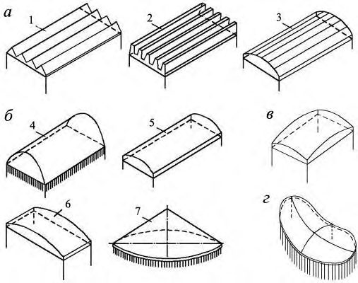
а - призматические складки; б - оболочки нулевой гауссовой кривизны; в - оболочки положительной гауссовой кривизны; г - то же, отрицательной; д - оболочки с вертикальной осью вращения; е - оболочки с горизонтальной осью вращения; ж - тороидальные оболочки разнозначной гауссовой кривизны; и многогранники; к - то же, шатрового типа; л -составные оболочки; м - то же, из гиперболических треугольных сводов; н - панели-оболочки размером на пролет покрытия и вспарушенные оболочки размером на ячейку здания; п - неразрезные оболочки; 1 - балочная складка с треугольным поперечным сечением; 2 - то же, с трапециевидным; 3 - то же, со сводчатым (призматические выпуклые складки); 4 -свод-оболочка; 5 - длинные цилиндрические оболочки, 6 - то же, короткие; 7 - коническая оболочка; 8 -купол; 9 - бочарные своды; 10 - гиперболические оболочки; 11 - тороидальная оболочка; 12 - покрытие с треугольным планом из оболочек положительной и отрицательной гауссовой кривизны; 13 - то же, с полигональным планом; 14 - покрытие из составных гипаров; 15 - панели-оболочки КЖС; 16 -вспарушенные плиты-оболочки; 17 - многоволновые оболочки; 18 - многопролетные оболочки
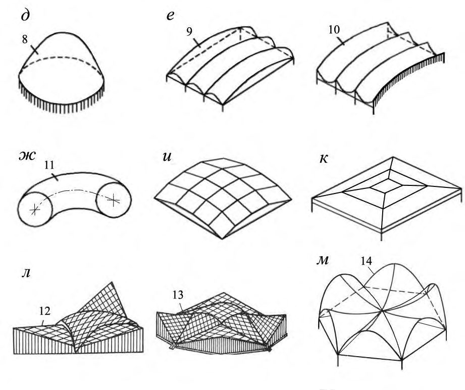
Рисунок 4.1 Схемы тонкостенных пространственных конструкций покрытий и перекрытий
по материалам, из которых возводятся:
- а) железобетонные (в том числе с применением легких и других бетонов);
- б) комбинированные, состоящие из железобетонной плиты и металлических диафрагм или бортовых элементов;
- в) комплексные, состоящие из железобетонной пространственной конструкции и теплоизоляционных, гидроизоляционных и других материалов, г) армоцементные и сталефибробетонные.
В необходимых случаях покрытия и перекрытия с применением тонкостенных пространственных конструкций должны соответствовать акустическим и светотехническим требованиям, условиям отопления и вентиляции, а также допускать возможность подвески кранового оборудования, технологических коммуникаций, потолка или площадок и т. п.
Панели-оболочки и панели-складки следует проектировать с учетом особенностей их транспортирования и складирования.
Применение укрупненных тонкостенных элементов покрытий и перекрытий длиной более 24 м или шириной (высотой) более 3,2 м, а также массой более 15 т должно быть обосновано с учетом их транспортирования и монтажа.
Сборные пространственные конструкции рекомендуется проектировать повышенной готовности - утепленными, с гидроизоляцией и т. п.
4.2Основные расчетные требования
- предельные состояния первой группы (по полной непригодности к эксплуатации вследствие потери несущей способности);
- предельные состояния второй группы (по непригодности к нормальной эксплуатации вследствие образования или чрезмерного раскрытия трещин, появления недопустимых деформаций и др.).
Расчеты по предельным состояниям первой группы включают расчет по прочности, с учетом в необходимых случаях деформированного состояния конструкции перед разрушением, и расчет по устойчивости (общей и локальной).
Расчеты по предельным состояниям второй группы включают расчеты по образованию и раскрытию трещин и по деформациям.
Расчеты выполняют в соответствии с СП 63.13330 и настоящим сводом правил.
- монолитные конструкции, в том числе с предварительно напряженным армированием,
- должны быть рассчитаны по прочности и трещиностойкости при раскружаливании;
- элементы сборно-монолитных конструкций - должны быть рассчитаны по прочности и трещиностойкости на действие собственного веса и веса бетона замоноличивания и монтажных нагрузок;
- сборно-монолитные конструкции после достижения бетоном замоноличивания проектной прочности - должны быть рассчитаны в целом как монолитные с включением в работу сборных элементов, если для этого предусмотрены соответствующие конструктивные и технологические мероприятия;
- элементы сборных конструкций, в том числе укрупненных, при монтаже (до замоноличивания) - должны быть проверены по прочности и трещиностойкости на усилия от действия собственного веса, монтажных нагрузок и реактивных усилий от временных опор, затяжек и других приспособлений;
- сборные конструкции после достижения бетоном замоноличивания стыков проектной прочности и после раскружаливания - должны быть рассчитаны по прочности, жесткости, трещиностойкости на действие собственного веса, монтажных нагрузок и предварительного напряжения арматуры с учетом изменения на данной стадии напряженно-деформированного состояния конструкции от удаления всех или части временных связей.
Расчетные схемы и нагрузки должны соответствовать принятым конструктивным решениям пространственных конструкций и воздействиям для каждой рассматриваемой стадии.
Определение усилий и деформаций от различных воздействий в конструкциях и в образуемых ими системах зданий и сооружений следует производить по методам строительной механики, как правило, с учетом физической и геометрической нелинейности работы конструкций.
Усилия и деформации допускается определять в предположении упругой работы железобетонных элементов с последующей корректировкой результатов расчета для учета влияния физической нелинейности их работы.
Нормативные значения нагрузок и воздействий, подразделение нагрузок на постоянные и временные (длительные и кратковременные), значения коэффициентов надежности по нагрузке и коэффициентов сочетаний следует принимать согласно СП 20.13330.
- метод конечных элементов с учетом физической нелинейности (неупругих деформаций бетона и арматуры) и возможного образования трещин в соответствии с СП 63.13330;
- методы теории упругости, технической теории оболочек и практических методов расчета тонких оболочек и складок, учитывающих неразрезность конструкции, податливость опор и диафрагм, наличие ребер, отверстий и проемов, неравномерные и динамические нагрузки и т. п.;
- методы упругопластической теории, прикладной теории деформаций железобетона с учетом практических гипотез и упрощений упруго-пластического расчета, вытекающих из особенностей работы железобетона с трещинами;
- метод предельного равновесия, в том числе по деформированной схеме, для определения несущей способности или проверки назначенных сечений бетона и арматуры в предварительных и рабочих расчетах, с использованием схемы излома и формы разрушения, установленных испытаниями моделей конструкций до разрушения;
- результаты экспериментальных исследований напряженно-деформированного состояния образцов пространственных конструкций.
При проектировании сложных пространственных конструкций помимо расчетной оценки несущей способности, трещиностойкости и деформативности следует проводить испытания их физических моделей.
Для пространственных ребристых конструкций, а также для складчатых и волнистых сводов-оболочек за срединную поверхность допускается принимать поверхность, в которой лежат центры тяжести поперечных сечений конструкций. В этом случае в расчетах ребристых, складчатых и волнистых оболочек допускается применять усредненную приведенную толщину оболочки red = Ab / с и усредненную приведенную жесткость D = E Ib / с , где Ab и Ib - площадь и момент инерции приведенного двутаврового сечения с шириной полки, равной с .
За расчетный пролет оболочек, многогранников и складок следует принимать расстояние между осями опор покрытий и перекрытий.
За расчетный размер сторон оболочек, многогранников и складок в плане следует принимать расстояние между осями соответствующих бортовых элементов или диафрагм. При этом, если для расчета система делится на поле оболочки и краевые элементы, в расчете следует учитывать эксцентриситет примыкания поля оболочки к диафрагме или к бортовым элементам.
При определении усилий в железобетонных пространственных конструкциях в упругой стадии площадь и момент инерции допускается принимать как для бетонного сечения или приведенного к нему, если > 1% ( - коэффициент армирования, определяемый как отношение площади сечения арматуры к площади поперечного сечения элемента, %). При расчете с учетом неупругих свойств железобетона и образования трещин, а также методом предельного равновесия, следует учитывать действительные характеристики железобетонных сечений для рассматриваемой стадии их работы.
Расчет несущей способности монолитных, сборно-монолитных и сборных пространственных конструкций методом предельного равновесия допускается производить без учета монтажных и других усилий, возникающих в них до замоноличивания, в процессе изготовления и раскружаливания. При необходимости следует учитывать деформированную схему конструкции - в том числе от перемещений, накопленных в процессе изготовления и возведения конструкции.
При расчете пространственных конструкций по трещиностойкости и деформациям усилия от предварительного напряжения арматуры допускается принимать как внешние силы, приложенные в местах анкеровки арматуры, а при криволинейных стержнях - как нормальные силы, действующие по направлению радиуса кривизны.
Расчет предварительно напряженных элементов пространственных конструкций следует производить с учетом СП 63.13330.
Приближенную оценку критической нагрузки тонкостенных пространственных конструкций при потере устойчивости рекомендуется производить согласно 4.2.19-4.2.22.
Максимальные значения начального несовершенства следует определять опытным путем или задавать по аналогии с конструкциями подобного типа, для которых установлены их возможные значения. При отсутствии опытных данных в запас величины критической нагрузки учет начальных несовершенств рекомендуется выполнять умножением модуля деформаций бетона на коэффициент 0,75.
а скалывающие напряжения по нейтральной оси должны не быть более значения, определяемого по формуле
При сочетании нормальных и касательных напряжений следует соблюдать условие
где 0 и 0 вычисляют по формулам (4.1) и (4.2).
Для гладких коротких цилиндрических оболочек интенсивность полной расчетной нагрузки должна быть не более значения, определяемого по формуле
Гладкие подъемистые и пологие оболочки вращения и переноса следует проектировать таким образом, чтобы при равномерном внешнем давлении интенсивность полной расчетной нагрузки не превышала значения критической нагрузки, определенной по формуле
где R 2 -больший из радиусов кривизны оболочки: K = f (R 2 /R 1 ) -коэффициент, учитывающий увеличение критической нагрузки на оболочку с увеличением отношения R 2 /R 1. Для оболочек, у которых R 2 /R 1 1,5 принимается К = 1, а для оболочек, у которых R 2 /R 1 1,5 - значение К принимается по таблице 1.
Таблица 1
| R 2 /R 1 | 1,5 | 1,75 | 2 | 2,25 | 2,5 |
| К | 1,15 | 1,4 | 1,6 | 1,8 | 2,0 |
В формулах (4.1)-(4.5):
, R - толщина и радиус кривизны оболочек;
Е модуль деформаций бетона, принимаемый в зависимости от длительности действия нагрузки по 5.7.
Для предотвращения потери местной устойчивости расстояние между ребрами следует назначать не более δ 7 1 R , где 1 R -меньший радиус кривизны оболочки.
Ребристые оболочки при расчете устойчивости могут рассматриваться как ортотропные. В случае, когда размеры ребер обоих направлений и расстояния между ними различаются между собой не более чем на 20%, ребристую оболочку при расчете допускается рассматривать как гладкую с условной толщиной f , определяемой по формуле
и с условным модулем упругости Ef , определяемым по формуле
где b - расстояние между осями соседних ребер; A -площадь сечения, образованного одним ребром вместе с примыкающими частями тела оболочки шириной b ;
I - момент инерции того же сечения.
Для ребристых цилиндрических оболочек при пользовании формулами (4.1)-(4.3) под , , 0 и 0 следует понимать напряжения, отнесенные к условной толщине оболочки f .
Расчет на прогрессирующее обрушение следует производить на действие нормативных нагрузок, с применением нормативных значений прочностных характеристик арматуры и бетона, и с учетом физической, геометрической и конструктивной нелинейностей.
Расчетные значения температур принимаются для различных климатических районов Российской Федерации по СП 131.13330, а значения расчетных приведенных температур - в соответствии с СП 20.13330.
Расчет производят на неблагоприятные сочетания летних (июльских) и зимних (январских) приведенных температур, которые могут быть как в период строительства, так и в период эксплуатации зданий.
Расчет усилий и деформаций пространственных конструкций на изменение температуры допускается выполнять в упругой стадии, при этом следует учитывать податливость стыковых соединений (для сборных конструкций) и основания.
Изгибную и продольную жесткости стыков для сборных конструкций следует определять по СП 63.13330 - как для армированных бетонных сечений, с учетом трещин, пластических свойств и ползучести бетона.
Для расчета предела огнестойкости по потере несущей способности железобетонной конструкции следует применять те же уравнения равновесия и деформации, из которых выводят формулы для статического расчета.
Расчет предела огнестойкости по потере несущей способности следует производить в соответствии с расчетом железобетонных конструкций по предельным состояниям первой группы по СП 63.13330, СП 20.13330 и с учетом следующих условий:
- в случаях, когда нельзя установить значение усилий от нормативной нагрузки, допускается принимать их равными 0,7 расчетных;
- при проектировании пространственных конструкций зданий и сооружений, относящихся к первому уровню ответственности, отказы которых после пожара могут привести к тяжелым экономическим и экологическим последствиям, а также конструкций, восстановление которых потребует больших материальных затрат, следует обеспечить их огнесохранность.
5Требования к материалам и изделиям
Легкие бетоны классов по прочности на сжатие В7,5 и В10 допускается применять в совмещенных пространственных конструкциях покрытий (ГОСТ 25820).
Поризованные и крупнопористые бетоны в несущих железобетонных пространственных конструкциях допускается применять при специальном техникоэкономическом обосновании.
При омоноличивании конструктивных стыков класс по прочности на сжатие тяжелого бетона или бетона на пористых заполнителях должен быть не ниже В10.
Для конструкций, подвергаемых атмосферным воздействиям окружающей среды при расчетной отрицательной температуре наружного воздуха в холодный период от минус 5 С до минус 40 С, марку бетона по морозостойкости следует принимать не ниже F75, а при расчетной температуре наружного воздуха выше минус 5 С марку бетона по морозостойкости не нормируют.
В остальных случаях требуемые марки бетона по морозостойкости устанавливают в зависимости от назначения конструкций и условий окружающей среды (СП 131.13330).
При продолжительном действии нагрузки значения модуля деформаций бетона определяют с учетом ползучести по формуле (6.3) СП 63.13330.2012.
При непродолжительном действии нагрузки значение модуля деформаций бетона определяют умножением значения его начального модуля упругости Еb на коэффициент 0,85.
6Основные требования к конструированию
6.1Монолитные пространственные конструкции
Для повышения жесткости поля оболочки или складки допускается предусматривать ребра прямоугольного или трапециевидного сечения. Шаг ребер следует определять расчетом поля оболочки или плиты складки на прочность, устойчивость или локальную несущую способность. Для уменьшения изгибающих моментов в плите оболочки ось симметрии сечения ребер рекомендуется совмещать с направлением нормали к поверхности (для ребер, располагаемых в местах перелома складчатой поверхности, - с направлением биссектрисы угла сопряжения граней).
- с линейчатыми поверхностями (цилиндрические, гиперболические оболочки, коноиды, призматические складки);
- с поверхностями переноса положительной гауссовой кривизны (параболические и круговые оболочки).
У растянутой грани изгибаемых плит следует предусматривать не менее одной арматурной сетки. Сжатые плиты, толщина которых определяется условием обеспечения местной несущей способности или устойчивости, и растянутые плиты рекомендуется армировать по расчету двумя сетками, располагаемыми симметрично относительно срединной поверхности с обеспечением минимально допустимого значения защитного слоя бетона.
В случае, если в плите конструкции арматура по расчету не требуется, то следует предусматривать конструктивное армирование плиты не менее, чем одной сеткой из арматурных стержней диаметром 3-4 мм. Наибольшие расстояния между осями арматурных стержней должны быть не более 4 и не более 200 мм.
Предварительно напрягаемую арматуру следует располагать в каналах или пазах с последующим замоноличиванием бетоном или в трубчатых каналообразователях без сцепления с бетоном с последующим их заполнением противокоррозионными составами. Схемы расположения напрягаемой арматуры в основных типах пространственных конструкций показаны на рисунке 6.1. а - в куполе; б - в пологой оболочке положительной гауссовой кривизны, опертой по контуру; в - в шатровой складке; г - то же, с фермами-диафрагмами, опертыми в углах оболочки; д - в цилиндрической оболочке; е - в шедовой однопролетной оболочке; ж - в шедовой неразрезной оболочке, армированной перекрестными пучками; и - в зонтичной оболочке, образованной из четырех гиперболических параболоидов
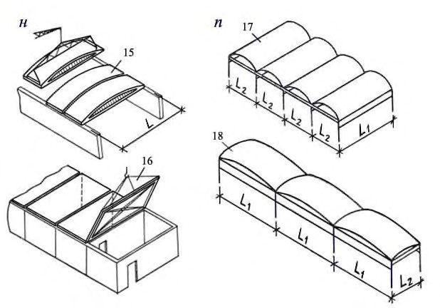
Рисунок 6.1 Схемы расположения напрягаемой арматуры
6.2Сборно-монолитные пространственные конструкции
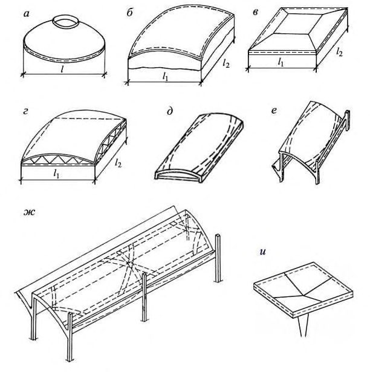
а - тонкостенный коробчатый железобетонный или армоцементный элемент; б - деталь поперечного сечения конструкции; 1 - монолитный бетон; 2 - выпуски арматуры из несущей опалубки
Рисунок 6.2 Сборно-монолитные оболочки с использованием несущей железобетонной или армоцементной опалубки
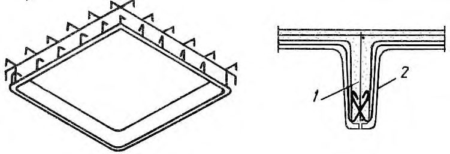
1 - монолитная плита-оболочка; 2 - металлическая или сборная железобетонная ферма-диафрагма
Рисунок 6.3 Схема сборно-монолитной оболочки покрытия
Для обеспечения передачи контактных усилий между монолитным бетоном и сборными элементами в них рекомендуется предусматривать шпонки, упоры, выпуски арматуры и закладные детали (по 6.4).
6.3Сборные пространственные конструкции
Форма и размеры элементов сборных конструкций должны удовлетворять требованиям расчета и назначаться с учетом технологии их изготовления, транспортирования и монтажа -в том числе монтажа блоками с применением укрупнительной сборки монтажных элементов на строительной площадке (СП 70.13330).
Допускается применять крупноразмерные элементы, изготовляемые на строительной площадке, в большепролетных и других уникальных конструкциях, а также в случаях, когда это технически и экономически целесообразно.
При проектировании сборных пространственных конструкций и их элементов допускаемые отклонения от их номинальных размеров следует назначать согласно ГОСТ 13015.
В качестве сборных элементов пространственных конструкций покрытий и перекрытий рекомендуется использовать:
- плоские или цилиндрические панели, в том числе комплексные, повышенной готовности;
- диафрагмы и бортовые элементы в виде балок, арок, безраскосных и раскосных ферм, балок-стенок.
Балки и арки могут быть прямоугольного, таврового, двутаврового, пустотелого и других поперечных сечений. Растянутые и изгибаемые диафрагмы и бортовые элементы, а также панели длиной 12 м и более целесообразно проектировать с предварительнонапряженной арматурой, а в случае необходимости на период монтажа - с временными подкреплениями (по 6.2.3).
При конструировании сборных пространственных покрытий и перекрытий допускается и другое членение при соответствующем технико-экономическом обосновании, например, на панели, включающие части бортовых элементов или диафрагм.
- Примеры членения основных сборных покрытий и перекрытий приведены на рисунке 6.4.
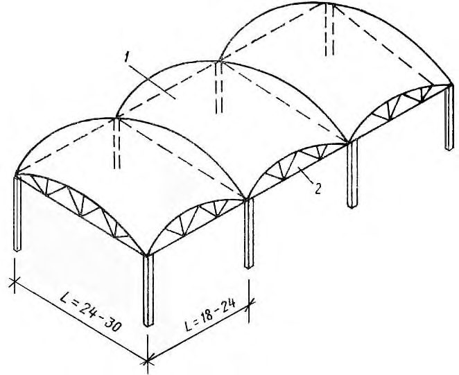
Рисунок 6.4 Примеры членения сборных пространственных покрытий и перекрытий
Бортовые балочные элементы следует конструировать аналогичными типовым железобетонным балкам покрытий и перекрытий, а бортовые растянутые элементы оболочек положительной гауссовой кривизны - с предварительно-напряженной арматурой. Бортовые элементы с пролетами менее 20 м допускается конструировать без предварительного напряжения арматуры.
Соединения элементов при укрупнительной сборке должны быть достаточно простыми для выполнения, как правило, без замоноличивания.
6.4Стыки сборных конструкций
Схемы стыков приведены на рисунке 6.5.
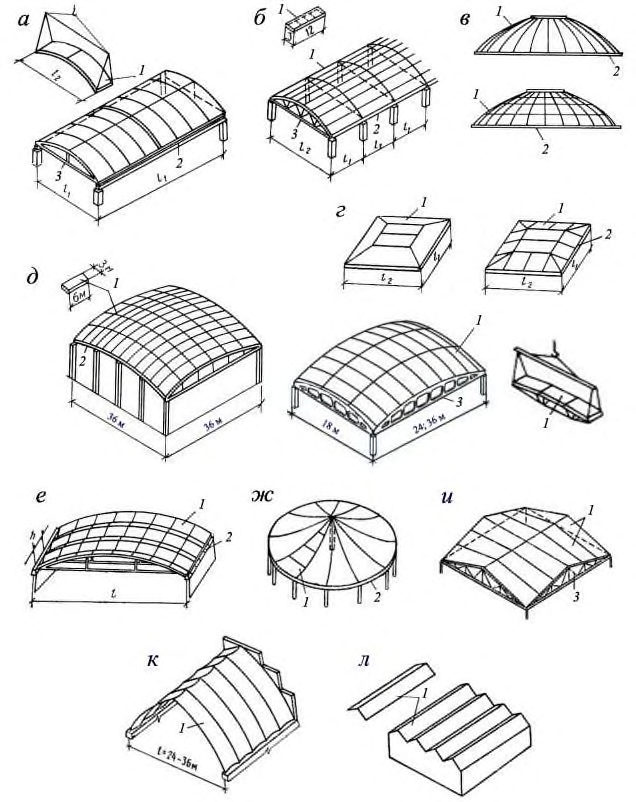
а - сжатый стык панелей со сварными накладками; б - то же, с перепуском арматуры; в - то же, с отгибами при наличии сдвигающих усилий; г - растянутый стык; д - то же, при наличии сдвигающих усилий; е - стык со сварной накладкой и шпонками, работающий на сдвиг; ж - то же, испытывающий сжатие с изгибом; и - стык панелей висячей оболочки на ванте; к - стык панелей и
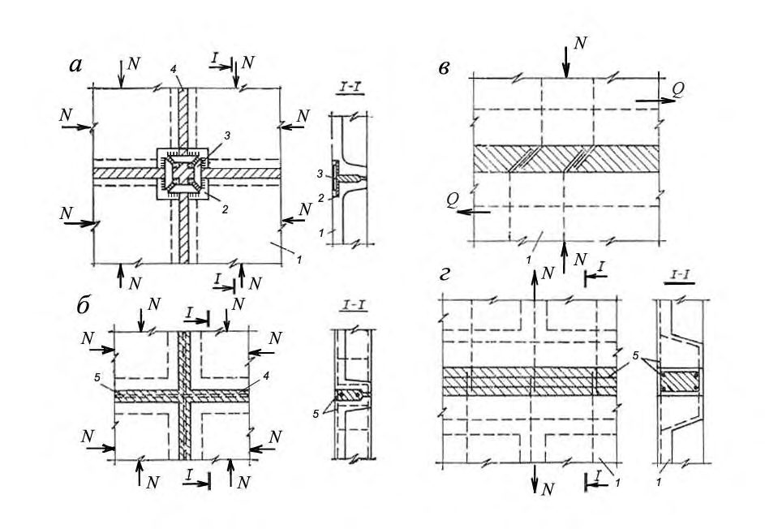
диафрагмы смежных оболочек и схема шпонки стыка; 1 - панель; 2 - закладная деталь; 3 - соединительная накладка; 4 - бетон замоноличивания; 5 - продольная арматура стыка; 6 - ванта в трубке с защитной смазкой; 7 -диафрагма с выпусками арматуры; 8 - сварной шов; 9 - шпонки
Рисунок 6.5 Схема стыков сборных конструкций
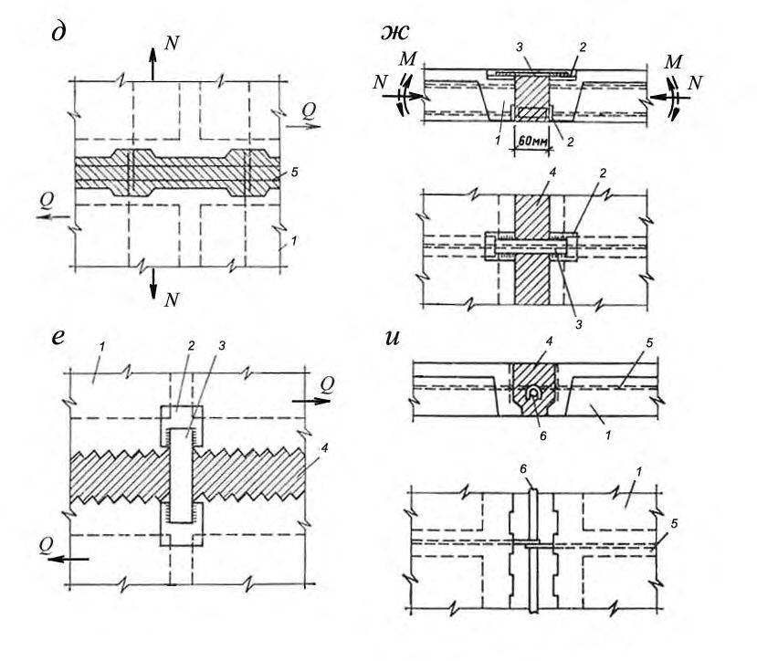
1 - стальной упор; 2 - шпонки; 3 - бетон замоноличивания
Рисунок 6.6 Схема стыков железобетонных и металлических элементов
Металлические детали стыков должны быть защищены от коррозии согласно СП 28.13330.
Прочность бетона сборных элементов при местном сжатии в стыке должна быть обеспечена.
Ширина раскрытия трещин на уровне арматуры должна быть не более допустимой по СП 63.13330.
В стыках, воспринимающих касательные усилия сдвига с помощью шпонок, размеры выступов и углублений, образуемых в бетоне сборных элементов и в бетоне замоноличивания, должны удовлетворять расчету шпонок на смятие Q 1 и срез Q 2 по формулам:
где Rb , Rbt -расчетные сопротивления бетона сборных элементов или бетона омоноличивания соответственно при осевом сжатии и растяжении; ). l k , hk, t k - длина, высота и глубина шпонок (рисунок 6.5, и
Если через стык передаются местные сдвигающие усилия, то шпонки учитывают только в зоне действия этих усилий, при этом две крайних шпонки не учитывают.
Гибкие выпуски арматуры и соединения закладных деталей, расположенные перпендикулярно к оси стыка, как правило, не учитываются в расчете на усилия сдвига. Их устанавливают для восприятия возможных растягивающих усилий, перпендикулярных к оси шва, и по конструктивным соображениям. Если такое армирование может полностью воспринимать данные растягивающие усилия, то в формуле (6.2) вместо 2 Rbt допускается принимать 3 Rbt .
Если шпоночный шов обжат усилием N, перпендикулярным к плоскости шва, то высоту шпонки допускается определять по формуле
и принимать уменьшенной против высоты, определенной по формуле (6.2), но не более чем в два раза.
6.5Отверстия и проемы
При больших размерах проемов в плите рекомендуется предусматривать распорки и раскосы, которые вместе с окаймляющими ребрами образуют раму или ферму, способную воспринимать нормальные и касательные или только нормальные усилия. Допускается применение специальных металлических конструктивных элементов, обеспечивающих прочность и жесткость железобетонных элементов оболочек с отверстиями и поддерживающих светопрозрачные панели.
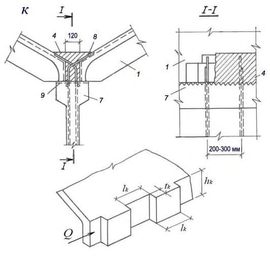
1 - напрягаемая система; 2 - затяжка; 3 - арка-диафрагма; 4 - поперечная балка; 5 - колонна; 6 - сборные плиты
Рисунок 6.7 - Свод с большой площадью световых проемов
Напрягаемая система (рисунок 6.8) располагается в ячейке в форме ромба, образованной контурными элементами, и включает верхние и нижние наклонные стержни, соединяющие углы ячейки с концами центральной металлической стойки. Заданный уровень растяжения в наклонных стержнях создается изменением длины стойки с помощью натяжного устройства или съемного домкрата. Указанная система -опора светопрозрачного покрытия и элемент жесткости.
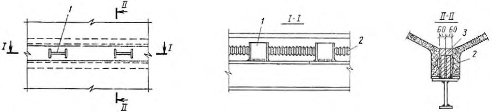
1 - контурный элемент; 2 - наклонный стержень; 3 - центральная стойка; 4 - домкрат
Рисунок 6.8 - Световой проем с напрягаемой системой
Отверстия рекомендуется проектировать круглыми, овальными или многоугольными с округлением углов радиусом r 2 .
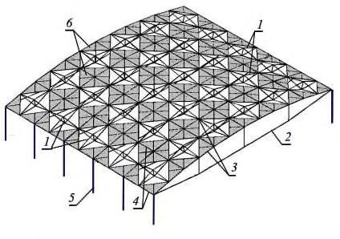
1 - арматура; 2 - стык арматуры с перепуском на 30 d или равнопрочный сварной стык
Рисунок 6.9 Окаймляющее армирование вокруг отверстий
6.6Деформационные швы
- в многопролетных покрытиях следует устраивать деформационные швы между парными бортовыми элементами (рисунок 6.10);
- в складчатых и волнистых сводчатых покрытиях деформационные швы, с целью повышения их водонепроницаемости, рекомендуется проектировать на гребне у складки или волны свода;
- температурно-усадочные деформации пространственных конструкций должны компенсироваться за счет гибких или качающихся колонн, а также шарнирно подвижных или упруго-деформируемых (полимерных прокладок) опорных устройств. При больших (100 м и более) пролетах, как правило, применяют свободно податливые опоры при условии неподвижного закрепления покрытия не менее чем в двух точках по сторонам контура или в углах;
- деформационные швы покрытия должны совпадать со швами, перерезающими стены, если специально не предусмотрены мероприятия для независимого деформирования стен и покрытия. а - в направлении l 2 ; б - в направлении l 1 ; 1 - бортовая балка; 2 - ферма-диафрагма; 3 - оболочка; 4 -колонна; 5 - шов
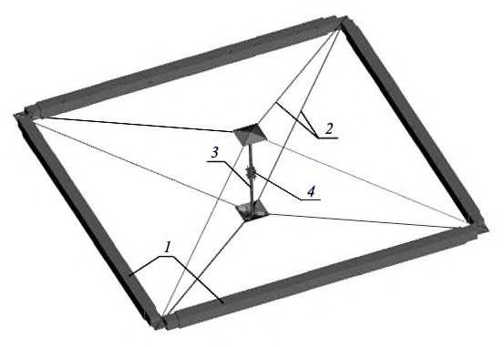
Рисунок 6.10 Пример решения температурного шва
7Своды
Основные положения
Сводчатые покрытия следует проектировать, как правило, из сборных железобетонных элементов для прямоугольных в плане однопролетных или многопролетных зданий с опиранием по продольным краям (вдоль образующей) на колонны, стены или непосредственно на фундаменты.
Распор сводов воспринимается затяжками (рисунок 7.1) из стали или железобетона, поперечными стенами, рамами, контрфорсами или фундаментами (рисунок 7.2). При проектировании сводов следует учитывать податливость элементов или конструкций, воспринимающих распор. Для снижения податливости поперечных стен, контрфорсов и фундаментов следует предусматривать затяжки, расположенные ниже уровня пола.
Очертание сводов, секции которых состоят из трех и большего числа элементов, для сокращения числа типоразмеров элементов рекомендуется принимать по дуге окружности.
Рисунок 7.1 Своды с затяжками
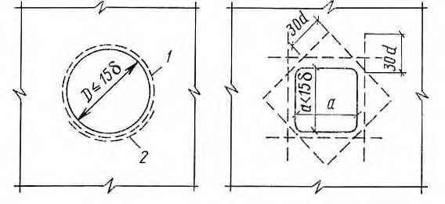
Рисунок 7.2 Своды без затяжек
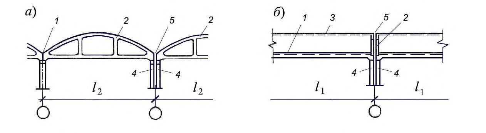
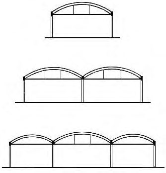
а - цилиндрические своды; б - складчатые своды (типы 1 и 2); в - волнистые своды (типы 1, 2, 3)
Рисунок 7.3 Поперечные сечения сводчатых покрытий
По условиям изготовления элементов сборных сводчатых покрытий, удобству укладки утеплителя и устройства кровли предпочтительны цилиндрические и складчатые очертания сводов.
Сборные элементы сводчатых покрытий рекомендуется изготовлять пароизоляционным слоем, утеплителем и слоем кровельного ковра. с
Складки или волны сводов, примыкающие к деформационным швам, следует конструировать с затяжками-распорками, диафрагмами и т. п., исключающими возможность деформации контура их поперечного сечения.
Расчет сводов
Своды по предельным состояниям следует рассчитывать по СП 63.13330 и с учетом 4.2. При расчете сводов значения нагрузок и воздействий принимают согласно СП 20.13330. При расчете элементов, воспринимающих опорные реакции сводов (затяжки, опорные фермы, контрфорсы и т. п.), снеговую нагрузку следует принимать равномерно распределенной по всему пролету свода.
Сосредоточенные нагрузки от подвесного оборудования и полосовые нагрузки допускается учитывать при расчете только тех складок или волн свода, к которым они непосредственно приложены, - без учета их взаимодействия со смежными складками или волнами.
где g - постоянная нагрузка в ключе свода; на опоре свода gx = g 1 (рисунок 7.4);
- угол наклона касательной к оси свода в рассматриваемом сечении.
При очертании оси сводов по дуге окружности (рисунок 7.4) значения R 0, , y, s следует определять по формулам:
Рисунок 7.4 Расчетная схема свода
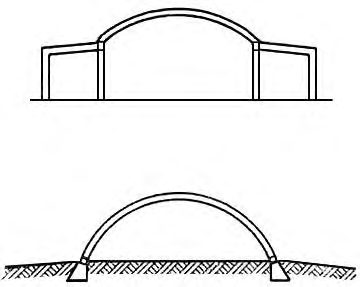
При расчете складчатых сводов с треугольным очертанием поперечного сечения, распор которых воспринимается затяжками, расположенными в двух уровнях (по 7.24), следует принимать, что усилия между затяжками распределяются равномерно, а равнодействующая усилий в затяжках расположена в середине расстояния между ними по высоте.
Таблица 7.1
| Схема нагрузки | Вертикальные реакции | Распор |
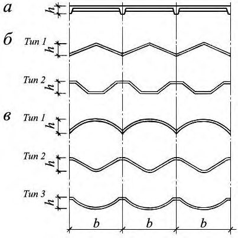
Коэффициенты m 1 и m 2 принимаются по таблице 7.2.
Таблица 7.2
| f / l | m 1 | m 2 | f / l | m 1 | m 2 |
|---|---|---|---|---|---|
| 1/2 | 0,061 | 0,007 | 1/5 | 0,142 | 0,093 |
| 1/3 | 0,099 | 0,031 | 1/6 | 0,15 | 0,116 |
| 1/4 | 0,127 | 0,061 | 1/7 | 0,155 | 0,15 |
Нагрузку g 1 в опорном сечении следует определять по формуле (7.1), принимая угол равным углу наклона элементов свода, примыкающих к опорам.
Коэффициент k , учитывающий влияние смещения пят вследствие упругого удлинения затяжек и обжатия сводов на значение распора, следует определять по формуле
где I и A - момент инерции и площадь поперечного сечения складки или волны свода;
At и Еt - площадь поперечного сечения и модуль упругости стальных затяжек в пределах одной складки или волны свода; для железобетонных затяжек при нагрузках, действующих после их замоноличивания, следует учитывать работу бетона с трещинами; n - коэффициент, принимаемый в зависимости от подъема свода по таблице 7.3;
Таблица 7.3
| f / l | Длина оси свода S * | Коэффициент n | f / l | Длина оси свода S * | Коэффициент n |
|---|---|---|---|---|---|
| 1/2 | 1,57 l | - | 1/6 | 1,07 l | 0,881 |
| 1/3 | 1,28 l | 0,696 | 1/7 | 1,05 l | 0,911 |
| 1/4 | 1,16 l | 0,785 | 1/8 | 1,04 l | 0,931 |
| 1/5 | 1,1 l | 0,843 | 1/9 | 1,03 l | 0,942 |
| 1/10 | 1,02 l | 0,952 |
*Свод очерчен по дуге окружности.
Е' - модуль деформаций бетона с учетом ползучести и податливости швов между панелями или элементами свода, определяемый по формуле
здесь Еb - начальный модуль упругости бетона; lp - ширина панели или длина элемента свода в направлении перекрываемого пролета, м; hp - толщина приведенного сечения панели (по 7.14) или элемента свода; hs - высота замоноличенного шва.
При восприятии распора сводов контрфорсами, фундаментами, поперечными стенами или другими конструкциями значение коэффициента k следует определять по формуле
где - горизонтальное смещение пяты свода при единичном значении распора H .
При расчете на температурные воздействия распор сводов H следует определять по формуле
где - коэффициент линейного расширения бетона; t 1 > 0 и t 2 > 0 - температура свода и затяжки соответственно, °C.
При определении распора от собственного веса панелей или элементов сборных сводчатых покрытий следует принимать k = 1. Для сводов со стрелой подъема f l / 3 коэффициент k при всех нагрузках допускается не учитывать.
где М 0 и Q 0 - изгибающий момент и поперечная сила в соответствующем сечении однопролетной балки пролетом l ;
Н - распор складки или волны свода; у - ордината оси свода в рассматриваемом сечении.
Проверку прочности сечений сводов следует производить по СП 63.13330 при значениях усилий, определяемых по формулам (7.10) и (7.11).
При наличии сосредоточенных нагрузок следует проверять прочность сечений с наибольшими изгибающими моментами.
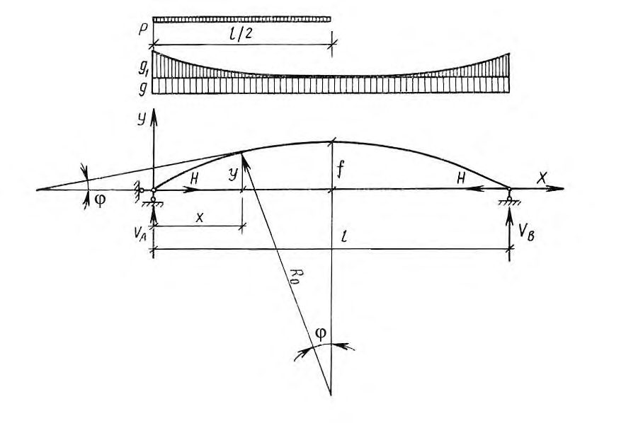
а - сечение панели свода; б - приведенное сечение панели; в - приведенное сечение складки свода
Рисунок 7.5 Пример построения приведенного поперечного сечения складки свода
Приведенное поперечное сечение складки свода принимается путем суммирования толщины двух панелей по горизонтальному сечению.
В случае, если при соблюдении условия е 0 0,7 у прочность складки окажется недостаточна, рекомендуется увеличивать высоту ее поперечного сечения или устанавливать рабочую арматуру. Рабочую арматуру в панелях следует устанавливать по краям поперечного сечения складки и сечение складки рассчитывать как железобетонное.
где е 1 - эксцентриситет, определяемый по формуле
R 0 - радиус оси свода;
0 - центральный угол, ограничивающий края прямолинейного элемента складки.
Рисунок 7.6 -Эксцентриситет приложения нормальной силы на прямолинейных участках складки
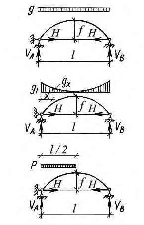
- 0,54 S для двухшарнирных сводов l 0;
- 0,58 S для трехшарнирных сводов l
- 0, где S - длина оси свода, определяемая по таблице 7.3.
Сплошные опорные панели (7.23 и 7.24) рассчитывают на изгиб в своей плоскости как балки-стенки на двух опорах от равномерно распределенных по сечению складки нормальных сжимающих сил. При этом принимают, что опоры панелей - затяжки сводчатого покрытия (рисунок 7.7).
Значение растягивающего усилия в рабочей арматуре Ns , устанавливаемой у примыкающего к фермам продольного края панелей, допускается определять по формуле Ns = 0,2 q l , (7.14) где q l - нормальное усилие, воспринимаемое опорной панелью между затяжками.
Рисунок 7.7 Расчетная схема опорной панели
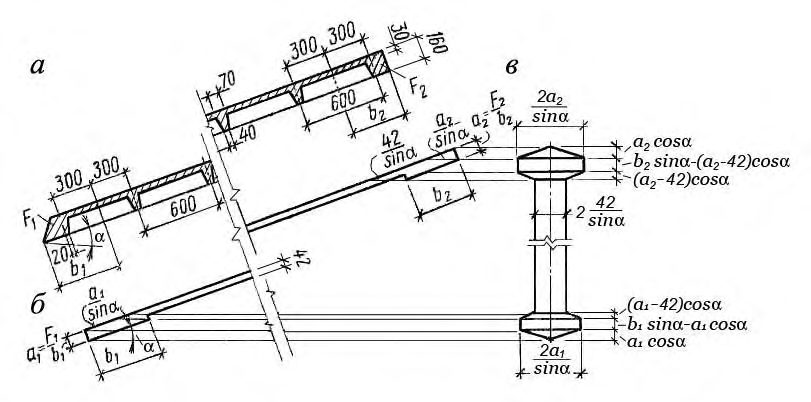
Сечение арматуры в каркасах опорных панелей и расстояние между каркасами в обоих направлениях следует определять по расчету на поперечную силу и на раскрытие трещин.
Опорную ферму допускается рассчитывать как раму с затяжкой с учетом жесткости конькового узла.
Конструирование сборных сводов
Конструирование цилиндрических и призматических (полигональных) сводов
При членении цилиндрических сводов по поперечному сечению на два элемента их рекомендуется проектировать трехшарнирными. При большем числе сборных элементов своды, как правило, проектируются двухшарнирными.
Разновидность цилиндрических сводов - сегментные своды, собираемые из панелейоболочек КЖС и проектируемые согласно 14.2.
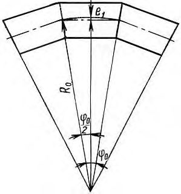
- а - свод из секций шириной 6 м; б - то же, шириной 1,5-3 м; в - опорный узел; г - свод из складчатых ребристых панелей; 1 - рядовые панели; 2 - опорные панели; 3 , 4 - предварительно-напряженные железобетонные или стальные затяжки; 5 - подвески; 6 - накладки; 7 - отверстие для затяжки
Рисунок 7.8 Полигональные своды из ребристых плит
Допускается применение складчатых панелей с переломами поверхности полки и изломами ребер в продольном направлении для образования конструкции трехшарнирного свода (рисунок 7.8, г ).
В полигональных сводах к стержням рабочей арматуры ребер в углах панелей следует приваривать закладные детали, которые в пределах каждой секции должны соединяться между собой накладками, обеспечивающими непрерывность армирования ребер в пределах всего перекрываемого пролета.
Торцы плит, примыкающих к опорам, должны быть, запроектированы с учетом устройства отверстий для пропуска затяжек и образования плоскостей для опирания сводов на опорные конструкции (рисунок 7.8, в ).
При проектировании цилиндрических и полигональных сводов рекомендуется предусматривать возможность их монтажа укрупненными элементами, длина которых равна длине перекрываемого пролета.
Конструирование складчатых сводов
Своды с треугольным поперечным сечением складок
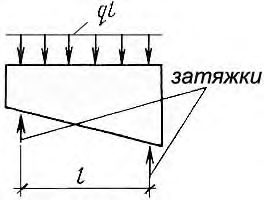
Рисунок 7.9 Конструкция складчатого свода
Ширину b примыкающих друг к другу тонкостенных складчатых арок (складок), образующих свод, принимают, как правило, равной 6-12 м - в соответствии с шагом несущих колонн. В общественных зданиях ширину складок допускается принимать равной 3 м, если это необходимо по архитектурным соображениям.
Высоту поперечного сечения складок h следует принимать от 1/4 до 1/10 их ширины. При увеличении высоты поперечного сечения складок возрастает несущая способность сводов и обеспечивается возможность перекрытия ими больших пролетов.
При конструировании панели с проемом для зенитного фонаря края проема следует усиливать ребрами, расположенными в направлении действия основных усилий в складках сводов. Опорные панели вследствие концентрации усилий в местах расположения затяжек или других элементов, воспринимающих распор сводов, следует проектировать сплошными.
При необходимости (в сводах значительных пролетов) распределения на большую площадь усилий, возникающих в местах закрепления затяжек, допускается устройство сплошных участков ребристых панелей, примыкающих к опорным панелям свода. Необходимость устройства сплошных участков панелей устанавливается расчетом (7.18).
Все панели складчатого свода, за исключением опорных, рекомендуется принимать с одинаковыми опалубочными размерами.
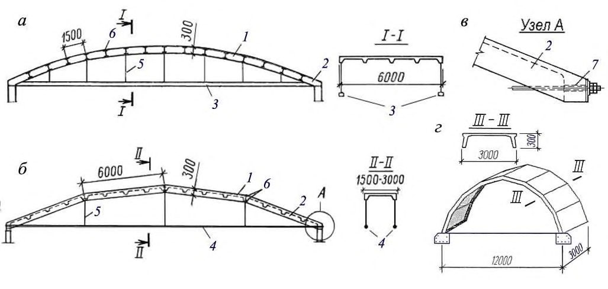
а - опорная ферма; б - примыкание к ферме опорных панелей и плит продольного карниза; 1 - консоль для опирания торцевого карниза у ферм, установленных в крайних пролетах; 2 - швеллеры; 3 - пластина; 4 -закладные пластины; 5 - отверстия для затяжек; 6 - накладка; 7 -подвеска; 8 - опорная панель; 9 - плита продольного карниза; 10 - закладные уголки; 11 - анкер; 12 - фиксатор (стержень, l = 80-100 мм)
Рисунок 7.10 Конструкция опор складчатого свода, распор которого воспринимается затяжками
При расположении опор свода в уровне земли бортовыми элементами могут служить ленточные фундаменты (сборные или монолитные) с верхней наклонной гранью, перпендикулярной к оси свода в опорном сечении.
В сводах, опирающихся непосредственно на фундаменты, допускается устройство проемов для ворот в пределах ширины одной складки свода. При этом для восприятия усилий, возникающих в ослабленных проемами складках, должны быть предусмотрены контрфорсы, перемычки или другие элементы, окаймляющие проем.
Конструкцию свода и укрупненных монтажных блоков рекомендуется проектировать с учетом сборки складок с помощью инвентарного передвижного кондуктора (рисунок 7.11). Распалубка складок может производиться после достижения бетоном швов кубиковой прочности, равной 0,2 МПа.
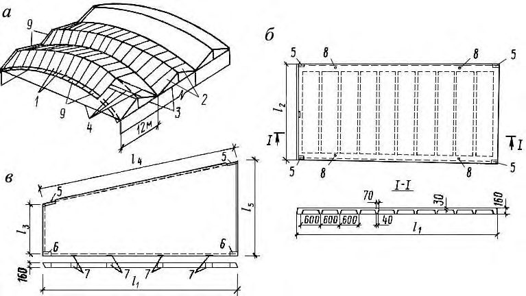
1 - укрупненные монтажные блоки
Рисунок 7.11 Схема инвентарного передвижного кондуктора для монтажа свода
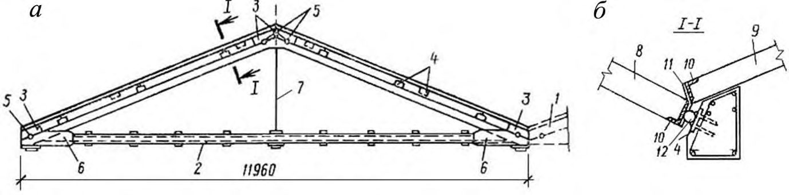
1 - опорные панели; 2 - муфта; 3 - труба или полый цилиндр; 4 - стержень с резьбой на двух концах
Рисунок 7.12 Закрепление затяжек смежных пролетов в опорных фермах
Своды с трапециевидным поперечным сечением складок
Рисунок 7.13 Трапециевидное поперечное сечение элемента свода
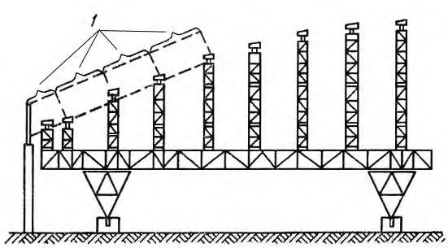
Конструирование волнистых сводов
Для бочарных сводов пролетами от 48 до 100 м отношение стрелы подъема к пролету принимают в диапазоне 1/10 - 1/12, ширину свода - 6-12 м. Поверхность бочарного свода образуется перемещением образующей вдоль дуги окружности или параболы таким образом, чтобы плоскость образующей оставалась перпендикулярной к оси свода. Переменная высота сечения опорной зоны свода постепенно переходит от профиля средней зоны к прямой линии опор. Форму поверхности сборных плит принимают в зависимости от продольной или поперечной схемы разрезки. Размеры сборных ребристых плит в плане, как правило, принимают равными 3 6 или 3 12 м. Боковые поверхности ребер плит выполняют со шпонками, обеспечивающими передачу сдвигающих усилий. Соединение плит между собой производят сваркой закладных деталей или выпусков арматуры. Затяжки бочарных сводов выполняют предварительно напряженными железобетонными или стальными. В качестве напрягаемых элементов используют стержневую арматуру и высокопрочную проволочную в виде прядей и стальных канатов. Затяжки, воспринимающие распор свода, крепятся непосредственно к опорным балкам, воспринимающим вертикальные и горизонтальные (в промежутках между затяжками) нагрузки (рисунок 7.14).
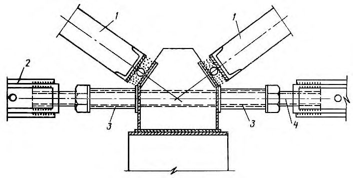
а - продольный разрез по своду; б - план раскладки плит; в - поперечный разрез по средней зоне; г - то же, по опорной зоне; 1 - опорный блок; 2 - бортовые элементы; 3 - стальная подвеска; 4 - средняя плита с отверстиями; 5 - блок затяжки; 6 - плита опорной зоны; 7 - балка диафрагмы
Рисунок 7.14 Схема бочарного свода пролетом 96 м
Волнистые своды выполняют из тонкостенных криволинейных в продольном направлении элементов шириной 2-3 м.
Для перекрытия пролетов до 24 м в тех случаях, когда это целесообразно по условиям изготовления и транспортирования элементов, каждую волну свода монтируют из двух криволинейных элементов, стыкуемых в ключе свода (рисунок 7.15). При этом стык между элементами может быть шарнирным или жестким. Очертание сводов, волны которых состоят из двух элементов, рекомендуется принимать по кривой давления от постоянной нагрузки.
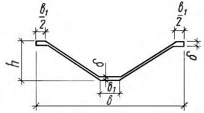
1 - стык элементов свода
Рисунок 7.15 Свод, монтируемый из двух криволинейных элементов
1 - ребра по поперечным краям элементов
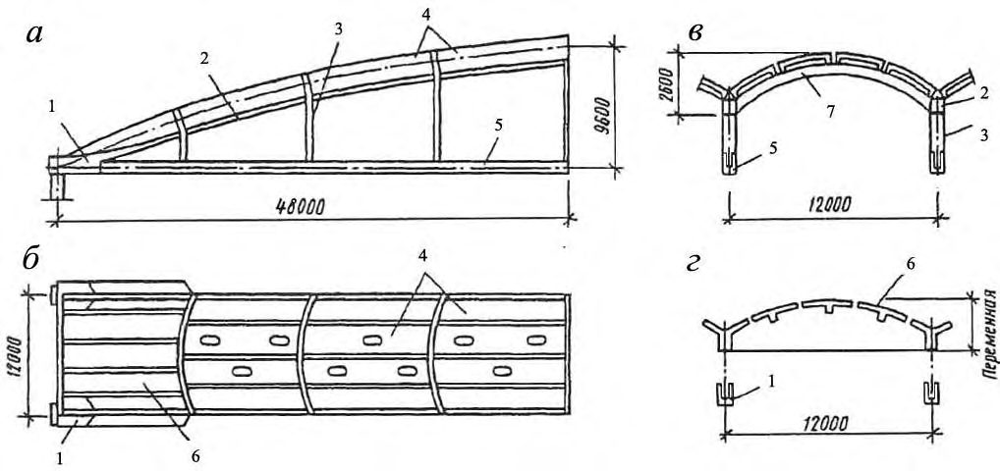
Рисунок 7.16 Поперечное сечение волнистого свода двоякой кривизны (тип 3)
8Треугольные и трапециевидные складки
Основные положения
Расчет призматических складок или складчатых оболочек выполняют с учетом деформаций поперечного контура. Призматические складки изготавливают с продольными бортовыми балками, в которых размещается вся или большая часть продольной растянутой арматуры, и поперечными жесткими диафрагмами по торцам складок (8.6).
Трапециевидные складки (рисунок 8.1, б , в ) изготавливают с горизонтальными полками, усиливающими наиболее сжатую и растянутую зоны сечения. Для устройства плоской верхней поверхности покрытия по складкам могут укладываться плиты, образуя складки замкнутого сечения. В наклонно или горизонтально расположенных гранях складчатых покрытий допускается устраивать световые проемы (рисунок 8.1, г ).
Складчатые конструкции на замкнутом полигональном контуре, образующие складчатый распорный купол (рисунок 8.1, д ), рассчитывают и конструируют с учетом раздела 6.
Призматические складчатые элементы консольно-вантовых покрытий (рисунок 8.1, е ) рассчитывают и конструируют с учетом усилий, возникающих в месте крепления вант.
Треугольные складчатые конструкции выполняют с переменным углом наклона граней, которые имеют очертание пологой линейчатой поверхности второго порядка, например, гиперболического параболоида или коноида (рисунок 8.1, ж ). Растянутый пояс таких складок, как правило, выполняется предварительно напряженным. а - треугольные складки, образуемые из плоских элементов (плит); б - то же, из Г-образных элементов; в - трапециевидные складки, образуемые из Z-образных элементов; г - устройство световых проемов в треугольных и трапециевидных складках; д - треугольные складки переменного сечения на полигональном плане; е - призматические трапециевидные складки в консольном подвесном покрытии; ж - балочная складка с линейчатыми гранями, очерченными по поверхности гиперболического параболоида
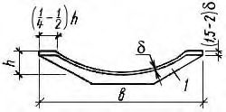
Рисунок 8.1 Схемы призматических складок и складчатых систем
Сборные призматические складки проектируют в зависимости от условий их изготовления и монтажа из плоских, г- или z-образных элементов, а также элементов треугольного и трапециевидного сечений, длиной 2-6 м, в зависимости от вида и размеров поперечного сечения складчатого покрытия, или целыми панельными складками, длина которых равна длине перекрываемого пролета.
Стыки между гранями складок следует проектировать согласно 8.15.
Балочные складки шириной менее 3 м рекомендуется опирать на подстропильные балки, фермы и тому подобные элементы или на стены, а складки шириной 3 м и более допускается опирать непосредственно на колонны.
Расчет складок
В этом случае в средних волнах многоволновой складки или отдельной складки с подкрепляющими ребрами и диафрагмами дополнительных касательных и нормальных усилий в поперечных сечениях не возникает. Тонкостенный элемент такой складчатой конструкции может быть рассчитан и законструирован по схеме простой балки в предположении линейного распределения продольных деформаций по высоте сечения. Стенки и полки, непосредственно нагруженные поперечной нагрузкой, рассчитываются и конструируются с учетом их изгиба. Стыки соседних граней между собой и соединения граней с диафрагмами проектируются так, чтобы обеспечивать конструктивно их совместную работу; б) когда в складчатой конструкции, нагруженной полосовой или сосредоточенной нагрузкой, или работающей как тонкостенная пространственная складчатая система (в зоне опирания крайних складок на торцевую стену), поперечные сечения изменяют свою форму. В этом случае складчатую систему рекомендуется рассчитывать по технической теории ортотропных оболочек и призматических складок или методом конечных элементов с учетом геометрической нелинейности. Поперечное армирование граней и стыков между ними в этом случае определяется расчетом складок как пространственной системы.
Приведенную толщину бетона стенки b для схем, приведенных на рисунке 8.2, следует определять по формуле
а приведенную толщину b 1 (рисунок 8.2) - по формуле
где 1 - толщина бортовых элементов; - угол наклона боковых граней.
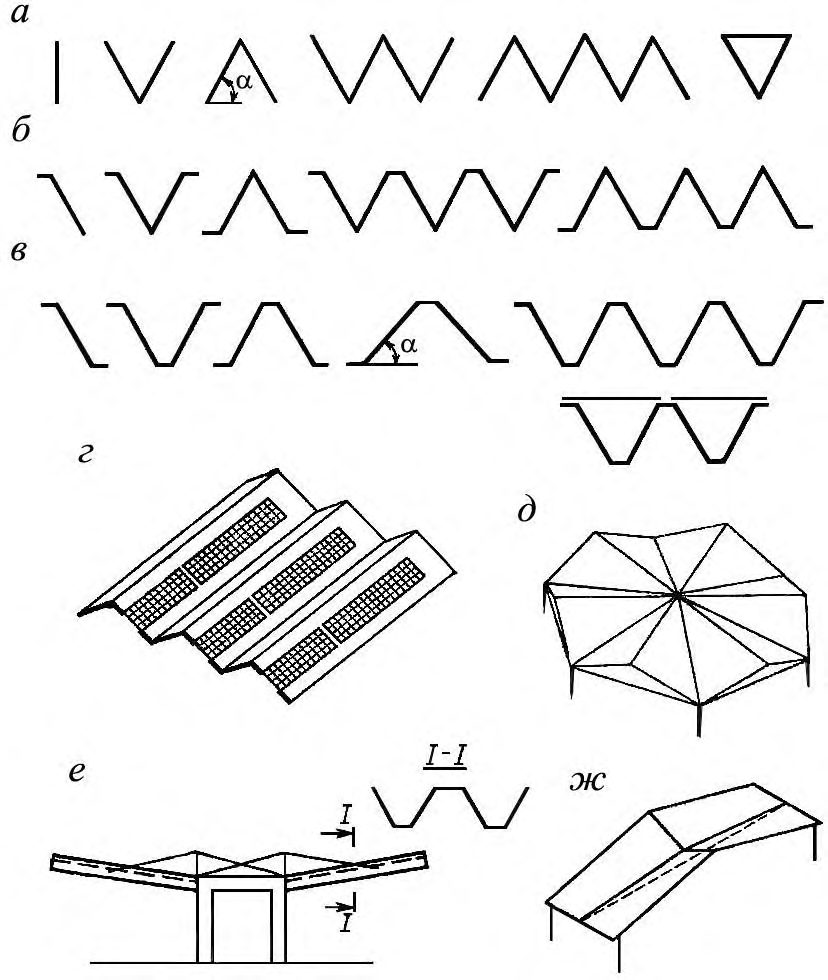
а - к прямоугольным сечениям; б - к тавровым сечениям; в - к двутавровым сечениям
Рисунок 8.2 Схемы поперечных сечений складок и их приведение для расчета
При расчете прочности складки по наклонному сечению на действие поперечных сил следует учитывать фактическую толщину наклонных стенок с поправкой на угол наклона.
При этом нормальные усилия для расчета сечений граней допускается определять без учета неразрезности плиты.
Предварительный расчет поперечных моментов в отдельных складках трапециевидного и прямоугольного сечений допускается производить как для консольных плит с защемлением по вертикальной плоскости симметрии.
где Rs - расчетное сопротивление стали стержней-вставок;
s - коэффициент условий работы, учитывающий возможные эксцентриситеты и ослабления в зоне анкеровки стыковых стержней, принимаемый равным 0,8;
М - изгибающий момент в сечении стыка; z 0 - плечо внутренней пары; n - число стержней; б) сечение стальных анкерных упоров на вставках и колодок рекомендуется определять:
- из условия смятия по контактным поверхностям согласно СП 16.13330 по формуле
где Nc - усилие в канате;
s 1 - коэффициент условий работы, равный 0,8;
Rр - расчетное сопротивление смятию стального упора согласно СП 16.13330;
Ac - площадь сечения упора;
- из условия сжатия бетона под анкерами - согласно СП 63.13330 по формуле
где Ac - площадь сечения анкерной колодки;
Rb - призменная прочность бетона.
Кроме того, расчетное усилие N в предварительно напряженных канатах и стержняхвставках в растянутой зоне (рисунок 8.7) должно удовлетворять условию
где Ab - сечение бетона, в котором расположены анкерные колодки;
Rbs,loc - приведенное расчетное сопротивление бетона сжатию с учетом влияния косвенной арматуры в зоне местного сжатия в соответствии СП 63.13330;
As , Rs - соответственно площадь сечения и расчетное сопротивление продольной арматуры в зоне анкеровки канатов и стержней-вставок.
Конструирование
В случае необходимости расположения предварительно напряженной арматуры на отдельных участках нижней или верхней зон складок (например, в консольно-балочных складках, рисунок 8.3) рекомендуется проектировать прямолинейную арматуру только на тех участках, где она требуется по расчету. На других участках складки монтажные стержни или канаты располагаются без сцепления и могут быть удалены после отпуска их натяжения и освобождения складки от формы. Для этого в соответствующем месте обрыва арматуры предусматривают выемки в стенке складки, через которые стержни или канаты могут быть обрезаны или осуществлен разъем соединительных муфт между основной арматурой и монтажным удлинителем. Размеры выемки следует принимать равными:
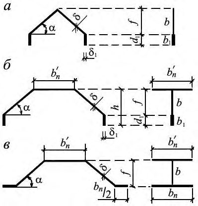
- а - армирование складки; б - деталь выемки для перерезания канатов электродом
Рисунок 8.3 Пример армирования консольно-балочной складки покрытия прямолинейной предварительно напряженной арматурой с обрывом канатов в соответствии с эпюрой моментов
- по направлению, перпендикулярному к оси арматуры, a = d + / 2;
- по направлению, параллельному оси арматуры, b 44 мм;
- по глубине с = ( d + ) / 2; где d - диаметр стержня или каната.
При толщине стенки 40 мм допускается применение предварительно напряженной арматуры с отгибом из нижней зоны складки в верхнюю.
В зонах анкеровки предварительно напряженной арматуры около торцов складок рекомендуется предусматривать поперечную арматуру, предотвращающую расслаивание полок или стенок (рисунок 8.4).
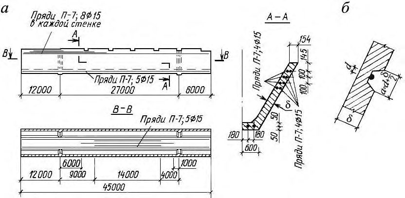
1 - предварительно напряженная арматура; 2 - поперечные стержни; 3 - верхние стержни и их заделка; 4 - сетка
Рисунок 8.4 Деталь армирования полки и стенки в торцевой зоне самозаанкерования предварительно напряженной арматуры
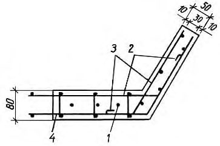
а - отдельными стержнями; б - сварными сетками; в - положение сеток при сварке; 1 - верхние стержни; 2 -то же, нижние; 3 - армирование в вутах; 4 - поперечные стержни пересекающихся сеток; 5 - то же, продольные; 6 - места точечной сварки
Рисунок 8.5 Армирование пересекающимися стержнями жесткого сопряжения граней треугольной складки
Стыки таких элементов следует предусматривать в наименее напряженных участках складки, в плоскостях, перпендикулярных к продольной оси складки. Минимальная ширина замоноличиваемого шва принимается с учетом диаметра стыкуемых стержней и конструкции их соединения, но не более 250 мм.
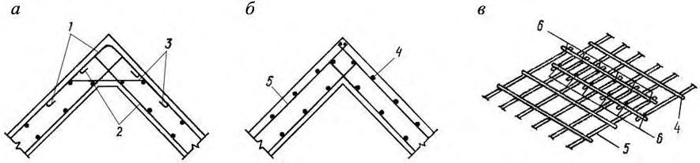
1 - бетон замоноличивания: 2 - отгибаемые и свариваемые выпуски; 3 - предварительно напряженная арматура, натягиваемая на упоры формы; 4 - дополнительные сетки
Рисунок 8.6 Армирование узла складок, изготовляемых погибом до его замоноличивания
Стыки сборных складок с ненапряженной арматурой, расположенные в зонах действия изгибающих моментов, проектируются с применением сварки выпусков арматуры и последующего замоноличивания шва.
Стыки складок с предварительно напряженной арматурой шириной не менее 40 мм и не более шага поперечной арматуры в стенках складки допускается проектировать без выпусков ненапряженной арматуры. При этом продольная предварительно напряженная арматура складки с натяжением на бетон располагается в пазах или каналах с последующим их замоноличиванием или инъецированием.
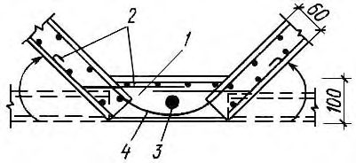
1 - линия стыка; 2 - предварительно напряженная арматура элемента; 3 - предварительно напряженные вставки; 4 - анкерные колодки
Рисунок 8.7 Конструкция предварительно напряженного стыка элементов балочных складок
- трапециевидные складки с горизонтально направленными полками в сжатой зоне меньше склонны к потере устойчивости наклонных стенок и имеют существенно больший момент инерции, чем треугольные той же высоты;
- трапециевидные складки с полками только в растянутой зоне удобнее для их опирания и требуют меньше поперечной арматуры на монтажные усилия; их недостаток необходимость замоноличивания стыка между складками по низу лотка, отводящего с покрытия воду;
- замоноличенный стык треугольных складок рекомендуется делать только по верхней кромке;
- целесообразно выполнять трапециевидные складки с полками в сжатой и растянутой зонах с замоноличиванием стыка в сжатой зоне.
При выборе наклона и ширины полок рекомендуется учитывать, что оптимальными являются сечения, обеспечивающие наибольшую жесткость складки для заданной площади сечения.
При совместном действии полезной равномерно распределенной нагрузки и собственного веса оптимальное поперечное сечение должно иметь форму, занимающую промежуточное положение между очертаниями складок, приведенными на рисунке 8.8, соответствующими оптимальным поперечным сечениям только для нагрузки, равномерной по площади покрытия (очертание 1), и для нагрузки собственного веса складки (очертание 2).
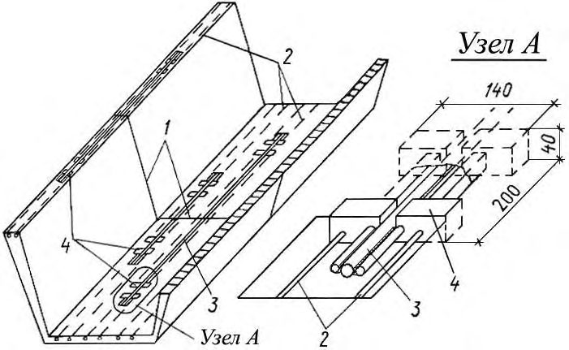
а - треугольные сечения; б - трапециевидные сечения; 1 - для нагрузки постоянной интенсивности по ширине складки; 2 - для нагрузки собственного веса складки
Рисунок 8.8 Оптимальные соотношения размеров сечений складок по жесткости
9Цилиндрические и складчатые оболочки Основные положения
- тонкой плиты, очерченной по цилиндрической поверхности (собственно оболочки);
- бортовых элементов, окаймляющих оболочку вдоль крайних образующих;
- поперечных диафрагм по криволинейным краям, опирающихся на колонны или стены.
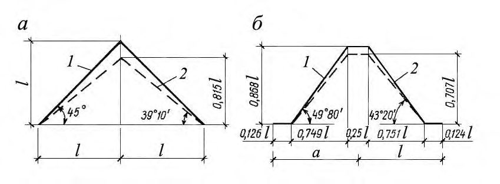
1 - плита оболочки; 2 - диафрагма; 3 - бортовой элемент
Рисунок 9.1 Цилиндрические оболочки
Покрытие с тонкой плитой, очерченной по призматической поверхности, вписанной в цилиндрическую, называется складчатым (рисунок 9.2). Оболочки и складки изготавливают гладкими и ребристыми.
Рисунок 9.2 Складчатые оболочки с различными типами бортовых элементов
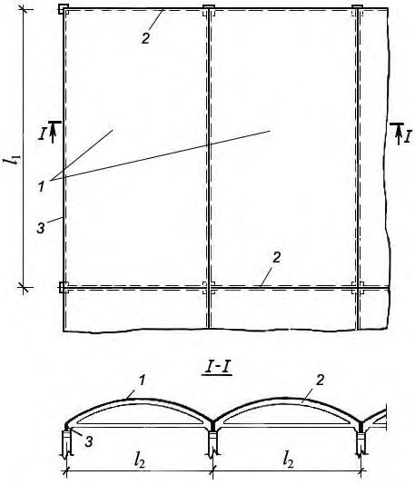
При определении усилий и расчете оболочек по предельным состояниям следует учитывать рекомендации СП 63.13330 и 4.2.
Диафрагмы проектируют с пролетами, равными длине волны (рисунок 9.1) или не совпадающими с длиной волны (рисунок 9.3).
Рисунок 9.3 Схема оболочки с пролетами диафрагм, не совпадающими с длиной волны
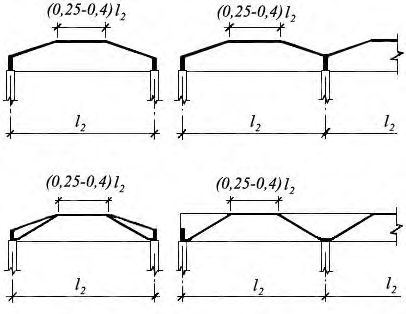
Расчет длинных цилиндрических и складчатых оболочек
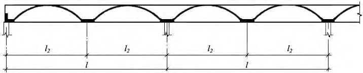
а - полная схема усилий; б - усилия, учитываемые при расчете
Рисунок 9.4 Усилия, действующие в длинных цилиндрических и складчатых оболочках
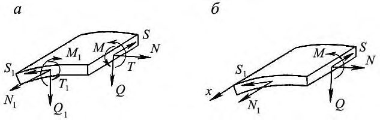
а - схема нагрузки и расчетная схема крайней волны; б - расчетная схема средней волны
Рисунок 9.5 Схемы для упрощенного расчета многоволновых оболочек и складок
Расчет по образованию трещин в нормальных сечениях и вдоль образующих следует производить с учетом неупругих деформаций бетона в растянутой зоне.
Усилия для расчета длинных цилиндрических и складчатых оболочек по образованию и раскрытию трещин, по жесткости и прочности следует определять по 9.4 с учетом деформаций поперечного контура как для упругой системы.
Рисунок 9.6 Схема трещин в длинной цилиндрической оболочке
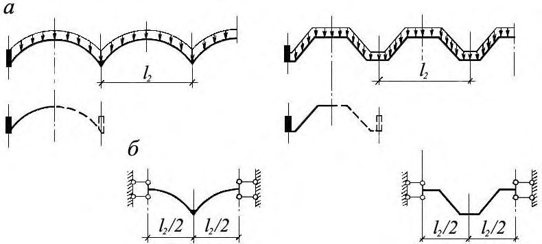
Расчет оболочки по прочности следует производить с учетом перераспределения усилий между их продольными сечениями. Образование трех продольных пластических шарниров приводит к значительному увеличению деформаций и раскрытию трещин.
- определяют требуемое сечение продольной арматуры бортовых элементов по формуле
где М - изгибающий момент от внешних нагрузок в расчетном поперечном сечении оболочки;
- h 0 - рабочая высота сечения оболочки, равная полной высоте за вычетом расстояния от нижней грани бортового элемента до равнодействующей усилий в растянутой арматуре;
- производят расчет оболочки в упругой постановке с учетом арматуры бортовых элементов;
- по полученным из расчета моментам с учетом 9.10 подбирают поперечную арматуру плиты;
- на основе расчета на предыдущем этапе по СП 63.13330 находят положение равнодействующей усилий в сжатой зоне сечения, расстояния от нее до центра тяжести растянутого бетона zb и арматуры zs и значение момента внешних сил Мcrc , соответствующего появлению трещин;
- производят расчет оболочки с учетом трещин и по СП 63.13330 определяют перемещения оболочки и ширину раскрытия трещин в бортовых элементах;
- с учетом 9.14 и 9.15 производят расчет угловых зон и диафрагм оболочек.
Ширину раскрытия нормальных трещин находят по СП 63.13330.
Расчет оболочки по прочности следует производить с учетом перераспределения усилий между их поперечными сечениями.
Во избежание хрупкого разрушения оболочек в углах от скалывания значение скалывающих напряжений должно быть не более 2,5 Rbt . На участках, где напряжения скалывания больше указанного значения, необходимо выполнять местное утолщение плиты. При этом производить перерасчет конструкции в целом не требуется.
Значение сдвигающих сил определяют из расчета оболочек и складок как упругих систем.
При расчете диафрагм следует учитывать эксцентричное приложение сдвигающих сил по отношению к оси элементов конструкции.
Конструирование длинных цилиндрических и складчатых оболочек
Продольные края оболочки в пролете могут быть свободными или опираться на колонны или стены.
Рисунок 9.7 Стадии напряженного состояния поперечных сечений оболочки (складки)
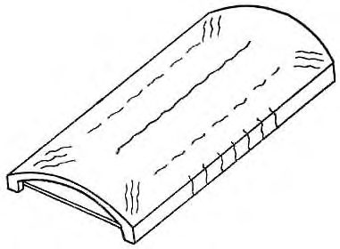
Рисунок 9.8 Схема передачи усилий с оболочки на диафрагму
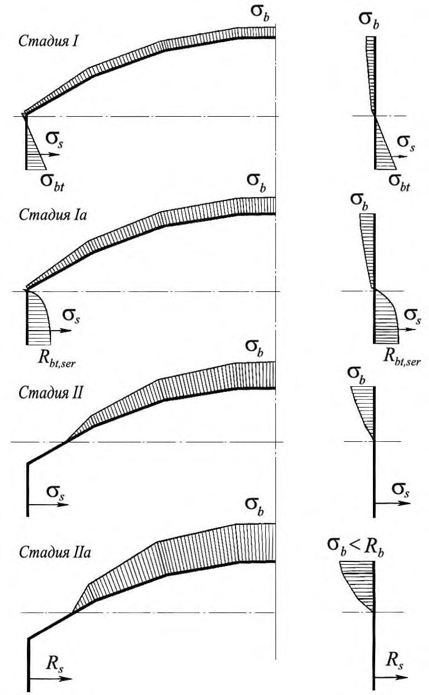
Поперечное сечение оболочек может быть очерчено по дуге круга, эллипса или по другой кривой. Рекомендуется принимать круговое очертание - как наиболее простое в производстве работ.
Схемы сечений оболочек приведены на рисунке 9.1-9.3.
Ребристые монолитные оболочки (рисунок 9.9) рекомендуется применять в тех случаях, когда вследствие наличия сосредоточенных нагрузок, особенностей очертания оболочки, условий ее опирания, больших пролетов или других причин для гладкой оболочки требуется большая толщина и устройство массивных бортовых элементов.
Рисунок 9.9 Ребристая оболочка
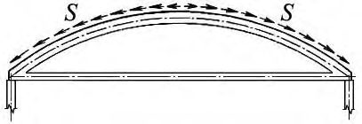
Ребра в монолитной оболочке предусматривают из условия обеспечения ее устойчивости.
Бортовые элементы для оболочек со свободно висящими краями рекомендуется принимать в виде балок, расположенных ниже края оболочки (рисунок 9.10, а ). Для сборных конструкций балки в целях снижения их веса могут быть двутаврового сечения.
Рисунок 9.10 Бортовые элементы
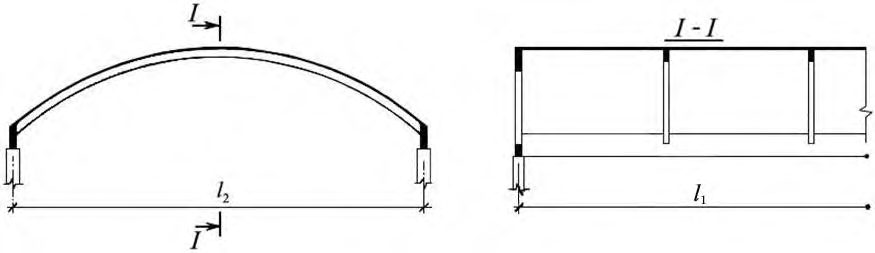
При необходимости бортовые элементы могут располагаться выше края оболочки (рисунок 9.10, б ). Они выполняются прямоугольного сечения (могут быть с приливами) или L -образного сечения (рисунок 9.10, в ). Если края оболочки подперты, то бортовой элемент целесообразно проектировать в виде горизонтальной плиты (рисунок 9.10, г ).
Размеры сечений бортовых элементов определяют по расчету и с учетом конструктивных требований. Рекомендуемые размеры сечений этих элементов в долях от полной высоты сечения оболочки приведены на рисунке 9.10. Высоту сечения бортовых элементов в долях пролета l 1 рекомендуется принимать равной 1/20-1/30.
Промежуточные бортовые элементы, соединяющие отдельные волны многоволновых оболочек, проектируют аналогично крайним бортовым элементам по одному из типов, изображенных на рисунке 9.10.
При небольшом пролете волны оболочки и небольшой стреле подъема f диафрагмы проектируют в виде балок переменной высоты. Для облегчения диафрагмы и пропуска коммуникаций в стенке балок устраивают отверстия.
Рисунок 9.11 Диафрагмы цилиндрических оболочек
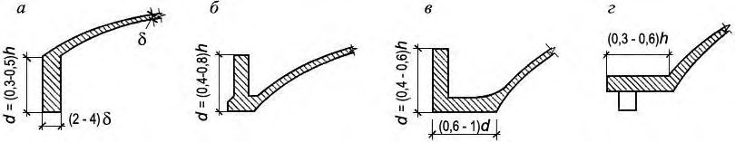
Допускается проектировать диафрагмы других видов, в том числе в виде:
- криволинейного бруса (при опирании на стену);
- рам с криволинейным ригелем, если распор воспринимается каркасом пристроек;
- ферм (при значительных пролетах волны оболочки).
Диафрагмы, как правило, проектируют вертикальными, а при необходимости наклонными и криволинейными.
1 - рамка окаймления фонарного отверстия; 2 - распорка
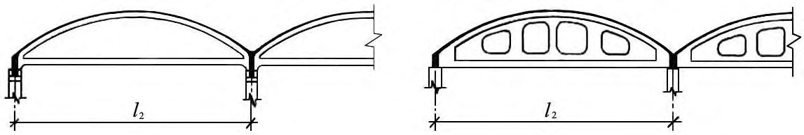
Рисунок 9.12 Схема оболочки с фонарным проемом
Во избежание местной потери устойчивости оболочки между поперечными ребрами расстояние между ними рекомендуется назначать не больше, чем δ 7 R , где R - радиус кривизны оболочки.
При наличии скалывающих напряжений на опорах более 0,8 Rbt рекомендуется, не утолщая всей оболочки или складки, предусматривать местные утолщения у опор, которые при определении усилий не учитываются.
Не менее 50 % растянутой арматуры над опорой следует продлевать на длину 1,2 b 0 в каждую сторону от диафрагмы ( b 0 - расстояние от опоры до сечения с нулевыми моментами).
Сечение арматуры, необходимое для обеспечения прочности оболочки при действии поперечных изгибающих моментов, следует определять как для плит. По длине волны арматура, воспринимающая поперечные моменты, устанавливается соответственно эпюре моментов в растянутой зоне. В местах примыкания плиты к бортовым элементам (а также к диафрагмам) следует устанавливать двойные сетки из арматуры диаметром 5-8 мм с шагом стержней не более 20 см.
В ребристых оболочках ребра, воспринимающие поперечные моменты, армируют, как правило, двойной арматурой с поперечными стержнями, а плита армируется конструктивно - одиночной сеткой.
где х и ху - соответственно нормальные и сдвигающие напряжения, действующие в рассматриваемой точке.
В местах, где арматурной сетки недостаточно для восприятия главных растягивающих усилий, следует устанавливать дополнительные арматурные стержни под углом 45° к образующей или усиливать арматурную сетку дополнительными стержнями.
Сечение арматуры на единицу длины должно удовлетворять условию
где f y , f x , f inc - сечения продольной, поперечной и косой арматуры соответственно на единицу длины плиты;
Rs,inc - расчетное сопротивление косой арматуры плиты.
Принятые сечения продольной и поперечной арматуры не должны различаться более чем на 20 %.
Стержни наклонной (установленной под углом 45° к образующей) и поперечной арматуры, воспринимающие главные растягивающие усилия, должны быть заанкерены в бортовом элементе. Выше нейтральной оси стержни наклонной и поперечной арматуры должны быть заведены не менее чем на 20 диаметров за сечение, где главные растягивающие напряжения могут быть восприняты основной сеткой.
а - из бортовых балок, криволинейных ребристых панелей и затяжек диафрагм; б - из криволинейных ребристых панелей с бортовым элементом и затяжек диафрагм
Рисунок 9.13 Схемы членения сборных длинных цилиндрических и складчатых оболочек
Складчатые оболочки собирают из бортовых балок длиной на пролет, арок-диафрагм длиной на пролет волны и плоских гладких или ребристых плит (рисунок 9.14). Верхним поясом диафрагм в оболочках служит усиленное ребро крайних панелей. Панели принимают размерами 3 6 или 3 12 м.
Рисунок 9.14 Складчатые оболочки из бортовых балок, арок-диафрагм и плоских ребристых или гладких плит
При членении оболочки по схеме рисунка 9.13, б перед установкой на леса сборные элементы объединяют попарно в направлении волны оболочки, сваривая закладные детали криволинейных ребер и устанавливая временные затяжки между бортовыми элементами.
Рисунок 9.15 Стыки элементов сборных длинных цилиндрических оболочек и складок
В оболочках типа, приведенного на рисунке 9.13, б , стыки между панелями обжимаются при натяжении арматуры бортовых балок, поэтому арматуру смежных элементов допускается не стыковать.
Расчет коротких монолитных оболочек
Для коротких оболочек с пролетами l 1 12 м и l 2 30 м (рисунок 9.16) растягивающее усилие Nb в одном бортовом элементе отдельно стоящей оболочки допускается определять по формуле
где q - приведенная расчетная нагрузка на 1 м² горизонтальной проекции с учетом веса бортовых элементов; d 1 - высота бортового элемента.
Рисунок 9.16 К расчету бортового элемента короткой цилиндрической оболочки
В средних пролетах короткой многопролетной монолитной одноволновой оболочки значение растягивающего усилия Nb в пролете бортового элемента принимают равным половине значения, вычисленного по формуле (9.6).
В многоволновых оболочках значение усилия Nb в бортовом элементе увеличивают пропорционально увеличению нагрузки, приходящейся на этот элемент от обеих примыкающих к нему волн.
Расчет собственно диафрагм допускается производить на действие только сжимающих усилий, приходящихся на оболочку - без учета изгибающих моментов и поперечных сил в сечении оболочки.
Значение полного нормального сжимающего усилия Nx в сечениях оболочки определяют:
- для крайней диафрагмы, к которой примыкает лишь один полупролет оболочки - по формуле
- для средней диафрагмы, к которой примыкают два полупролета оболочки - по формуле
где R - радиус кривизны оболочки в середине пролета l 2;
- х - горизонтальное расстояние продольного сечения оболочки от одной из опор (рисунок 9.17).
- а - расчетный фрагмент плана оболочки; б - арочная диафрагма; в - балочная диафрагма
Рисунок 9.17 К расчету диафрагмы короткой оболочки
Усилия в диафрагмах определяют:
- в арочных диафрагмах - по формулам:
- в балочных диафрагмах - по формулам:
где Мx 0 , Qx 0 , Nx 0 - соответственно изгибающий момент, поперечная и продольная силы по оси диафрагмы, определяемые от полной вертикальной нагрузки ( Nx вводится в эти формулы со знаком плюс);
- ех - расстояние от оси диафрагмы до срединной поверхности оболочки, измеряемое вдоль сечения (рисунок 9.17). Если оболочка расположена выше оси диафрагмы, значение ех считается положительным, если ниже - отрицательным;
- угол между нормалью к поперечному сечению диафрагмы и касательной к срединной поверхности оболочки в этом сечении (рисунок 9.17, в ).
Учет неразрезности, влияния затяжек арочных диафрагм или других факторов производят методами, применяемыми для расчета статически неопределимых плоских систем. При определении перемещений и усилий в диафрагмах совместность работы диафрагмы с оболочкой допускается не учитывать. Расчет производят на восприятие усилий сечениями только самих диафрагм - без учета участков оболочек, примыкающих к диафрагмам.
Усилие Nb , передаваемое на арматуру бортового элемента оболочки с проемами, определяют по формуле
где b - ширина проема.
Если ширина остающихся боковых частей оболочки менее 1/3 l 2 или менее l 1, оболочку следует рассчитывать как длинную оболочку с учетом деформаций контура.
Конструирование коротких монолитных оболочек
В случаях, когда расчет оболочки произведен по 9.37, плиту следует армировать конструктивно прямоугольной сеткой из стержней диаметром 4-6 мм с шагом 100-160 мм.
- диафрагмы на расстояние 0,1 l 1, а от бортового элемента - на расстояние 1,25-1,5 м.
Для обеспечения жесткости бортовых элементов без предварительного напряжения высоту их сечения следует принимать не менее 1/15 l 1, ширину - от 1/5 до 1/2 высоты.
В пролетах большая часть арматуры бортовых элементов устанавливается внизу, а на опорах - вверху бортового элемента.
- высота подфонарных балок должна быть не менее 1/12 l 1;
- толщина плиты должна быть увеличена по отношению к толщине сплошной оболочки;
- подъем плиты каждой боковой части должен быть не менее 1/20 ее пролета (наклонной хорды);
- длина дуг ее боковых частей должна быть не менее l 2 / 3 и не менее l 1 .
Расчет коротких призматических складок
Складки допускается проектировать без бортовых элементов. В этом случае функции бортовых элементов выполняют продольные ребра плит, устанавливаемые вдоль краев покрытия (рисунок 9.18, в ). а - конструкция складчатого покрытия; б - складка с бортовыми элементами; в - то же, без бортовых элементов; 1 - диафрагма; 2 - ребристая плита; 3 - бортовой элемент; 4 - стальной фонарь; 5 - подвеска; 6 -продольное ребро плиты, выполняющее функции бортового элемента; 7 - крайние грани складки
Рисунок 9.18 Короткая призматическая складка
До замоноличивания швов сборные элементы складок рассчитывают как разрезные конструкции на воздействие нагрузок, возникающих в стадиях изготовления, транспортирования и возведения.
После замоноличивания швов (в стадии эксплуатации) складку рассчитывают на воздействие постоянных и временных нагрузок - как пространственную конструкцию по схемам разрушения, охватывающим одну или две крайние грани складки. Средняя часть складки, расположенная между четырьмя крайними гранями (по две с каждой стороны), в эксплуатационной стадии рассчитывают только на «местное» разрушение полки, поперечных ребер, а также продольных ребер плит, не закрепленных швами замоноличивания от кручения.
При изготовлении сборные элементы складок рассчитывают на воздействие усилий предварительного напряжения, вводимых в расчет в качестве внешней внецентренно приложенной силы.
При подъеме, транспортировании и монтаже сборные элементы складок рассчитывают как разрезные конструкции на воздействие собственного веса с учетом коэффициента динамичности в соответствии с 4.2.18.
В стадии возведения сборные элементы складок рассчитывают как разрезные конструкции на воздействие собственного веса и снеговой нагрузки, учитываемой в соответствии с СП 20.13330.
В стадиях изготовления, транспортирования и возведения производят подбор предварительно напряженной арматуры бортового элемента и плиты, а также обычной арматуры - верхнего стержня каркаса продольных ребер; кроме того, проверяют прочность и трещиностойкость концевых участков ребер при отпуске напряжения.
При проектировании верхнего пояса ферм-диафрагм в неразрезных покрытиях (9.58) арматуру пояса подбирают по усилиям, действующим в стадии возведения.
При расчете сборных элементов в стадии возведения коэффициент перехода от веса снегового покрова земли к снеговой нагрузке на покрытие принимают равным = 1, предельный прогиб при этом должен быть не более значений, указанных в СП 20.13330.
Расчет прочности складок покрытий рекомендуется производить кинематическим способом метода предельного равновесия - по схемам разрушения, приведенным на рисунках 9.19 и 9.20.
Рисунок 9.19 Схемы разрушения полки и поперечных ребер плит от изгиба и
продольных ребер от кручения
Жесткость и ширину раскрытия трещин в полке плиты и в поперечных ребрах определяют согласно СП 63.13330. Требуемая жесткость продольных ребер плит складчатого покрытия, как правило, обеспечивается при условии h / l 1 > 1/33, где h - высота ребра; l 1 - длина пролета.
Расчет призматических складок покрытий по прочности следует производить в следующей последовательности: сначала по местным схемам разрушения рассчитывают полку, поперечные и продольные ребра плит (от кручения), затем - складки покрытия и диафрагмы. а - схемы разрушения первой грани складки и бортового элемента; б - диаграмма скоростей виртуальных перемещений; в - схема разрушений двух граней складки с изломом бортового элемента; г - то же, без излома бортового элемента; д - поперечное сечение складки у края; 1 -4 - диски в схемах разрушения; 5 -первые грани складки; 6 - первая и вторая крайние грани складки; 7 - средняя часть складки
Рисунок 9.20 Схемы разрушения складчатого покрытия
Расчет полки и поперечных ребер плиты
Изгибающие моменты в полке на единицу длины линии излома и в поперечных ребрах определяют по «конвертным» схемам разрушения в зависимости от значения параметра
При k 1/ разрушение полки происходит по схеме, приведенной на рисунке 9.19, а , и предельное значение изгибающих моментов, воспринимаемых сечением, определяют по формулам:
Mb =
Ma
; (9.14)
В формулах (9.12)-(9.20):
- q - равномерно распределенная нагрузка на единицу площади полки с учетом ее веса; = a / b - отношение сторон полки;
Ма , Мb - изгибающие моменты на единицу длины линии излома, действующие в сечениях полки соответственно в поперечном и продольном направлениях; qR - нагрузка на единицу длины поперечного ребра, расположенная на ребре и рассчитываемая с учетом его веса;
МR - изгибающий момент, приходящийся на сечение поперечного ребра без полок (рисунок 9.19, сечение I-I);
Rsf, RsR - расчетные сопротивления на растяжение арматуры соответственно полки и поперечных ребер; hf, h 0 - соответственно толщина полки и рабочая высота ребра;
- -коэффициент, учитывающий благоприятное влияние распора для плит, окаймленных со всех сторон ребрами, принимаемый равным:
- 0,8 - для средних полей средних плит;
- 0,8 при b / a 1 < 1,5; 0,9 при 1,5 < b / a 1 < 2; 1 при b / a 1 > 2 - для крайних полей средних плит и полей крайних плит.
Изгибающий момент М 24, действующий на все поперечные ребра плиты в пролете, определяют по формуле
где q - нагрузка на единицу площади полки с учетом веса поперечных ребер;
- b - расстояние в свету между продольными ребрами;
- a 1 - расстояние в свету между торцевым и поперечным ребрами (рисунок 9.19, в, г );
- М 02 - изгибающий момент, воспринимаемый всеми поперечными ребрами плиты в местах их примыкания к продольным, рассчитывается исходя из установленной в полке арматуры, подобранной по схемам разрушения, приведенным на рисунке 9.19, а, б, в или г ;
- с - расстояние между внутренними гранями торцевых ребер.
Подбор арматуры производят по большему значению изгибающего момента в пролете, приходящего на одно поперечное ребро и вычисленного по формулам (9.15) или (9.19) и (9.21).
При k 1 / разрушение полки происходит по схеме, приведенной на рисунке 9.19, б . В этом случае принимают k 1 = 1/ k и предельное значение изгибающих моментов определяют по формулам:
на рисунках 9.19, в, г
При расчете жесткости и ширины раскрытия трещин принимают:
- полное защемление полки в поперечных и продольных ребрах и шарнирное опирание поперечных ребер - если расчет ведется по схемам разрушения, приведенным на рисунке 9.19, а , б ;
- полное защемление поперечных ребер в продольных - при расчете по схеме разрушения, приведенной на рисунке 9.19, в ;
- защемление с одной стороны поперечного ребра и шарнирное опирание с другой при расчете по схеме разрушения, приведенной на рисунке 9.19, г .
При определении прогибов поперечных ребер следует принимать тавровое сечение ребра (рисунок 9.10, сечение II-II).
Расчет продольных ребер на кручение
Крутящие моменты М 45, действующие в наклонных сечениях концевых участков продольных ребер под углом 45° к их нижней плоскости, воспринимаются сетками, устанавливаемыми на концевых участках продольных ребер, и их значения определяют по формуле
Во всех случаях учитывают, что угловая арматура не воспринимает усилий растяжения, а изгибающий момент М 05 принимают равным нулю.
Если в результате расчетов по формуле (9.24) значение М 45 0, то концевые участки продольных ребер на кручение не армируют.
Схемы разрушения складок
Предельные значения изгибающих моментов в сечениях определяют на основе кинематического способа теории предельного равновесия.
При изломе двух граней складки работа внутренних сил определяется из пространственной схемы перемещений жестких звеньев - в том числе и перемещения в плоскости одной из граней, излом которой происходит как балки на двух опорах от достижения в наклонных сечениях предельных изгибающих моментов Мult (рисунок 9.20, в, г ).
В неразрезной складке покрытий бесфонарных зданий опорные арматурные каркасы, устанавливаемые в швы между бортовыми элементами и плитами, а также между плитами первой и второй граней над диафрагмами, устанавливают по расчету. В остальных швах между плитами над диафрагмами каркасы устанавливают конструктивно. В покрытиях зданий с фонарями, а также в покрытиях по фонарям все арматурные каркасы устанавливают по расчету.
Если суммарное значение опорных моментов над диафрагмой, определенных из расчета по схемам разрушения, приведенным на рисунках 9.20, а, г , больше изгибающего момента, определенного из расчета по схеме разрушения, приведенной на рисунке 9.20, в , то подбор сечения рабочих стержней арматурных каркасов, устанавливаемых в швах между бортовым элементом и плитой, а также между плитами первой и второй граней складки над диафрагмами, производят по опорным моментам, определенным из расчета по схемам разрушения, приведенным на рисунках 9.20, а, г .
Если суммарное значение этих же опорных моментов над диафрагмой меньше изгибающего момента, определенного из расчета по схеме разрушения, приведенной на рисунке 9.20, в , то этот опорный момент следует распределить между швами таким образом, чтобы на каждый шов приходилось значение момента не меньше, чем вычисленное по схемам разрушения, приведенным на рисунках 9.20, а, г .
Расчет на сдвигающие усилия
- бетонными шпонками верхнего пояса диафрагм - в неразрезных складчатых покрытиях;
- стальными упорами, приваренными к закладным деталям опорных узлов диафрагм в разрезных складчатых покрытиях;
- бетоном омоноличивания в узле опирания плит и стойки рамы фонаря на диафрагму - в покрытиях с фонарями.
Проверку наклонных сечений первой грани складки на действие сдвигающих усилий производят как для балок на действие поперечной силы.
Сварные швы в местах приварки продольных ребер плиты следует рассчитать, на действие сдвигающих усилий S 1 или S 2 - с учетом того, что у краев покрытия и у температурных швов, где ось первой диафрагмы смещена, сдвигающее усилие S 1 или S 2 передается на одно продольное ребро.
Для снижения сдвигающих усилий рекомендуется предусматривать связи между плитами первой и второй граней складки по верху торцевых ребер, что обеспечивает передачу части S 1 на плиту второй грани покрытия.
Расчет диафрагм
Статический расчет диафрагм производят с учетом жесткости узлов как многократно статически неопределимой системы. Расчет диафрагм допускается производить как шарнирно-стержневой системы с учетом изгибающих моментов, возникающих от нарушения центрации узлов.
Конструирование коротких призматических складок
Совместную работу элементов складок рекомендуется обеспечивать:
- устройством бетонных шипов на верхнем поясе диафрагм, пазов на наружных гранях продольных и торцевых ребер плит и бортовых элементов, установкой арматурных каркасов в швах замоноличивания - для неразрезных складок;
- устройствам пазов на наружных гранях - для разрезных складок.
К элементам складки допускается подвеска двух- или трехопорных кран-балок грузоподъемностью до 6 т или подвесного тельфера грузоподъемностью до 5 т.
Очертание верхнего пояса диафрагм должно соответствовать поверхности складки. В неразрезных складках после замоноличивания образуется комплексное сечение верхнего пояса, что позволяет облегчать диафрагму (рисунок 9.21).
1 - бетонные шипы на верхнем поясе диафрагмы; 2 - торцевые ребра плит; 3 - пазы на торцевых ребрах плит; 4 - стержень, армирующий комплексное сечение; 5 - пазы на продольных ребрах плит; 6 - каркас в продольном шве между плитами над диафрагмами; 7 - продольные ребра плит; 8 - верхний пояс диафрагмы
Рисунок 9.21 Узел сопряжения плит с диафрагмой при комплексном сечении верхнего пояса
Допускается применение типовых ферм, очертание которых не соответствует поверхности складки. В этом случае комплексное сечение не образуется, а ребра плит складки опираются на бетонные столбики, устраиваемые в узлах ферм.
Диафрагмы рекомендуется проектировать из тяжелого бетона (классов В30-В50 и выше).
- 50 мм - для продольных швов;
- 200 мм - для поперечных швов над диафрагмами.
Омоноличивать швы рекомендуется бетоном класса по прочности на сжатие не менее В15, а в зимнее время - не менее В25.
Конструирование элементов складки
Продольные ребра плит рекомендуется выполнять предварительно напряженными. Высоту продольных ребер рекомендуется принимать в пределах (1/30-1/35) l 1 .
Шаг поперечных ребер рекомендуется принимать равным 1-2 м. Высоту поперечных ребер рекомендуется назначать в пределах 1/15-1/20 расчетного пролета, равного расстоянию между внутренними гранями продольных ребер.
На наружных гранях продольных ребер предусматривают пазы, обеспечивающие восприятие сдвигающих усилий между плитами. Пазы располагают на длине (1/3 - 1/4) l 1 (рисунок 9.22).
1 - торцевое ребро; 2 -то же, поперечное; 3 -то же, продольное; 4 - полка плиты; 5 - арматурная сетка полки; 6 - пазы на продольных ребрах плиты и бортового элемента; 7 - крайний бортовой элемент
Рисунок 9.22 Плиты и бортовые элементы
При комплексном сечении верхнего пояса диафрагм пазы рекомендуется устраивать также на торцевых ребрах. В этом случае для омоноличивания без устройства опалубки торцевые ребра устраиваются увеличенной высоты (рисунок 9.21).
Бортовые элементы рекомендуется принимать двух типоразмеров: крайние, устанавливаемые вдоль краев оболочек, и средние, устанавливаемые по всем промежуточным рядам колонн многоволновых складок и соединяющие между собой отдельные волны.
В фермах-диафрагмах неразрезных складчатых покрытий предусматривают бетонные шипы на верхнем поясе, обеспечивающие совместную работу диафрагмы с плитами после омоноличивания стыка бетоном.
Диафрагмы разрезных складчатых покрытий проектируют без шипов по верхнему поясу. Совместность работы складки с диафрагмой достигается за счет сварных соединений плит и ферм, рассчитываемых на восприятие сдвигающих усилий.
Диафрагмы пролетом 18-24 м проектируют, как правило, цельными.
Для пролетов 30-36 м рекомендуется устройство составных сталежелезобетонных диафрагм, монтируемых из отдельных блоков с помощью переставных подмостей. Блоки стыкуют сваркой закладных деталей, а затяжки выполняют из прокатного металла.
При стальной затяжке рекомендуется устраивать строительный выгиб узлов нижнего пояса, равный (1/200-1/250) l 2.
Конструирование узлов складчатых покрытий
Проемы для продольных или поперечных зенитных фонарей рекомендуется устраивать с помощью плит-рамок или плит с отверстиями.
Продольные ребра плит, примыкающие к фонарному проему, рекомендуется крепить посредине пролета к стальной фонарной панели (рисунок 9.23, в ). Фонарная панель при этом должна быть рассчитана на дополнительную нагрузку от покрытия.
а - сопряжение диафрагмы с бортовым элементом и плитой неразрезного складчатого покрытия; б -то же с плитой разрезного складчатого покрытия; в - крепление плиты к фонарной панели; 1 - диафрагма; 2 - плита складки; 3 - бортовой элемент; 4 - арматурный каркас в шве замоноличивания; 5 - стальной упор; 6 -фонарная панель; 7 - соединительная планка-подвеска
Рисунок 9.23 Узлы складчатого покрытия
10Купола
Основные положения
Элементами куполов служат, как правило, осесимметричная оболочка вращения и растянутое опорное кольцо. При наличии фонарного проема в вершине купола устраивается сжатое фонарное кольцо. Возможно устройство проемов и отверстий на боковых участках купола.
Срединную поверхность оболочки рекомендуется принимать в виде поверхности вращения: конуса, сферы, параболоида, эллипсоида и др. (рисунок 10.1). Кроме того, оболочка может быть образована волнистыми и складчатыми элементами или выполняться сетчатой и многогранной. а - геометрия; б - схема усилий; 1 - ось вращения; 2 -параллель; 3 - меридиан; 4 - краевой параллельный круг
Рисунок 10.1 Оболочка вращения
Опорное кольцо может лежать на сплошном образованном стенами основании или на отдельных колоннах.
При проектировании куполов следует учитывать требования разделов 4, 5 и 6 настоящего СП по расчету и конструированию.
Расчет куполов
- плавных изменениях толщины стенок купола и радиуса кривизны меридиана и равномерных симметричных нагрузках, действующих на оболочку;
- свободных радиальных и угловых перемещениях краев оболочки в направлении меридиональных усилий по касательной к меридиану.
В остальных случаях напряженно-деформированное состояние купола следует определять с учетом действия изгибающих моментов.
Определение усилий по безмоментной теории
Усилие на единицу длины меридиана N 1 определяют из условия равновесия сегмента, отсеченного от купола конической поверхностью с углом раствора по формуле
где V - вертикальная равнодействующая внешней нагрузки на часть оболочки выше рассматриваемого сечения;
R 2 - радиус кривизны нормального сечения, перпендикулярного к меридиану в данной точке (длина нормали поверхности до оси вращения).
Распор купола Н определяют как горизонтальную проекцию N 1 по формуле
где 0 - ½ центрального угла дуги оболочки в меридиональном направлении.
Растягивающее усилие N 0 в кольце определяют по формуле
Усилие N 0 должно быть воспринято кольцевой арматурой.
Кольцевое усилие Nsk в фонарном кольце определяют по формуле
где р - нагрузка на 1 м фонарного кольца.
Индексы «0» и « sk » в формулах 10.2-10.4 указывают на то, что все переменные величины, входящие в эти формулы, относятся соответственно к широте опорного и фонарного колец оболочки.
Значение кольцевого усилия N 2 определяют по формуле
где z - нормальная к поверхности купола в рассматриваемом сечении составляющая внешней нагрузки на единицу площади поверхности.
Для сферической оболочки при R 1 = R 2 = R
здесь рz - вертикальная составляющая внешней нагрузки.
Формулы для определения усилий в элементах сферического купола по безмоментной теории приведены в таблице 10.1.
Для конической оболочки в формулах (10.6) и (10.7) R 1 = ; = = соnst , где - угол наклона образующей к плоскости основания конуса.
где q - нагрузка на единицу площади горизонтальной проекции;
- половина центрального угла в меридиональном направлении;
- центральный угол в кольцевом направлении.
Нормальные усилия N 1, N 2 и сдвигающие усилия S определяют по формулам:
| Усилия, кН | Схема нагружения | Схема нагружения | Схема нагружения |
|---|---|---|---|
| Усилия, кН | Нагрузка собственного веса купола и веса кровли g, кПа (толщина оболочки постоянная) | Равномерно распределенная нагрузка на горизонтальной проекции р, кПа | Вертикальная распределенная линейная нагрузка на фонарном кольце P k , кН/м |
| N 1 | ) cos (cos 2 - - sk sin g R | ) pR( sk - - 2 2 sin sin 1 2 1 | - 2 sin sin sk k P |
| N 2 | - R g cos - N 1 | ) pR sk + - - 2 2 2 2sin sin 2 1 (cos | 2 sin sin sk k P |
| N k | ) cos (cos ctg 0 0 2 - sk gR | 2 sin sin 1 cos sin 0 2 2 0 0 2 / ) ( pR sk - | P k R sin sk ctg 0 |
| N sk | 0 | 0 | - P k R cos sk |
где а 11 - взаимный угол поворота от действия М 0 = 1 в направлении этого момента в сечении вблизи кольца; а 12 - то же, от действия Н 0 = 1 в направлении момента; а 21 - взаимное перемещение от действия М 0 = 1 в направлении Н 0; а 12 = а 21 в силу взаимности перемещений; а 22 - взаимное перемещение от Н 0 = 1 в направлении Н 0; а 10 - взаимный угол поворота в том же сечении, вызванный внешней нагрузкой; а 20 -взаимное перемещение, вызванное внешней нагрузкой, при совпадении с направлением Н 0 считается положительным.
Если углы а 12 и а 10 совпадают по направлению с углом поворота а 11, вызванным действием М 0 = 1, то их принимают со знаком «плюс», если не совпадают - со знаком «минус». Такое же правило знаков принимается и для линейных перемещений. Перемещения а 11 и а 22 всегда положительны.
Таблица 10.1
- при равномерно распределенной нагрузке р 0 на горизонтальную проекцию (по поверхности оболочки распределяется по закону косинуса p = p 0 cos ):
определяются по формулам:
Значения коэффициента А для гладких куполов
для ребристых куполов
где Iп момент инерции, приходящийся на единицу длины, с учетом меридиональных ребер;
п - приведенная толщина оболочки с учетом сечения кольцевых ребер.
Определение краевого эффекта по приближенной моментной теории
Рисунок 10.2 Расчетная схема узла сопряжения опорного кольца и оболочки купола
Перемещения края оболочки, вызванные радиальным распором Н 0, приведены на рисунке 10.3.
Коэффициенты уравнения метода сил a 11, a 12, a 22, т. е. перемещения краев любых непологих оболочек от действия М 0 = 1 и Н 0 = 1 (рисунок 10.4) определяют на основе моментной теории по следующим формулам:
где D - изгибная жесткость меридиональной полосы единичной ширины купола.
Рисунок 10.3 Перемещения края оболочки, вызванные радиальным распором Н 0
Рисунок 10.4 Момент и распор при взаимодействии оболочки и опорного кольца купола
В формулах (10.17)-(10.20) значение модуля упругости Е принимается сниженным в соответствии с 5.6.
Значения М 0 и Н 0 находят из решения уравнений (10.12) с учетом зависимостей (10.18)(10.20).
Интенсивности моментов М ( ) и кольцевых усилий N 2( ) в произвольной точке по длине меридиана оболочки в зависимости от краевых значений моментов М 0 и Н 0 определяют по формулам, полученным на основе теории балки на упругом основании:
здесь N 2 - кольцевое усилие в безмоментной оболочке; e - cos и е - sin - функции, значения которых приведены в таблице 10.2.
Значение определяют по формуле
Отсчет длины дуги S или значения следует производить от края, к которому приложены M 0 и H 0 .
Таблица 10.2
| | e - cos | e - sin | | e - cos | e - sin |
|---|---|---|---|---|---|
| 0 | 1 | 0 | 1,6 | -0,0059 | 0,2018 |
| 0,1 | 0,9004 | 0,0903 | 1,7 | -0,0236 | 0,1812 |
| 0,2 | 0,8024 | 0,1627 | 1,8 | -0,0376 | 0,161 |
| 0,3 | 0,7078 | 0,2189 | 1,9 | -0,0484 | 0,1415 |
| 0,4 | 0,6174 | 0,261 | 2 | -0,0564 | 0,1231 |
| 0,5 | 0,5323 | 0,2908 | 2,1 | -0,0618 | 0,1057 |
| 0,6 | 0,453 | 0,3099 | 2,2 | -0,0652 | 0,0896 |
| 0,7 | 0,3798 | 0,3199 | 2,3 | -0,0668 | 0,0748 |
| 0,8 | 0,313 | 0,3223 | 2,4 | -0,0669 | 0,0613 |
| 0,9 | 0,2528 | 0,3185 | 2,5 | -0,0658 | 0,0491 |
| 1 | 0,1988 | 0,3096 | 2,6 | -0,0636 | 0,0383 |
| 1,1 | 0,151 | 0,267 | 2,7 | -0,0608 | 0,0287 |
| 1,2 | 0,1092 | 0,2807 | 2,8 | -0,0573 | 0,0204 |
| 1,3 | 0,0729 | 0,2626 | 2,9 | -0,0535 | 0,0133 |
| 1,4 | 0,0419 | 0,2430 | 3 | -0,0493 | 0,00703 |
| 1,5 | 0,0158 | 0,2226 |
Расчет несущей способности куполов методом предельного равновесия
- осесимметричная нагрузка интенсивностью q равномерно распределена по горизонтальной проекции купола;
- форма купола - сферическая;
- отношение диаметра контура к стреле подъема не превышает 10;
- арматура состоит из меридиональных и кольцевых стержней, образующих верхнюю и нижнюю сетки;
- оболочка вращения опирается по всему периметру (если опорное кольцо опирается в отдельных точках, в нем должна быть уложена дополнительная арматура, необходимая для восприятия вертикальных составляющих усилий на контуре);
- исчерпание несущей способности купола происходит вследствие текучести арматуры.
где - безразмерный коэффициент, зависящий от пологости 2 r 0 /f и отношения nr 0 /m ; k - безразмерный коэффициент, зависящий от пологости 2 r 0 /f ; nc - предельное усилие в опорном кольце; m - момент (на единицу длины) предельных усилий в меридиональной арматуре относительно оси 0-0 (рисунок 10.6), проходящей через центр тяжести сжатой зоны бетона, определяемый по формуле
здесь As,mb - площадь сечения меридиональной арматуры нижней сетки на единицу длины кольцевого направления; h 0 - рабочая высота сечения; х - высота сжатой зоны бетона, определяемая последовательным приближением с соблюдением условия (10.27).
а - поперечное сечение; б - схема разрушения
Рисунок 10.5 К расчету купола методом предельного равновесия
Рисунок 10.6 Схема взаимодействия усилий в куполе в предельном состоянии
Предельное усилие на единицу длины в кольцевых стержнях поля оболочки n определяется по формуле
где As,c и A s,c - площадь сечения кольцевой арматуры соответственно нижней и верхней сеток на единицу длины радиального направления; qs , q s -погонные усилия, воспринимаемые кольцевой арматурой купола соответственно в растянутой и сжатой зонах рассматриваемого сечения купола.
Предельное усилие в опорном кольце nc определяется по формуле
где As , co - площадь сечения кольцевых стержней опорного кольца.
Значения коэффициентов и k принимают по графикам рисунка 10.7, при этом для значений 3,5 2 r 0 /f < 5 следует соблюдать условие r 0 / 400.
Рисунок 10.7 Графики для определения коэффициентов , k,
Формулу (10.23) применяют и при проверке прочности нормальных сечений опорного кольца купола.
где - относительная высота сжатой зоны бетона;
R - граничное значение относительной высоты сжатой зоны бетона, определяемое по указаниям СП 63.13330.
Требуемое для определения высоты сжатой зоны бетона х значение нормальной силы N (рисунок 10.6) находят по формуле где B = Rbh 0 +qs+q s ;
As,c 0 -площадь сечения всех кольцевых стержней опорного кольца;
R радиус кривизны срединной поверхности купола;
0 - угловая координата края купола;
Rb призменная прочность бетона; qs, q s - погонные усилия, воспринимаемые кольцевой арматурой купола соответственно в растянутой и сжатой зонах рассматриваемого сечения купола; h 0 - рабочая высота сечения стенки купола.
Из равенства моментов внешних и внутренних сил после интегрирования следует
где r - радиус пластического шарнира, определяемый по формуле = r/r 0; rs - радиус сферы;
- угол наклона силы N ;
- угол наклона касательной к меридиану на опоре.
Значения принимают по графикам на рисунке 10.7, при этом для 2 r 0 /f = 3,5 значения следует определять с учетом отношения nc /n.
Приближенный расчет несущей способности купола
Рисунок 10.8 К расчету купола по «балочной» схеме
Значение угловой координаты с , ограничивающей сжатую зону бетона, определяют по формуле
где ke = ec 0 /R ; где 0 / η r f = ; здесь f - стрела подъема оболочки; r 0 -радиус окружности ее основания.
Расстояние от оси оболочки до кольцевого пластического шарнира находят из условия равновесия по формуле
здесь As,c 0 - площадь сечения кольцевых стержней опорного кольца;
Rb -призменная прочность бетона; qs и s q - погонные усилия, воспринимаемые кольцевой арматурой купола, соответственно в растянутой и сжатой зонах рассматриваемого сечения купола (рисунок 10.8).
ec 0 -расстояние от центра тяжести рабочей арматуры кольца до центра окружности 0; М момент внешних сил относительно оси, проходящей через центр окружности 0 . Значение суммарной внешней нагрузки Р (рисунок 10.8) определяют по формуле
где k коэффициент, зависящий от вида опирания и характера внешней нагрузки (0 k 1); r 0 -радиус основания купола.
Формулы для определения k для характерных случаев опирания и различных видов нагружения приведены в таблице 10.3.
Таблица 10.3
| Вид нагрузки | Вид опирания | Вид опирания | Вид опирания | Вид опирания | Вид опирания |
|---|---|---|---|---|---|
| Вид нагрузки | на 3 точки | на 4 точки | на 5 точек | на 6 точек | по всему контуру |
| Равномерно распределенная по всей поверхности | 3 2 3 π - | 3 2 2 2 π - | 3 2 5 )π 2sin18 (1 - + | 3 2 3 π - | 3 1 |
| Кольцевая распределенная по радиусу х | 0 3 π r x - | 0 2 2 π r x - | 0 5 )π 2sin18 (1 r x - + | 0 3 π r x - | 0 1 r x - |
| Сосредоточенная в вершине оболочки | 3 π | 2 2 π | 5 )π 2sin18 (1 + | 3 π | 1 |
| Собственный вес оболочки | 8 3π 2 3 π + - | 4 π 2 2 2 π + - | 3π 2 5 )π 2sin18 (1 + - + | 8 3π 2 3 π + - | 1 8 3π - |
Расчет несущей способности купола с учетом деформированного состояния
Для удобства расчета срединную поверхность оболочки принимают в виде параболоида вращения, описываемого уравнением
В начальной стадии деформирования несущую способность оболочки определяют по формуле
где w * - относительный прогиб оболочки;
m - погонное значение предельного изгибающего момента в верхнем кольцевом пластическом шарнире
здесь As , mb - площадь сечения меридиональной арматуры нижней сетки на единицу длины кольцевого направления; x - высота сжатой зоны сечения, определяемая с соблюдением условия (10.27).
где
Конструирование
В зоне примыкания оболочки к кольцу толщину оболочки увеличивают и устанавливают дополнительную сетку со стержнями диаметром 6-8 мм меридионального направления (рисунок 10.9, а, б ). Число стержней рассчитывают по максимальному меридиональному изгибающему моменту.
В местах действия на купол сосредоточенных нагрузок, а также около отверстий и проемов предусматривают дополнительную конструктивную или расчетную арматуру с учетом 6.5.
Рисунок 10.9 Армирование монолитных и сборных железобетонных куполов и их элементов
При проектировании следует учитывать способ предварительного напряжения опорного кольца. Рекомендуется предусматривать механическое натяжение пучков, канатов или стержней (рисунок 10.10), располагаемых в прямолинейных или криволинейных пазах кольца и закрепляемых в одном или нескольких его выступах в зависимости от диаметра кольца. Для стержневой арматуры допускается натяжение арматуры с применением электрического нагрева. Полигонально-кольцевую арматуру допускается натягивать оттяжкой с помощью радиально установленных домкратов.
Рисунок 10.10 Предварительно напряженное опорное кольцо купола а - общий вид; б - план; в - трапециевидная плоская плита; 1 - монолитное нижнее опорное кольцо; 2 -монолитное верхнее опорное кольцо
Рисунок 10.11 Сборный купол из плоских ребристых плит
а - складчатый купол; б, в сопряженные купольные оболочки
Рисунок 10.12 Формы купольных оболочек
11Пологие оболочки положительной гауссовой кривизны на прямоугольном плане
Основные положения
- размеры стороны оболочки в плане; 2 - стрелы подъема оболочки на контуре (рисунок 11.1).
Рисунок 11.1 Схема оболочки положительной гауссовой кривизны
Выбор типа поверхности сборных оболочек следует производить с учетом схемы разрезки, возможностей унификации и технологичности изготовления сборных элементов, а также условий возведения оболочек.
Для сокращения типоразмеров сборных плит сборных оболочек в качестве срединной рекомендуется использовать часть тороидальной поверхности с положительной кривизной, а членение оболочек на плиты осуществлять системой радиальных секущих плоскостей, проходящих через ось вращения, и системой вертикальных плоскостей, перпендикулярных к этой оси (рисунок 11.2).
1 - элемент членения; 2 - вертикальные секущие плоскости; 3 - ось вращения радиальных секущих плоскостей; 4 - радиальные секущие плоскости
Рисунок 11.2 Схема членения исходной поверхности оболочки на сборные элементы
Контурные балки рекомендуется применять в отдельно стоящих оболочках при часто расположенных по периметру здания колоннах, а в многоволновых оболочках - по наружным рядам колонн.
В остальных случаях (по средним рядам и деформационным швам) рекомендуется устанавливать фермы или арки. Фермы - как более жесткие в вертикальной плоскости, обеспечивают более благоприятную в статическом отношении работу оболочек на смежных диафрагмах.
Рисунок 11.3 Конструкция типовых сборных железобетонных оболочек с тангенциально подвижными диафрагмами
В неразрезных оболочках приконтурные зоны соседних конструкций жестко соединяются между собой и с диафрагмами.
Рисунок 11.4 Общий вид многоволновых сборных железобетонных оболочек положительной гауссовой кривизны
Неразрезные оболочки обладают большей жесткостью, но требуют дополнительного расхода стали для обеспечения неразрезности. Неразрезные оболочки рекомендуется применять при нагрузках на покрытие, превышающих 6 кН/м² , а также в районах с сейсмичностью 7 баллов и более. Монолитные многоволновые оболочки рекомендуется проектировать неразрезными.
На оболочки допускается передавать нагрузки от подвесных кранов или тельферов, пути которых крепятся к оболочкам на специальных подвесках.
Расчет отдельно стоящих (одноволновых) оболочек
Рисунок 11.5 Схема усилий в пологих оболочках
Безмоментную линейную теорию с учетом изгибающих моментов, возникающих в приопорных зонах, допускается применять для предварительных расчетов шарнирноопертых гладких оболочек с подъемом f > 20 при равномерно распределенной нагрузке. При этом шарнирным принимают опирание оболочки на стены или на часто расположенные по контуру колонны, а также на достаточно жесткие в своей плоскости и гибкие из плоскости диафрагмы, например, в виде железобетонных ферм с предварительно напряженным нижним поясом.
- по формулам линейной теории определяется максимальный прогиб w l при действии полной нагрузки;
- значение прогиба w l подставляется в формулы нелинейной теории, по которым определяется значение нагрузки qn , соответствующее прогибу wl . Если qn меньше q (на 5 % и более), то оболочку следует рассчитывать по нелинейной теории.
Для оболочки, края которой в плане свободно смещаются или шарнирно оперты, или защемлены, нелинейная зависимость между нагрузками q и прогибом w в центре опорного плана оболочки выражается формулой
где q = 16 q а 4 / Е 4 ,
2 а - ширина опорного плана (рисунок 11.1);
= w / ; 0 = f 0/ - безразмерные величины;
f 0 - начальный подъем оболочки;
1, 2, 3, 4 - коэффициенты для квадратной в плане оболочки со стороной 2 а для шести схем граничных условий, принимаемые по таблице 11.1.
Таблица 11.1
| Схема граничного условия (штриховкой обозначены защемленные края) | 1 | 2 | 3 | 4 |
|---|---|---|---|---|
| I | +8,63 | -19,62 | +9,92 | +22,12 |
| II | +9,9 | -19,05 | +8,15 | +32,51 |
| III | +7,57 | -13,65 | +5,48 | +46,07 |
| IV | +12,45 | -20,18 | +7,27 | +43,59 |
| V | +10,31 | -15,64 | +5,27 | +56,99 |
| VI | +9,24 | -13,1 | +4,13 | +68,89 |
Примечание - Значения коэффициента 4 приведены для коэффициента Пуассона = 0,3; при других значениях коэффициента Пуассона значение 4 следует умножать на коэффициент 0,91 (1 - 2 ).
Для оценки влияния геометрической нелинейности на значение нагрузки первоначально подсчитывают наибольшее значение всех нагрузок q *, далее по формуле l = q * / 4 определяют безразмерное значение прогиба l, с применением которого по формуле (11.1) вычисляют соответствующее значение нагрузки qn * и относительную разницу между qn * и q *по формуле
В формулах (11.3) и (11.4) R 1, R 2 - главные радиусы кривизны срединной поверхности в вершине оболочки.
где f 1( х ) и f 1( у ) - функции, характеризующие изгибное состояние оболочки на контуре;
Функция f 1 ( х ) и ее производные имеют вид:
Функция f 1 ( у ) и ее производные имеют вид (11.6) с заменой индекса х на у и s 1, на s 2. Для удобства вычисления начало координат располагают в углу оболочки.
В формуле (11.6):
Максимальные значения изгибающих ( M 1)max и ( M 2)max и крутящих ( T 12)max моментов при х = у =0 следует определять по формулам:
- нормальные силы N 1 в направлении оси х и N 2 в направлении оси y по линии y = 0 (рисунок 11.6):
- изгибающие моменты М в направлении оси x по линии y = 0 (рисунок 11.7):
- сдвигающие усилия S по граням оболочки (рисунок 11.8):
- поперечные силы Q , действующие по граням оболочки (рисунок 11.8):
- главные усилия Npr , действующие в оболочке (в направлении диагонали рисунок 11.9 - кривая 1) и нормально к ней (рисунок 11.9 - кривая 2):
Рисунок 11.6 - Графики коэффициентов kN 1 , kN 2
Рисунок 11.7 Графики коэффициентов kM
Рисунок 11.8 Графики коэффициентов kS , kQ
Рисунок 11.9 - Графики коэффициентов kpr
В формулах (11.9)-(11.13) Q pr M N N k k k k k , , , , 2 1 - коэффициенты, принимаемые по графикам на рисунках 11.6-11.9, построенных для значений ( = δ 117 / f , ), равных 7, 9 и 11.
(11.11).
При расчете диафрагмы в виде ферм усилия следует прикладывать в узлы. При переносе усилий с оси оболочки на ось диафрагмы следует учитывать возникающие при этом дополнительные моменты.
Учет жесткости контурных диафрагм и их влияние на напряженнодеформированное состояние оболочек
При шарнирном опирании на жесткие диафрагмы усилия N 2 на контуре равны нулю. При диафрагмах в виде ферм оболочка в краевой зоне испытывает незначительное растяжение от усилий N 2. При диафрагмах в виде арок, обладающих значительной податливостью, в результате сжимающих напряжений от изгиба контура оболочка в приконтурной зоне оказывается сжатой. При податливых диафрагмах в виде арок от изгиба растянута верхняя грань оболочки, при более жестких диафрагмах в виде ферм - растянута нижняя грань. Таким образам, лишь при достаточной жесткости диафрагм, например, в виде железобетонных ферм с предварительно напряженным нижним поясом, допустимо в первом приближении вести расчет без учета податливости диафрагм. Расчет может производиться по безмоментной теории с учетом краевого эффекта или по моментной теории.
В оболочках с контурными элементами в виде криволинейного бруса, опертого на колонны, распределение усилий в приконтурной зоне отлично от оболочек с контурными элементами других видов (арки, фермы и др.), что должно учитываться при расчете и конструировании.
1 - без учета податливости диафрагм; 2 - с учетом податливости диафрагм в виде ферм; 3 - то же, в виде арок
Рисунок 11.10 - Графики усилий N 1, N 2, S и M в отдельно стоящей оболочке по результатам расчетов
Усилия в колоннах, изгибающие моменты в контурных элементах и их прогибы допускается определять приближенно - из расчета контурных брусьев как неразрезных балок на равномерно распределенную по их длине нагрузку интенсивностью, равной частному от деления общей нагрузки на оболочку на длину контура в осях. Из расчета контурных брусьев как неразрезных балок могут быть найдены усилия в них и от осадки колонн (опор).
При расчете с учетом действительной жесткости диафрагм в виде арок и ферм по линии сопряжения оболочек возникают усилия растяжения, причем при более гибких диафрагмах в виде арок действуют большие растягивающие усилия N 1. При абсолютно жестких диафрагмах усилия N 2 на контуре равны нулю, а по всему сечению - сжимающие. При учете податливости диафрагм в сечениях оболочек у контура возникают усилия растяжения и существенно увеличиваются сдвигающие усилия.
1 - с учетом податливости диафрагм в виде ферм; 2 - то же, в виде арок; 3 - то же, в виде криволинейных ригелей; 4 - без учета податливости диафрагм
Рисунок 11.11 - Графики усилий N 1, N 2, S и М 1 в многоволновых неразрезных оболочках по результатам расчетов
Расчет с учетом действительной жесткости контурных элементов рекомендуется выполнять путем наложения на основное напряженно-деформированное состояние от действия нагрузки на шарнирно опертую по контуру оболочку дополнительных значений усилий и перемещений, вызванных воздействием на основную систему «лишних» неизвестных, учитывающих совместную работу оболочки с примыкающими конструкциями. При этом в качестве неизвестных используют краевой изгибающий момент, краевое нормальное усилие, продольные и нормальные к поверхности перемещения точек края оболочки и определяют их из решения системы четырех канонических уравнений, составленных из условия, что деформации, вызванные на одном краю оболочки, затухают, не дойдя до трех других краев.
Расчет несущей способности оболочек методом предельного равновесия
Рисунок 11.12 - Схема разрушения гладкой оболочки при действии равномерно распределенной нагрузки
1 - вероятные места образования вмятин; 2 - кривая прогибов
Рисунок 11.13 Схема разрушения оболочки с образованием локальной вмятины
Для общей схемы разрушения оболочки уравнения равновесия внешних и внутренних сил составляют без учета изменения геометрии поверхности.
Для местной схемы разрушения оболочки следует учитывать изменение формы поверхности оболочки в ограниченной области. В ребристых железобетонных оболочках при действии распределенных нагрузок следует рассматривать местное разрушение полки между ребрами. а в случае приложения сосредоточенных нагрузок - разрушение в виде конуса с вершиной под сосредоточенной силой.
где К = 1 при шарнирном опирании оболочки по контуру и К = 4 при ее опирании по углам; qsd - усилие, воспринимаемое арматурой сетки плиты на длине 1 м в диагональном сечении;
Rd - приведенный радиус кривизны диагонального сечения, определяемый по формуле
d - угловая координата края оболочки в диагональном сечении, определяемая по формуле
Acon - площадь сечения контурной арматуры, расположенной в контурных элементах на расстоянии t от плоскости, проходящей через вершины углов срединной поверхности;
Rsу , Rs,con - расчетное сопротивление соответственно косой арматуры в угловой зоне и арматуры контура;
- угол наклона косой арматуры к диагонали плана; t 1 - расстояние от равнодействующей усилий в косой угловой арматуре до плоскости, проходящей через вершины углов срединной поверхности.
Если в формуле (11.14) y A 0, то дополнительной косой арматуры в угловой зоне по расчету не требуется.
При расчете требуемого сечения контурной арматуры оболочки, опертой по углам, следует обеспечивать прочность оболочки по среднему сечению.
a , b , Acon , Rsy , t - см. формулу (11.14); f 1, f 2 - стрелы подъема оболочки на контуре;
Ai , Aу - площадь сечения стержня соответственно арматурной сетки и дополнительной косой (угловой) арматуры; u, u 1 - расстояния соответственно между стержнями арматурной сетки плиты и между угловыми стержнями дополнительной косой арматуры (общее количество дополнительной косой арматуры в угловых зонах задается на основе расчета по 11.20);
и - параметры схемы излома, определяющие размеры среднего диска (рисунок 11.12) и соответствующие минимуму функции Ф5.
Минимум функции Ф5 ( , ) рекомендуется определять численно.
Для ребристой оболочки с квадратным планом с одинаковым шагом ребер l rib в обоих направлениях, а также для квадратных в плане гладких оболочек расчетное значение предельной нагрузки q рекомендуется определять по формуле
здесь , con , - определяют по формулам (11.16);
где Arib - площадь сечения нижней арматуры ребер; h 0 - расстояние от нижней арматуры ребер до срединной поверхности поля оболочки;
- параметр схемы излома оболочки, отвечающей минимуму функции Ф7 и определяемый методом перебора неизвестной в пределах 0,2 < < 0,7.
Для квадратных в плане гладких оболочек в формуле (11.17) следует принимать
= = = 0.
где а и b - половина длины сторон оболочки, а R 1 и R 2 - главные радиусы кривизны срединной поверхности.
Для оболочек с параметром k > 60 наряду с расчетом по общей схеме следует оценивать несущую способность оболочки при локальном разрушении.
r - угловая координата вмятины;
R - начальный радиус кривизны срединной поверхности оболочки во вмятине; h 0 - полезная высота сечения оболочки; n, m -предельные значения соответственно нормального усилия и момента, воспринимаемых в железобетонном сечении кольцевого пластического шарнира; w - прогиб оболочки к моменту разрушения.
Значения момента и нормальной силы в формуле (11.20) рекомендуется находить последовательным приближением искомых значений к предельным, лежащим на кривой, изображающей зависимость m-n для рассматриваемого внецентренно сжатого сечения на контуре вмятины. Найденные предельные значения нормальной силы и момента в железобетонном сечении кольцевого пластического шарнира, а также соответствующего им прогиба центра вмятины, подставляют в уравнение (11.20) для нахождения локальноэкстремального значения предельной нагрузки для заданного размера вмятины. Для нахождения действительного размера вмятины и соответствующего ему значения разрушающей нагрузки уравнение (11.20) рекомендуется решать численно с применением шаговой процедуры поиска размеров вмятины, в процессе которой определяется минимум предельной нагрузки.
Для оболочек с податливыми диафрагмами необходимое утолщение оболочки в угловых зонах и вдоль контура, где действуют изгибающие моменты и растягивающие усилия, следует определять в соответствии с 4.2.9, 6.3.4 и 11.34. Ширину утолщения угловых и приконтурных зон оболочек допускается назначать в соответствии с рисунком
11.14.
где fк - стрела подъема центра приведенной квадратной оболочки; f = fх + fу , а f x и f у - стрелы подъема исходной оболочки в направлениях х и у .
Зоны напряженного состояния при сплошной равномерно распределенной нагрузке (квадратной и прямоугольных в плане оболочек): 1 - зона сжимающих напряжений; 2 - зона, в пределах которой на нижней грани возникают растягивающие напряжения
Рисунок 11.14 Угловые и приконтурные зоны утолщения поля оболочек
Начальный радиус кривизны Rв в зоне вмятины, отличающийся от R , определяют по формуле
Для цилиндрических панелей у контура схему разрушения принимают согласно рисунку 11.15. а - схема излома; б - перемещения панели в предельной стадии; в - сечение по криволинейному контуру панели
Рисунок 11.15 Расчетная схема плиты ребристой цилиндрической панели сборной оболочки, расположенной в приконтурной зоне
В криволинейных сечениях длину участков сжатия х рекомендуется находить из условия равновесия
где f s - площадь арматуры на единицу длины сечения полки; r - радиус кривизны панели;
- половина центрального угла, рад.
Значение предельного момента в криволинейном сечении определяют по формуле
Значение предельной нагрузки q на единицу площади проекции полки при принятом армировании определяют по формуле
где 2 1 II I , , , M M M M - предельные моменты в сечениях; индексы I, II относятся к опорным сечениям, 1, 2 - к пролетным; l 1, l 2 - пролеты полки (расстояние между внутренними гранями ребер).
Для цилиндрических панелей вне приконтурной зоны схему разрушения участка поля оболочки в виде прямоугольника размерами l 1 l 2 , заключенного между продольными и поперечными ребрами панелей, принимают согласно рисунку 11.16. а - схема разрушения плиты между ребрами; б - взаимодействие усилий на контуре зоны разрушения
Рисунок 11.16 Расчетная схема плиты ребристой цилиндрической панели оболочки, расположенной вне приконтурной зоны
Значение предельной нагрузки q на единицу площади поля цилиндрической панели определяют с учетом прогиба к моменту разрушения по формуле
где qM определяют по формуле (11.27);
здесь N 1 - нормальная сила, действующая перпендикулярно к стороне l 1 (рисунок 11.16), определяемая по формуле
f - стрела подъема деформированной поверхности оболочки с учетом смещения точки приложения нормальных усилий в опорном сечении
- при армировании приконтурной зоны одной сеткой
где f s - площадь растянутой арматуры, перпендикулярной к стороне l 1, на единицу длины;
- при армировании приконтурной зоны двумя сетками
При определении q м по формуле (11.27) предельные моменты I M и I M принимают равными:
где 1 m - значения предельного изгибающего момента на длине 1 м, воспринимаемого железобетонным внецентренно сжатым сечением плиты при высоте сжатой зоны, соответствующей нормальному усилию 1 n
Площадь арматуры f s , вводимая в расчет при вычислении 1 n и 1 m по формулам (11.30) и (11.32), должна быть ограничена условием
Предельные моменты II M и II M в криволинейных сечениях вдоль сторон l 2 находят по формуле (11.26) (рисунок 11.16).
где R и -радиус и толщина оболочки;
Dp диаметр штампа под сосредоточенной нагрузкой.
При расчете следует рассматривать два вида деформированных состояния:
- а ) центр оболочки касается плоскости осей взаимного вращения (ПОВ), положение которой определяется аппликатой С , равной прогибу оболочки w
где f 1 - стрела подъема оболочки в зоне вмятины;
As и s А - площади сечения арматуры сетки (верхней и нижней) на единицу длины;
n и m - предельные значения нормальной силы и изгибающего момента на контуре вмятины здесь и далее в формулах (11.36) и (11.37).
Предельная нагрузка Р 1, отвечающая деформированному состоянию по перечислению а ), равна:
где М = m + n f 1 [1 - k 1/ ( k + 1)]; б ) при прогибах оболочки w C (рисунок 11.17, б ) ПОВ пересекает поверхность оболочки в двух сечениях, и значение предельной нагрузки определяют по формуле
Зная прогиб оболочки w , найдем l 2 и C 1 по формулам:
Для сферической оболочки расчет деформированного состояния ограничивается перечислением а ) и формулой (11.36).
Для оболочки положительной гауссовой кривизны с различными главными радиусами кривизны R 1 и R 2 (рисунок 11.17) значения предельной нагрузки находят для каждого направления и за расчетную принимают нагрузку, равную их полусумме. Основные неизвестные здесь - предельные значения изгибающего момента m и нормального усилия n на границе зоны разрушения. Значения n определяют по формулам СП 63.13330 как для внецентренно сжатого сечения, принимая = R. Момент m находят относительно срединной оси сечения.
где R - радиус кривизны оболочки в рассматриваемом направлении;
Ired - погонный момент инерции оболочки с учетом ребер рассматриваемого направления;
red - приведенная толщина оболочки с учетом площади ребер, перпендикулярных рассматриваемому направлению.
- а - схема излома; б, в - схемы деформирования; г - схема армирования поперечного сечения
Рисунок 11.17 Локальное разрушение гладкой оболочки положительной гауссовой кривизны при действии сосредоточенной нагрузки
Пластические шарниры, образующиеся в ребрах под силой и в месте пересечения с кольцевой трещиной, испытывают внецентренное сжатие. Однако в шарнире под силой напряжения в арматуре ребер достигают значения расчетного сопротивления, а в кольцевом пластическом шарнире прежде наступает разрушение бетона со стороны наиболее напряженной нижней грани сечения.
Для оболочек с различными радиусами кривизны или с ребрами различного сечения разрушающую нагрузку Р определяют (рисунки 11.18, 11.19) по формуле
где rad rp rh ;M ;M M - предельные моменты соответственно в ребре в месте кольцевого шарнира, в ребре под силой и в радиальном сечении, определяемый как полусумма моментов по сечениям вдоль ребер.
Рисунок 11.18 Схема разрушения ребристой оболочки в зоне приложения сосредоточенной нагрузки
Рисунок 11.19 Схема взаимодействия усилий в радиальном сечении оболочек
Для наиболее распространенного случая ребер трапециевидного сечения предельный момент в кольцевых сечениях rh M определяют по формуле
где bc - ширина нижней грани ребра; b r - ширина ребра на уровне верхней арматуры; h 0, а - расстояния соответственно от нижней или верхней грани ребра до центра тяжести верхней арматуры;
As - площадь нижней арматуры ребра.
Предельный момент rp М в ребре под силой определяют по формуле
где zp - расстояние от центра тяжести нижней арматуры ребра до центра тяжести сжатой зоны в радиальном сечении оболочек (рисунок 11.19).
В радиальных сечениях сжатая зона обычно находится в пределах защитного слоя бетона, при этом
где f s - площадь арматуры на единицу длины сечения полки; z 0 - расстояние от центра тяжести арматуры полки до центра тяжести сжатой зоны в радиальном сечении оболочек.
Площадь сжатой зоны бетона Abc в радиальных пластических шарнирах определяют из условия равновесия усилий в сжатой и растянутой зонах по формуле
где Pу - часть общей нагрузки, воспринимаемой ребром, расположенным в направлении оси у (рисунок 11.20), определяемая по формуле
Pх - часть общей нагрузки, воспринимаемой ребром, расположенным в направлении оси х , определяемая по формуле (11.45) с заменой индексов, указывающих направление сил; в формуле (11.45):
- Nу ( Nx ) - предельное нормальное усилие, воспринимаемое сечением ребра в направлении оси у ( x );
х 0 , y 0 - угловые координаты кольцевых пластических шарниров в ребрах; qsу - усилие, воспринимаемое арматурой, расположенной в растянутой зоне поля оболочки на длине 1 м;
Asу - площадь нижней арматуры ребра в сечении под силой; zsy - расстояние от арматуры ребра до середины полки плиты;
Mу,u - предельный момент, воспринимаемый ребром в сечении кольцевого пластического шарнира при внецентреннoм сжатии; mк - изгибающий момент в кольцевом пластическом шарнире плиты на длине 1 м; l x , l у - параметры, учитывающие форму и размер кольцевого шарнира и определяемые по формуле
a и b - полуоси эллипса излома (рисунок 11.20). В случае образования кругового излома радиуса r 0 принимают l х = l у = 2 r 0.
Значения Nх и Nу вычисляют одновременно с деформациями системы, для чего последовательно рассматривают условные арки в направлении осей х и у со стрелами подъема соответственно f x , и f у . Принимается, что совместно с ребром работают примыкающие части поля оболочки шириной по 6 f h с обеих сторон ребра, где f h -толщина поля панели.
Рисунок 11.20 -Схема взаимодействия усилий в зоне приложения сосредоточенной нагрузки
Конструирование
Утолщение оболочки вдоль контура целесообразно выполнять на всей ширине действия приконтурных изгибающих моментов (рисунок 11.14) с плавным переходом к постоянной толщине за зоной действия изгибающих моментов (6.1.5).
Толщину оболочки в угловой зоне назначают по расчету при соблюдении условия для главных растягивающих и главных сжимающих напряжений prt 0,3 Rb , prс Rb и с учетом обеспечения возможности размещения необходимого числа арматуры.
Арматуру для восприятия главных растягивающих напряжений принимают в виде отдельных стержней или сеток и располагают у верхней и нижней поверхностей плит оболочки.
1 - конструктивная арматура в зоне сжимающих напряжений; 2 - то же, в зоне действия моментов; 3 -рабочая арматура в зоне действия моментов; 4 - то же, для восприятия главных растягивающих напряжений в виде косых стержней или сеток; 5 - зона утолщения оболочки; 6 - эпюра главных растягивающих напряжений
Рисунок 11.21 Схема армирования пологих оболочек
По внешним боковым граням ребер плит предусматривают пазы для образования шпонок, воспринимающих после замоноличивания швов сдвигающие и перерезывающие усилия.
Плиты рекомендуется армировать сварными сетками и каркасами. В местах сопряжения полки с ребром рекомендуется устраивать вуты.
Приопорные участки между оболочками над контурными элементами замоноличивают на всю высоту панелей. На этих участках рекомендуется располагать металлические упоры, приваренные к контурным элементам и воспринимающие сдвигающие усилия (рисунок 11.3, г ).
Торцы взаимно перпендикулярных контурных ферм следует соединять между собой, в том числе сварными накладками.
12Оболочки отрицательной гауссовой кривизны на прямоугольном плане Основные положения
Рисунок 12.1 Гиперболический параболоид
Срединную поверхность однолепесткового гипара рассчитывают по формуле
где С 0 … С 3 - константы, которые находят по известным аппликатам четырех углов оболочки.
Поверхности, приведенные на рисунке 12.2, можно получить движением прямой (образующей), пересекающей две скрещивающиеся прямые (направляющие). В процессе движения образующая остается параллельной одной из вертикальных координатных плоскостей. Направляющими могут быть выбраны прямые, проходящие по двум любым противоположным сторонам плана. Тогда начальное положение образующей может быть принято проходящим по одной из двух других сторон. В сечении поверхности вертикальными плоскостями, не параллельными координатным, лежат параболы. Параболы одного семейства обращены выпуклостью вниз, параболы другого -выпуклостью вверх.
Рисунок 12.2 Однолепестковые гипары
Многолепестковые гипары образуются комбинацией однолепестковых гипаров. На рисунке 12.3 приведены возможные схемы покрытий, образованные сочленением четырех лепестков.
а -е - варианты формы покрытий
Рисунок 12.3 Четырехлепестковые гипары
Расчет гипаров
Предельная нагрузка q на оболочку, определяемая по 12.7-12.11, включает массу оболочки, контурных ребер и коньковых балок
где p - интенсивность предельной внешней нагрузки; g - равномерно распределенная нагрузка от веса оболочки; ge - приведенная равномерно распределенная нагрузка от веса контурных ребер, формулы для ее определения приводятся ниже для каждого рассматриваемого случая.
В приведенных ниже формулах (12.8)-(12.27) используются безразмерные параметры
где l - сторона квадратного плана однолепестковой оболочки (по рисункам 12.2, 12.3 l = а = b ); f - стрела подъема оболочки (по рисунку 12.2, а, f = f 1 = f 2); hr , br - соответственно высота и ширина контурного ребра (рисунок 12.4, б );
Rb - расчетное значение сопротивления бетона осевому сжатию;
Rs,i , Rs, 1 - расчетные значения сопротивления растяжению арматуры соответственно поля и углов;
Rs,r - то же, для арматуры ребра; u u - размер ячейки арматурной сетки (рисунок 12.4, а );
Ai , A 1 - площадь сечения арматурного стержня соответственно сетки и угловой арматуры; u 1 - шаг угловой арматуры (рисунок 12.4, а );
Ar - площадь всей арматуры в ребре;
At - площадь сечения затяжки;
Rs , t - нормативное сопротивление металла затяжки; h 0 r - расстояние от центра тяжести арматуры ребра до срединной поверхности оболочки (рисунок 12.4, б ); d - расстояние от угла оболочки до последнего стержня угловой арматуры (рисунок 12.4, а ). а - армирование нижнего угла; б - примыкание оболочки к контурному ребру; в - то же, к коньковому ребру в четырехлепестковом покрытии с горизонтальными коньками; 1 - арматура ребра; 2 - арматура поля оболочки; 3 - угловая арматура
Рисунок 12.4 Узлы гипаров
где коэффициент Ki принимается в зависимости от значения коэффициента 1, определяемого по формуле
При 1 0 (рисунок 12.5, б , когда нейтральная ось линии излома не пересекает ребер) значение коэффициента Ki определяют по формуле
а при 1 < 0 (рисунок12.5, в , когда нейтральная ось проходит в пределах ребер) - по формуле
При отсутствии углового армирования в формулах (12.6)-(12.8) принимают = = 0. Для оболочек без контурных ребер значение коэффициента Ki определяют по формуле (12.7) при = t = 0.
Приведенную нагрузку ge от массы контурных ребер определяют по формуле
где b - объемный вес бетона ребер.
Полное закрепление углов от горизонтальных смещений достигается установкой жесткой затяжки или контрфорсов. Жесткость затяжки, при которой углы могут считаться несмещаемыми, рекомендуется определять по формуле (12.17). а схема излома; б, в схемы расположения нейтральной оси
Рисунок 12.5 К расчету оболочек, опертых по нижним углам
- при t - -1 1 ψ2
- при t - -1 1 ψ
здесь = s / t ;
При расчете оболочки без окаймляющих ребер коэффициент Kj следует определять по формуле (12.13) при = t = 0, а предельную нагрузку на оболочку без затяжки определять, принимая в формулах (12.11)-(12.15) = 0.
Приведенную равномерно распределенную нагрузку ge от веса ребер определяют по формуле
Площадь сечения затяжки At , при которой обеспечивается неcмещаемость нижних углов оболочки, находят из условия
В формулах (12.18) и (12.19) значение коэффициента Ki вычисляют в зависимости от значения 1 по формуле (12.7) или (12.8), а значение коэффициента Kj - в зависимости от значения 2 по формуле (12.13) или (12.14).
При выполнении условия (12.17) несущую способность оболочки определяют согласно 12.6.
При 4 0 (нейтральная ось линии излома не пересекает коньковой балки) значение коэффициента Кi вычисляют по формуле
(12.22)
0 - коэффициент, определяемый из уравнения
При 4 < 0 (нейтральная ось линии излома пересекает коньковую балку) значение коэффициента Ki вычисляют по формуле
br - ширина конькового ребра; r h 0 - расстояние от центра тяжести арматуры конькового ребра до его грани (рисунок 12.4, в ).
Приведенную равномерно распределенную нагрузку ge от веса коньковых балок определяют по формуле (12.16).
где 1 - см. формулу (12.8).
Приведенную равномерно распределенную нагрузку ge от массы контурных ребер и коньковых балок определяют по формуле (12.9).
Конструирование
Монолитные оболочки, как правило, проектируют гладкими, без ребер. В сборных оболочках разрезку на плиты осуществляют по направлению прямолинейных образующих и направляющих, а плиты по краям окаймляют ребрами. Геометрические размеры и армирование ребер назначают с учетом требований монтажа. Совпадение геометрии двух поверхностей - исходной и получаемой в результате сборки плит - достигается за счет переменной толщины монолитных швов.
При больших пролетах растянутые контурные элементы и коньковые балки рекомендуется выполнять с предварительным напряжением арматуры.
Сечения бортовых элементов рекомендуется назначать минимально возможными.
13. Висячие оболочки
Основные положения
вантовых систем:
- параллельных (рисунок 13.1);
- радиальных (радиально-вантовые сети, рисунок 13.2, 13.3);
- перекрестных (перекрестные вантовые сети, в том числе ортогональные), расположенных на поверхности положительной или отрицательной гауссовой кривизны, с несущими (провисающими) и напрягающими (вспарушенными) вантами (рисунок 13.4);
- полигональных (рисунок 13.5).
1 - плиты; 2 - опорный контур; 3 - ванты
Рисунок 13.1 Висячая оболочка с параллельной системой вант
1 - плиты; 2 - опорный контур; 3 - ванты; 4 - центральное кольцо; 5 - опорное кольцо фонаря
Рисунок 13.2 Висячая оболочка положительной гауссовой кривизны (вогнутая) с радиальной системой вант
1 - опорный контур; 2 - растянутое кольцо; 3 - центральная опора; 4 - ванты; 5 - плиты
Рисунок. 13.3 Шатровая висячая оболочка
Рисунок 13.4 Висячие оболочки с перекрестной системой вант
В сборно-монолитных оболочках, в зависимости от очертания опорного контура и принятой системы вант, плиты покрытия проектируют прямоугольной, трапециевидной или треугольной формы.
При проектировании рекомендуется предусматривать монтаж висячих оболочек без устройства лесов и подмостей. Ограждающие элементы в процессе монтажа укладывают на ванты, закрепленные в опорном контуре. Положение вант перед укладкой плит и в процессе монтажа определяет форму оболочки и должно соответствовать проектному, что достигается регулированием их длины.
Рисунок 13.5 Конструктивные схемы полигонально-вантовых систем
а - система параллельных вант; б - ортогональная вантовая сеть; 1 - тросы-подборы; 2 - сжатые элементы опорного контура; 3 - ванты
Рисунок 13.6 -Использование тросов-подборов в висячих оболочках на прямоугольном плане
При проектировании оболочек без тросов-подборов рекомендуется предусматривать на начальной стадии монтажа покрытия усиление опорного контура приконтурным рядом плит. Для этого плиты соединяют с контуром, с вантами и между собой, образуя жесткую замкнутую раму (рисунок 13.7), которая воспринимает изгибающие моменты от нагрузок последующих стадий монтажа. Поперечное сечение опорного контура назначают из условия его работы в составе оболочки и восприятия изгибающих моментов, возникающих при монтаже первого ряда плит.
1 - опорный контур; 2 - плита; 3 - ванты
Рисунок 13.7 Опорный контур, усиленный приконтурным рядом плит
Для облегчения сборные элементы опорного контура могут предусматриваться корытообразного сечения. После монтажа полость корытообразных элементов заполняют бетоном.
- стержневую горячекатаную арматурную сталь классов А500 и выше;
- канаты одинарной свивки по ГОСТ 3062; ГОСТ 3063; ГОСТ 3064;
- канаты двойной свивки по ГОСТ 3066, ГОСТ 3067, ГОСТ 3068, ГОСТ 3081, ГОСТ 7669, ГОСТ 14954;
- канаты одинарной свивки по ГОСТ 3064 из круглой оцинкованной по группе ЖС проволоки диаметром 2,6 мм и более;
- канаты закрытые несущие по ГОСТ 3090, ГОСТ 7675, ГОСТ 7676, ГОСТ 18901;
- пучки и пряди параллельных проволок, формируемых из канатной проволоки, удовлетворяющей требованиям ГОСТ 7372, и параллельно уложенных оцинкованных проволок.
Рекомендуется применять оцинкованные канаты с максимальным шагом свивки и линейным касанием проволок.
Применение канатов, пучков и прядей из проволоки диаметром менее 2,5 мм не рекомендуется.
Модуль упругости пучков и канатов из параллельно уложенных проволок следует принимать по таблице Г.10 (приложение Г) СП 16.13330.2017.
Расчетные сопротивления и модули упругости стержневой арматурной стали всех классов и арматурной проволоки классов А и В, арматурных канатов класса К принимают в соответствии с СП 63.13330.
Коэффициент условий работы вант принимается с = 0,9 для всех видов арматурных изделий диаметром до 40 мм и с = 0,85 для стальных канатов диаметром свыше 40 мм.
Для вант из стержневой стали в качестве регулируемых анкерных устройств рекомендуется использовать хвостовики и втулки с резьбой, соединяемые с вантами сваркой (рисунок 13.8).
Для вант из горячекатаных арматурных сталей при соединении стержней и присоединении к ним хвостовиков из равнопрочного металла рекомендуется применять контактную стыковую сварку (рисунок 13.9).
Ванты из стержневой стали с перегибами проектировать не рекомендуется.
Для вант из стальных канатов рекомендуется применять гильзоклиновые анкеры (рисунок 13.10) или анкеры, заливаемые сплавами.
Для заливки концов стальных канатов в анкерах рекомендуется применять сплав марки ЦАМ 9-1,5Л по ГОСТ 21437.
Для деталей анкеров стальных канатов рекомендуется применять сталь марки 295-III 09Г2С-4 по ГОСТ 19281, а также сталь марок 20-б-Т и 45-б-Т по ГОСТ 1050 в нормализованном состоянии.
а - хвостовик из стали с расчетным сопротивлением, равным расчетному сопротивлению материала вант; б - хвостовик из стали с расчетным сопротивлением, меньшим расчетного сопротивления материала вант; 1 - ванта; 2 - хвостовик; 3 - контактная сварка; 4 -дуговая сварка
Рисунок 13.8 Регулируемые анкеры вант из стержневой стали
а - анкер с коротышами; б - анкер с шайбой; 1 - ванта; 2 - коротыши; 3 - сварка; 4 - шайба
Рисунок 13.9 Нерегулируемые анкеры вант из стержневой стали, выполняемые с помощью приваренных элементов
1 - ванта; 2 - гильза; 3 - клин; 4 - опорная гайка
Рисунок 13.10 Гильзоклиновой анкер для вант из высокопрочной проволоки и стальных канатов
Ванты также могут быть пропущены внутри трубок, заполняемых после натяжения вант цементным раствором под давлением или специальными антикоррозионными составами.
При применении напрягающего цемента ширину швов между плитами и их армирование назначают из условия достижения необходимого значения самонапряжения.
При предварительном напряжении с помощью домкратов замоноличивание кольцевых стыков между плитами предусматривают до натяжения вант - с пропусками в местах, препятствующих натяжению вант.
При предварительном напряжении с помощью пригрузки, укладываемой на плиты, подвешиваемой к вантам или создаваемой оттяжками, закрепленными в нижележащих конструкциях, стыки между плитами замоноличивают.
- укладка и закрепление плит покрытия на смонтированной и выверенной вантовой сети;
- пригрузка покрытия;
- замоноличивание швов, располагаемых нормально к несущим вантам, т. е. кольцевых швов в шатровых покрытиях и швов, расположенных вдоль стабилизирующих вант, в седловидных покрытиях;
- освобождение покрытия от временной нагрузки после набора бетоном в швах необходимой прочности;
- замоноличивание всех остальных швов.
Расчет висячих оболочек
Усилия в элементах висячего покрытия в монтажной стадии допускается определять в линейной постановке в соответствии с 13.23-13.38.
Расчет стальных деталей и элементов, входящих в состав висячего покрытия и работающих в процессе монтажа или эксплуатации без учета окружающего бетона, следует производить по СП 16.13330.
При определении расчетных усилий в опорном контуре и вантах предварительно напрягаемых конструкций необходимо учитывать усилия, возникающие в процессе монтажа конструкции и зависящие от принятого в проекте способа ее предварительного напряжения.
Расчет оболочек с радиальной и перекрестной системами вант
где - угловой шаг вант, рад; r - расстояние между проекциями на горизонтальную плоскость узла сети и точки крепления ванты к опорному контуру (радиус-вектор); f - стрела провисания вант.
1 - опорный контур; 2 - центральное кольцо; 3 - ванты
Рисунок 13.11 Радиальная вантовая сеть с горизонтальной касательной в узле
Длину вант L определяют по формуле где = f / r .
Значение продольной силы N , действующей в любом сечении опорного контура и центрального кольца при условии отсутствия в них изгибающих моментов, находят по формуле
Максимальное и минимальное значения силы N действуют в точках с координатами, соответственно, ( х = 0; у = ± b ); ( х = ± а ; y = 0):
- нагрузка на оболочку должна быть равномерно распределенной;
- проекция узла сети в плане должна совпадать с одним из фокусов эллипса, который и в этом случае - единственно возможная форма безмоментного контура (рисунок 13.12);
- угол подхода вант к узлу в вертикальной плоскости должен изменяться по закону
Распор вант Н такой сети определяют по формуле
А - изгибная жесткость контура.
- радиусом контура R ;
- стрелой подъема центрального кольца над уровнем контурного кольца f 1;
- углом наклона вант у контурного кольца 1 или у центрального кольца 1.
При равномерной нагрузке на покрытие значения 1 = f 1 / R , 1 и 1 связаны между собой отношениями
Для обеспечения наружного водоотвода с покрытия следует выполнять условие
а уклон кровли 1 в центре не должен превышать предельно допустимого НД значения.
Значение распора вант определяют по формуле
Расчетную продольную силу N в контурном и центральном кольцах определяют по формуле
Рисунок 13.12 Радиально-вантовая система с узлом в фокусе эллипса
при этом должно выполняться условие
В формулах (13.14), (13.15):
где Q 1 - вес участка опорного контура с длиной, равной шагу вант;
еs - взаимная осадка центральной и периферийной опор;
где n 1 - число волн при потере устойчивости, зависящее от наличия и числа вертикальных связей с опорным контуром;
В - жесткость кольца на изгиб из плоскости его кривизны;
С - жесткость на кручение;
Критическую продольную силу Ncr в опорном контуре в плоскости его кривизны определяют по формуле (13.8), в которой k 1 определяют по формуле
где - угол между проекцией ванты (радиусом-вектором r точки) и положительным направлением касательной;
С 1 - произвольная постоянная, равная моменту продольной силы в контуре относительно центрального узла сети;
- радиус кривизны кольца.
Соответствующую систему распоров H на единицу угла определяют по формуле
или
где r' и r" - первая и вторая производные по углу между начальным фиксированным направлением и радиусом-вектором.
Нагружение радиальными силами в соответствии с формулами (13.21) и (13.22) необходимое и достаточное условие условной безмоментности контура произвольной формы.
При заданном графически очертании опорного контура в плане или громоздкости его аналитического выражения контур разбивают на отрезки и необходимые значения r' и r" вычисляют разностным методом.
Связь между погонным и угловым распорами определяется формулой
Для систем распоров Н , обеспечивающих условную безмоментность участков контура с очертаниями:
- прямолинейными: H = 0;
- дуги окружности, центр которой совпадает с полюсом сил: H = C 1 / = соnst.
Случаю скачкообразного изменения радиуса кривизны в какой-либо точке при сохранении плавности поворота касательной соответствует разрыв функции Н .
При переломе оси контура для сохранения его моментов в точке перелома следует прикладывать сосредоточенную силу Н , определяемую по формуле
где 1 и 2 - углы между радиусом-вектором r и касательными в точке перелома.
Для контура полигональной формы значение продольной силы N , действующей в любом сечении контура, определяют по формуле
где f - стрела провиса в центре эллиптического параболоида или параболоида вращения; f х , f у - стрелы провиса вант, параллельных осям х и у гиперболического параболоида; х, у, z - декартовы координаты; а и b - полуоси контурного эллипса;
R - радиус контурной окружности.
Погонные распоры Нх , Ну в вантах определяют по формулам:
- для эллиптического параболоида
- для параболоида вращения
- для гиперболического параболоида
где р - дополнительная нагрузка от напрягающих вант на 1 м² .
Распор в вантах определяют как произведение соответствующего погонного распора на расстояние между вантами.
Расчет оболочек с полигональной системой вант Расчет полигонально-вантовой сети
а - схема вантовой сети; б - схема железобетонной оболочки
Рисунок 13.13 Конструктивная схема полигонально-вантового висячего покрытия для здания размером 48 48 м в плане
- расчетные усилия во всех элементах системы и площади их поперечных сечений;
- исходную (начальную) геометрию системы;
- длины заготовок контурных и угловых вант до приложения нагрузки.
- задают значение стрелки провеса f 1 первой (от опорного контура) контурной ванты и определяют распор Н 1 первой контурной ванты по формуле
где qpr - равномерно распределенная расчетная нагрузка на 1 м длины горизонтальной проекции ванты; l 1 - длина пролета первой контурной ванты;
- задаются условием равенства распоров H всех контурных вант:
- определяют стрелки провеса f 1 контурных вант по формуле
где i - номер контурной ванты (от 1 до k 0), считая от контура (рисунок 13.13); k 0 - число контурных вант на каждом участке между угловыми вантами (т. е. число гибких контуров в системе); l i - длина пролета контурной ванты i .
Расчетное продольное усилие Ti в произвольном сечении iй контурной ванты определяют по формуле
где Qi - поперечная сила в однопролетной шарнирно-опертой балке при нагрузке qpr .
Ординаты линий равновесия yi контурных вант, измеренные от горизонтали, проходящей через центры узлов сопряжения контурных вант с угловыми при расчетной нагрузке, определяют по формуле
где Мi - изгибающий момент в сечении х однопролетной шарнирно-опертой балки пролетом l i от нагрузки qpr .
Соответствующие значения тангенсов углов наклона контурной iй ванты находят по формуле
- определяют значения сосредоточенных нагрузок, передающихся в узлах сопряжения от примыкающих контурных вант (рисунок 13.14); при этом величины горизонтальной и вертикальной составляющих узловой нагрузки определяют отдельно, а горизонтальную составляющую узловой нагрузки HD для квадратного плана определяют как геометрическую сумму распоров, примыкающих к узлу контурных вант, по формуле
Рисунок 13.14 Расчетная схема системы угловых вант в полигонально-вантовой системе
Вертикальная составляющая узловой нагрузки Vi равна сумме вертикальных составляющих опорных реакций двух примыкающих к узлу контурных вант и нагрузки от веса узловой конструкции и других элементов покрытия, опирающихся непосредственно на узел;
- по найденным значениям узловых нагрузок определяют опорные реакции V , HD системы угловых вант по формулам:
- находят тангенсы углов наклона системы угловых вант (рисунок 13.14) на всех участках между узлами по формулам:
где i - номер узла;
- по углам наклона и расстояниям между узлами по горизонтали определяют ординаты линии равновесия системы угловых вант. Полученная ломаная линия соответствует форме равновесия нижней угловой ванты. Все остальные угловые ванты располагаются выше на расстояниях, равных принятому шагу угловых вант по вертикали.
Сечения контурных и угловых вант подбирают по усилиям, полученным при расчете системы на полную расчетную нагрузку по всей площади покрытия.
После определения геометрических параметров висячей системы в расчетном предельном состоянии и подбора сечений ее основных элементов определяют длины заготовок вант (длины вант в исходном ненагруженном состоянии).
Расчет жесткости, трещиностойкости и несущей способности оболочки
При этом:
- каждый квадрант оболочки (участок между угловыми вантами) рассматривают отдельно;
- учитывают, что в поперечном направлении (вдоль контурных вант) оболочка работает в основном на растяжение, в продольном - на изгиб, а деформации сдвига в оболочке ввиду их малости не учитывают;
- влиянием вертикальных перемещений угловых вант на напряженное состояние оболочки пренебрегают.
Для покрытий на квадратном плане при опирании оболочки по контуру рекомендуется для оценки деформативности оболочки при различных размерах ее элементов применять эмпирический критерий жесткости KS :
где Ired - приведенный момент инерции поперечного сечения продольного ребра оболочки с учетом полки плит; nr - число продольных ребер оболочки в одном направлении;
L - длина общего пролета оболочки (рисунок 13.13).
При KS > 1,2 кН геометрическую схему оболочки допускается считать недеформируемой. При нарушении этого условия высоту ребер плит оболочки рекомендуется увеличивать.
Критерий KS допускается применять при условии, что значение равномерно распределенной нагрузки от снега не превышает нагрузки от собственного веса покрытия.
Реакции взаимодействия между вантами и балками определяют по формуле
где Rik - реакция взаимодействия i -й ванты с балкой k ;
Hi - распор i -й ванты; b 0 - шаг балок (продольных ребер оболочки).
Полагая Hi = 1, определяют узловые нагрузки от единичных неизвестных в основной системе и соответствующие эпюры моментов в балках и нормальных сил в вантах.
Расчет оболочки по несущей способности методом предельного равновесия
- каждый квадрант оболочки рассматривается как висячая конструкция с несмещаемыми опорами, расположенными по линиям угловых вант;
- в предельном состоянии оболочка разделяется трещинами на продольные полосы, опертые на контурные ванты, и работает как ванто-балочная система;
- исчерпание несущей способности оболочки наступает вследствие одновременного появления текучести в контурных вантах и образования пластических шарниров в продольных ребрах (балках);
- пластические шарниры в продольных ребрах располагаются на линии пересечения этих ребер с одной из ближайших к опорному контуру вант;
- в предельном состоянии участки поверхности оболочки между линией расположения пластических шарниров и опорами остаются по форме близкими к цилиндрическим.
Расчет опорного контура
Конструирование
Конструирование оболочек с радиальной и перекрестной системами вант
Конструкцией кольца должна быть обеспечена его жесткость в горизонтальной плоскости при монтаже вант и плит.
Для закрепления вант с упором на контуре в контурном кольце предусматривают закладные трубки диаметром, достаточным для пропуска анкерных устройств вант. Угол наклона трубок к горизонту следует принимать равным наклону касательной к поверхности покрытия у контура при расчетной равномерной нагрузке.
Закрепление вант в опорном контуре и внутреннем кольце следует проектировать таким образом, чтобы линия действия усилия в ванте проходила через центр тяжести поперечного сечения (рисунок 13.15). В противном случае необходимо учитывать возникающие вследствие отсутствия центровки крутящие и изгибающие моменты.
1 - центральная колонна; 2 - ванта; 3 - верхний пояс центрального кольца; 4 - нижний пояс центрального кольца; 5 - соединительные упорные планки; 6 - шайба; 7 - гайка; 8 - хвостовик; 9 - опорный контур; 10 -закладная трубка для пропуска ванты; 11 - закладная деталь, распределяющая нагрузку от ванты; 12 -патрубок для инъекции раствора
Рисунок 13.15 Крепление вант к опорному контуру и центральному кольцу
Размеры опорных плит принимают на основании расчета на местное сжатие. В необходимых случаях предусматривают местное упрочнение контура под плитой путем установки косвенной арматуры.
Для защиты вант от коррозии после окончания их регулирования и замоноличивания швов между плитами следует предусматривать возможность заполнения полости анкерных закладных трубок цементным раствором через патрубок, выведенный на верхнюю или боковую поверхность контура (рисунок 13.15).
Анкеры вант должны быть защищены от коррозии.
В местах пересечения вант следует предусматривать специальные хомуты или штампованные косынки (рисунок 13.16), применяемые также для опирания плит.
В конструкциях деталей, изменяющих направление стального каната или проволоки в канате (анкерных устройств), а также обжимающих канат (сжимов, хомутов подвесок и т. п.) следует применять желоба криволинейного поперечного сечения со скруглениями у торцов (в месте выхода каната) и укороченными (по сравнению с основанием) прижимными накладками, прокладками из алюминия или другого мягкого материала. Для исключения электрохимической коррозии контактирующие с алюминием стальные канаты и стальные детали должны быть защищены покрытиями из кадмия или цинка толщиной не менее 20 мкм. а - с применением хомутов; б - с применением штампованных стальных косынок; 1 - несущая ванта; 2 -напрягающая ванта; 3 - хомут; 4 - косынка
Рисунок 13.16 Узлы пересечения вант
Рисунок 13.17 Крепление плит к вантам
Конструирование оболочек с полигональной системой вант
Ванты могут быть одиночными или двойными, состоящими из одного или двух расположенных близко канатов, стальных арматурных стержней или других гибких элементов. Размеры стрелок провиса контурных вант рекомендуется принимать из условия, чтобы уклоны покрытия для организации водоотвода с покрытия имели направления к сторонам опорного контура. При этом размеры стрелок провиса контурных вант назначают таким образом, чтобы значения их распоров были одинаковыми.
1 - угловые ванты; 2 - узлы сопряжения контурных вант с угловыми; 3 - диагональные ванты
Рисунок 13.18 Расположение угловых вант полигонально-вантовой системы в вертикальной плоскости
Конструкцией узлов сопряжения контурных вант с угловыми должна быть обеспечена свобода поворота концевых сечений контурных вант в вертикальной плоскости. Узлы проектируют с применением болтов, сварки или стальных отливок (на основе принципа работы цилиндрических или листовых шарниров), как правило, с устройством для регулирования длины вант.
Рисунок 13.19 Конструктивные схемы опорного контура полигонально-вантового покрытия в вертикальной плоскости
Плиты для оболочки рекомендуется выполнять без предварительного напряжения арматуры, из легкого бетона класса В25 и выше. Узел опирания плит на двойные ванты приведен на рисунке 13.20. В швах между плитами устанавливают конструктивную, а в продольных швах оболочки - расчетную арматуру. Для обеспечения трещиностойкости оболочки в стадии эксплуатации или для уменьшения ширины раскрытия трещин до замоноличивания швов предусматривается предварительное напряжение вантовой сети пригрузкой или другим способом. Допускается применение оболочек без предварительного напряжения при надлежащем обосновании расчетом и защите вант от коррозии. Швы между плитами рекомендуется заполнять бетоном того же класса на сжатие, что и бетон плит. Для обеспечения устойчивости опорного контура оболочек с полигональной системой вант его поперечное сечение должно быть развито в горизонтальной плоскости.
а - узел опирания железобетонных плит на контурные ванты; б - поперечное сечение продольного ребра оболочки (балки); 1 - железобетонные ребристые плиты; 2 - контурные ванты; 3 - крюк жесткой конструкции; 4 - отверстие для строповки плит; 5 - дополнительная арматура в поперечных швах оболочки; 6 - рабочая арматура продольных ребер (балок)
Рисунок 13.20 Конструктивное решение основных узлов висячей оболочки полигонально-вантового типа
14Панели-оболочки «на пролет здания» и сводчатые конструкции из них 14.1 Панели-оболочки КЖС
Основные положения
Рисунок 14.1 Панель-оболочка КЖС
l b - ширина поля плиты; ab - ширина вута; bs - расстояние между осями рабочей арматуры диафрагм; 1 - вертикальное ребро жесткости; 2 - разбивочная ось; 3 - напрягаемая рабочая арматура
Рисунок 14.2 Поперечное сечение панели-оболочки КЖС
Высоту поперечного сечения панели в середине пролета принимают равной 1/20-1/15 l 0 в зависимости от значения нагрузки и размера пролета. Очертание верхней поверхности оболочки рекомендуется принимать по квадратной параболе.
Панели КЖС опирают на продольные несущие стены, продольные железобетонные балки прямоугольного сечения высотой 500-600 мм - при шаге колонн 6 м, предварительно напряженные железобетонные двутавровые балки с высотой сечения 1000-1200 мм или фермы раскосно-шпренгельного типа с предварительно напряженной арматурой (рисунок 14.3) - при шаге колонн 12 м.
Рисунок 14.3 Продольная предварительно напряженная балка и ферма для покрытий из панелей-оболочек КЖС при шаге колонн 12 м
Расчет панели-оболочки КЖС
Допускается расчет пологой цилиндрической панели-оболочки КЖС, у которой отношение l 0 /b 0 4, производить по методике расчетных предельных состояний как цилиндрического свода, работающего совместно с деформирующимися диафрагмами, в соответствии с 14.1.4-14.1.7.
Расчет панели-оболочки КЖС по несущей способности и устойчивости
где М - изгибающий момент в рассматриваемом сечении панели; z - расстояние по вертикали от оси оболочки до оси рабочей арматуры диафрагмы; Rs - расчетное сопротивление рабочей арматуры диафрагм; bf - ширина панели поверху;
0 - коэффициент условий работы тонкой оболочки, принимаемый равным
0,75 - для панелей шириной 3 м;
0,9 - для доборных панелей шириной 2 м;
1,0 - для доборных панелей шириной 1,5 м;
b 1 - коэффициент условий работы бетона, принимаемый согласно СП 63.13330.
х - расстояние от рабочей поверхности анкера рабочей арматуры диафрагмы до рассматриваемого сечения; - угол наклона нижней поверхности оболочки у торца панели; tg 0,5; аr - расстояние по горизонтали от оси рабочей арматуры диафрагмы до продольной грани панели на опоре; bs - расстояние между осями рабочей арматуры диафрагм; hc - высота панели-оболочки; z 0 - стрела подъема оболочки (т. е. расстояние от оси оболочки до оси рабочей арматуры диафрагмы в середине пролета);
- номера характерных точек продольного сечения по а - продольный разрез; б - план опорной части; 1 -5 оси панели; 6 - ось напрягаемой арматуры диафрагмы; 7 - ось оболочки
Рисунок 14.4 Геометрическая схема панели-оболочки КЖС
Толщину оболочки 3-4 на участке, примыкающем к опоре, определяют с учетом усилий, действующих в опорной зоне (рисунок 14.4).
где lb - расчетный пролет оболочки, равный расстоянию в свету между вутами (рисунок 14.2);
М 0 n - изгибающий момент от расчетных нагрузок в середине пролета панели при коэффициенте надежности по нагрузке f = 1; y 0 - расстояние от центра тяжести приведенного сечения панели в середине пролета до оси оболочки;
Ired 0 - момент инерции приведенного поперечного сечения панели в середине ее пролета.
где g - расчетная нагрузка от веса панели, кН/м² ;
2 - сопротивление отрыву при съеме панели с формы, кН/м² ; l - расчетный пролет панели; bs - расстояние между осями рабочей арматуры диафрагм; bsup - ширина панели на опоре.
Для торцевой арматуры рекомендуется применять сталь класса не ниже А400.
1 - напрягаемая арматура диафрагмы; 2 - анкер; 3 - арматурная сетка оболочки; 4 - поперечная арматура диафрагмы (на участке Т устанавливается только при наличии подвесного транспорта); 5 - подвеска наружная; 6 - подвеска внутренняя; 7 - сетка в вуте; 8 - торцевая арматура (сечение IV -IV при наличии подвесных кранов и для сегментных сводов)
Рисунок 14.5 - Армирование панели-оболочки КЖС размерами 3 18 м
Расчет диафрагм на поперечную силу
где Q 0 - полное значение поперечной силы в рассматриваемом сечении панели;
- угол наклона оси оболочки; d b - ширина диафрагмы в самом узком месте рассматриваемого сечения (рисунок 14.2); h 0 - рабочая высота сечения.
При соблюдении условия (14.7) на участках диафрагм длиной 0,1 l, примыкающих к опорам, во всех случаях следует устанавливать конструктивную поперечную арматуру из проволоки класса В500 диаметром не менее 5 мм с шагом 100 мм, а при наличии на участках диафрагм сосредоточенных нагрузок от подвесного транспорта - диаметром не менее 6 мм класса А400 с шагом 100 мм. Кроме того, назначать шаг поперечных стержней следует согласно СП 63.13330. Также следует устанавливать стержни-подвески в вертикальных ребрах жесткости диафрагм (рисунок 14.5), располагаемые с шагом 1,5-1,6 м. При наличии подвесного транспорта стержни-подвески выполняют двойными.
Если условие (14.7) не соблюдается, поперечную арматуру следует устанавливать по расчету, при этом требуемую площадь сечения поперечной арматуры в диафрагмах вычисляют по формуле
где fx площадь сечения одного поперечного (вертикального) стержня каркаса диафрагмы;
- Qd -абсолютное значение части поперечной силы, воспринимаемой обеими диафрагмами панели, определяемое по формуле (14.6);
- z плечо внутренней пары сил (расстояние по вертикали от оси напрягаемой арматуры до срединной поверхности поля оболочки) в рассматриваемом сечении;
- u - шаг поперечных стержней каркаса диафрагмы.
В знаменателе формулы (14.8) знак плюс для левой половины панели принимается в тех случаях, когда значение Qd положительно, и минус - когда значение Qd отрицательно.
Расчет анкеров
где М 1 - изгибающий момент на всю ширину панели в сечении, расположенном на расстоянии 1,5 м от рабочей поверхности анкера;
- z 1 - расстояние по вертикали от оси рабочей арматуры диафрагмы до оси оболочки в этом же сечении.
При нагрузках от подвесных кранов изгибающий момент М 1 и значение z 1 следует вычислять в сечении под грузом, ближайшим к опоре.
Расчет панели-оболочки КЖС по деформациям
при этом должно выполняться условие
где q n - равномерно распределенная на полосе оболочки единичной ширины расчетная нагрузка при коэффициенте надежности по нагрузке f = 1; Eb 1 = 0,85 Eb ;
Ired 0 - момент инерции приведенного поперечного сечения панели КЖС в середине пролета.
Значение прогиба w 0 l панели в середине пролета с учетом длительного действия нагрузки и предварительного напряжения определяют по формуле
где qsh - кратковременно действующая часть нагрузки;
b,cr - коэффициент ползучести бетона (по таблице 6.12 СП 63.13330.2012); ql - длительно действующая часть нагрузки; qe - эквивалентная по моменту в середине пролета равномерно распределенная нагрузка от сил предварительного напряжения, определяемая по формуле
sp (2) = sp 5 + sp 6 - сумма потерь предварительного напряжения рабочей арматуры от усадки и ползучести бетона согласно СП 63.13330;
) sp( 2 σ - то же, для напрягаемой арматуры, если бы она имелась на уровне крайнего сжатого волокна бетона;
Es - модуль упругости рабочей арматуры диафрагм; h 0 c - рабочая высота поперечного сечения панели в середине пролета;
P (1) -равнодействующая усилий в напрягаемой арматуре до обжатия бетона, определяемая при коэффициенте точности натяжения sp = 1;
- e 0 p - расстояние от оси напрягаемой арматуры до центра тяжести приведенного сечения панели в середине пролета.
Расчет панели-оболочки КЖС по образованию трещин
- разгружающего действия веса панели при sp = 1 во всех случаях при определении потерь предварительного напряжения в арматуре;
- неупругих деформаций бетона - значение момента сопротивления Wpl приведенного сечения панели для растянутой грани допускается определять по формуле
где W - момент сопротивления для растянутой грани сечения, определяемый в соответствии с правилами сопротивления упругих материалов по формуле
где a - расстояние от нижней грани ребра до оси напрягаемой арматуры (рисунок 14.2).
Расчет поля оболочки на изгиб вдоль образующей
Расчет производят из условия, чтобы значение нагрузки qb , передающейся на диафрагмы за счет изгиба оболочки, не превышало значения предельной нагрузки по несущей способности оболочки на изгиб, определенной методом предельного равновесия. Расчет несущей способности оболочки на изгиб следует производить при:
- нагрузке, равномерно распределенной по всей поверхности оболочки;
- снеговой нагрузке, расположенной на половине пролета с учетом коэффициента снегоотложения = 1, а на участках нижних покрытий при перепаде высот - с учетом коэффициента , определяемого согласно СП 20.13330;
- нагружении диафрагм сосредоточенными нагрузками от симметрично расположенных подвесных кранов;
- нагружении сосредоточенными нагрузками от стоек каркаса фонаря и т. п.
Для каждого случая следует производить расчет на возможные неблагоприятные сочетания нагрузок с коэффициентами сочетаний, принимаемыми по СП 20.13330.
При этом учитывают, что при нагрузке, приложенной к полю оболочки, изгибающая нагрузка положительна (направлена вниз), при нагрузке, приложенной к диафрагмам, отрицательна (направлена вверх), а снеговая нагрузка, приложенная на одной половине пролета, создает на ней положительную изгибающую нагрузку, на другой -отрицательную. Силы предварительного напряжения рабочей арматуры диафрагм создают положительную изгибающую нагрузку на оболочку.
где qM - расчетная равномерно распределенная нагрузка, приложенная непосредственно к оболочке с учетом ее веса (без учета веса диафрагм); w 0,mах - расчетный прогиб панели в середине пролета, определяемый по формуле (14.16);
- q -эквивалентная по моменту в середине пролета расчетная равномерно распределенная нагрузка с учетом веса панели;
- qN - вертикальная нагрузка, эквивалентная по нормальной силе, возникающей в оболочке от предварительного напряжения панели, определяемая по формуле (14.20);
- - коэффицент, учитывающий неравномерность распределения сил сжатия в оболочке, определяемый по формуле (14.21).
1 - ось оболочки; 2 - ось рабочей арматуры диафрагмы
Рисунок 14.6 Расчетная схема панели-оболочки КЖС
Значения величин, входящих в формулу (14.15), определяют по формулам:
где y - предел текучести арматуры диафрагм; wy - прогиб панели, соответствующий началу текучести арматуры диафрагм; wp - выгиб панели от сил предварительного напряжения;
Еs - модуль упругости рабочей арматуры диафрагм;
sp 2 - значение предварительного напряжения в арматуре с учетом всех потерь, определяемое по СП 63.13330;
0 - толщина оболочки в середине пролета;
Ared 0 - площадь приведенного сечения панели в середине ее пролета;
P -равнодействующая усилий в напрягаемой арматуре с учетом всех потерь предварительного напряжения.
Если вычисленное по формуле (14.21) значение больше 1, следует принимать = 1.
При определении изгибающей нагрузки qb ,mах значения sp 2 и P , входящие в формулы (14.17), (14.18) и (14.20), вычисляют при sp = 1,1.
где w 0,min - расчетный прогиб панели в середине пролета при нагрузке, равной q , определяемый по формуле
определяют по формулам (14.17), (14.18), (14.20), (14.21);
где qM , l и qM , r - равномерно распределенные нагрузки, приложенные непосредственно к оболочке соответственно на левой и правой половинах пролета с учетом собственного веса оболочки;
- отношение временной (снеговой) к постоянной равномерно распределенной нагрузке, определяемое по формуле
здесь w 0,max , w 0,min - вычисляют по формулам (14.16) и (14.23), заменяя q на qс , определяемую по формуле
В формуле (14.25) параметры w 0,max и qN вычисляют при sp = 1,1, а в формуле (14.26) параметры w 0,min и qN вычисляют при sp = 0,9.
При расчете несущей способности оболочки на изгиб методом предельного равновесия схему разрушения оболочек принимают в виде, приведенном на рисунке 14.7. а - вид на диафрагму; б - план; 1 - оболочка; 2 - рабочая арматура диафрагм; 3 - трещины в диафрагме; 4 -пластические шарниры в оболочке
Рисунок 14.7 Схема разрушения панели-оболочки КЖС
При армировании одной сварной сеткой с рабочими стержнями, расположенными здесь wy , wp , qN , sp 2, P определяют при sp = 0,9. вдоль образующей оболочки (поперек панели), и при схеме излома с образованием трех пластических шарниров (по оси панели и по линиям сопряжения оболочки с вутами диафрагм) значение предельной нагрузки qu , кН/м² , определяют по формуле
где Rs - расчетное сопротивление рабочей арматуры оболочки, МПа;
As - площадь сечения рабочей арматуры, м² , на 1 м оболочки; lb - расстояние в свету между вутами диафрагм, м;
х - толщина оболочки в рассматриваемом сечении, м.
Абсолютные значения расчетных изгибающих нагрузок, найденных из уравнений (14.15), (14.22), (14.25) и (14.26), не должны превышать предельной изгибающей нагрузки, определенной по формуле (14.29).
Проверка прочности сопряжения оболочки с диафрагмой
где q - расчетная изгибающая нагрузка для рассматриваемой схемы нагружения; аb и lb - см. рисунок 14.2.
Расчет покрытий на нагрузки от подвесных кранов
ak - расстояние от оси опоры панели-оболочки до оси крайней балки кранового пути; l 2 - принимаемое в расчетах расстояние от оси опоры панели-оболочки до оси средней балки кранового пути
Рисунок 14.8 - Типовые схемы нагружения ( а , б, в) покрытия из панелей-оболочек КЖС подвесными кранами
Расчет неразрезной балки кранового пути производят как балки на оседающих опорах, которыми служат диафрагмы панелей-оболочек. При этом связь между опорными давлениями балки и вертикальными перемещениями диафрагм принимается нелинейной. Расчет рекомендуется выполнять численными методами.
Конструирование
По концам напрягаемых элементов рабочей арматуры предусматривают прикрепленные к ним стальные анкерные детали (рисунок 14.15). Эти детали должны обеспечивать надежное заанкеривание рабочей арматуры в бетоне опорного узла панели, так как эта арматура играет роль затяжек рассматриваемой сводчатой системы.
Диафрагмы, как правило, армируют сварными каркасами только в опорных зонах (на участках длиной 0,1 l 0 или более - в зависимости от результатов расчета), а также стержнями-подвесками, расположенными в вертикальных ребрах диафрагм.
Отверстия для пропуска вентиляционных шахт и установки крышных вентиляторов следует располагать по оси панели на различных расстояниях от торца. Армирование вокруг отверстий следует принимать по расчету.
Для устройства светоаэрационных или зенитных фонарей панели следует проектировать с проемами (рисунок 14.9) размерами 2,5 6 м - для панелей размерами 3 18 м и 2,5 9 м - для панелей 3 24 м.
а - план; б - продольный разрез по оси панели
Рисунок 14.9 Панель-оболочка КЖС с проемом для светоаэрационного или зенитного фонаря
По периметру фонарного проема в оболочке предусматривают плавное утолщение до 70-80 мм; сжатую зону диафрагм в пределах проема рекомендуется соответственно усиливать. Армирование вокруг проема оболочки и сжатой зоны диафрагм принимают по расчету.
Строповку панели при ее подъеме следует осуществлять только за отверстия в угловых анкерных деталях (позизия 2 на рисунке 14.5).
На всех стадиях производства, складирования, транспортирования и монтажа панельоболочка должна опираться только на угловые анкерные детали.
14.2Сегментные своды из панелей-оболочек КЖС Основные положения
1 - панель-оболочка КЖС; 2 - ключевой шарнир свода; 3 - затяжки; 4 подвески
Рисунок 14.10 Конструктивная схема сегментного свода для покрытий, опирающегося на продольные балки каркаса здания
1 панель-оболочка КЖС; 2 - ключевой шарнир; 3 фундамент
Рисунок 14.11 Конструктивная схема сегментного свода, опирающегося на фундаменты
Стрелу подъема свода f c рекомендуется принимать в пределах от 1/9 до 1/8 его пролета l c (рисунок 14.11).
Пролеты сводов, опирающихся на колонны и продольные конструкции, принимают равными 24, 36 или 48 м. При опирании на фундаменты пролеты сводов назначают в зависимости от технологических требований и размеров применяемых панелей-оболочек КЖС, а также от стрелы подъема сооружения.
Рисунок 14.12 - Конструктивная система сегментного свода из трех панелей-оболочек КЖС
Стрелу подъема сводов, очерченных по дуге окружности, рекомендуется принимать равной 1/7 пролета. Пролеты сводов, составленных из панелей-оболочек 3×18 м и 3×24 м, равны соответственно 52 и 69 м между осями опорных конструкций.
Расчет сегментных сводов
Расчеты сводов выполняют на различные сочетания нагрузок, включающие симметричную и несимметричную снеговые нагрузки, интенсивность которых принимают в соответствии с СП 20.13330 для покрытий сегментного очертания. Значение модуля деформаций бетона принимают в соответствии с 5.7.
14.2.4. Вертикальное перемещение wy (осадку) ключевого узла свода из двух панелейоболочек КЖС в момент начала текучести затяжек определяют по формуле
где At - площадь поперечного сечения стальных затяжек или рабочей арматуры железобетонных затяжек одной секции свода;
y -предел текучести материала стальных затяжек или рабочей арматуры железобетонных затяжек;
- угол наклона оси рабочей арматуры диафрагм к горизонту (рисунок 14.13); l k - длина панели свода в осях шарниров (рисунок 14.13);
Еs - модуль упругости стальных затяжек или рабочей арматуры железобетонных затяжек;
здесь sp - предварительное напряжение в арматуре железобетонных затяжек до обжатия бетона при sp =0,9;
sp - потери предварительного напряжения в арматуре затяжек при sp = 0,9; для открытых стальных затяжек Kt = 1.
Для определения осадки ключевого узла свода w при расчетных нагрузках в формулу (14.31) вместо y подставляют расчетное сопротивление стальных затяжек Ry или рабочей арматуры Rs железобетонных затяжек.
0 -угол наклона срединной поверхности полки панели к горизонту; С1 -пята свода; С2 и С3 - оси опорного и пролетного шарниров; 1 - панель оболочка КЖС; 2 - упор затяжки; 3 - закладная деталь с отверстием для шарнира; 4 - ось рабочей арматуры диафрагм; 5 - ось затяжки; 6 - ось опорной конструкции
Рисунок 14.13 Геометрическая схема трехшарнирного сегментного свода
Конструирование сегментных сводов
Рисунок 14.14 Узлы сегментного свода
Схема опорного узла определяется взаимным расположением центра узла (точка С1 на рисунке 14.13) и центра пяты свода (точка С2 на рисунке 14.13). Тангенс угла наклона к горизонту линии, соединяющей эти точки, определяется по формуле
Растягивающее напряжение в стержневых элементах 6 (рисунок 14.12) создают с помощью различных устройств (простейшее - талреп).
Монтаж сводчатого покрытия рекомендуется вести укрупненными монтажными блоками, состоящими из двух КЖС панелей-оболочек, соединенных по длинной стороне сваркой закладных деталей с установкой наклонных связей 4 - для средних блоков или наклонных связей 4 и 6 - для крайних блоков, напрягаемых на сборочном стенде удлинением стойки 5 (рисунок 14.12).
14.3Гиперболические панели-оболочки Основные положения
Рисунок 14.15 Гиперболическая панель-оболочка, армированная пакетами из высокопрочной проволоки
а - общий вид; б - поперечное сечение; в план армирования; 1 - торцевое ребро; 2 - наклонная торцевая диафрагма; 3 - продольный борт; 4 - киль; 5 - каркас продольного борта; 6 сварная сетка оболочки; 7 -предварительно напряженная арматура; 8 - арматура торцевого ребра; 9 - верхняя сварная сетка у торца панели; 10 - то же, нижняя; 11 - верхняя сварная сетка над килем
Рисунок 14.16 Гиперболическая килевая панель-оболочка
Глубину волн f принимают в пределах 1/8-1/4 ширины b 0, ширину прямолинейных участков сечения (продольных бортов) - в пределах 1/4-1/2 глубины волны f .
Для уменьшения веса большепролетных панелей-оболочек киль рекомендуется выполнять облегченным: с тонкой стенкой и вертикальными ребрами жесткости (рисунки 14.17, г , д ) или с отверстиями (рисунки 14,17, в , д ). Панели-оболочки с отверстиями в киле или с затяжками рекомендуется применять при прокладке коммуникаций в пределах покрытия.
В килевых панелях-оболочках предварительно напряженную арматуру располагают в киле, ширину которого рекомендуется принимать достаточной для возможности размещения арматуры (рисунок 14.16). а - пролетом 12 м; б, в то же, 18 м (со сплошным килем и с отверстиями в нем); г - то же, 21 м (со сплошным и облегченным килем и с затяжкой); д то же, 24 м (с облегченным килем, с отверстиями в нем и с затяжкой)
Рисунок 14.17 Поперечные сечения гиперболических панелей-оболочек
Расчет гиперболических панелей-оболочек
Рисунок 14.18 Расчетные схемы и поперечное сечение волны покрытия
где n - номер элементарной площадки поперечного сечения волны;
Pn - внешняя нагрузка, приходящаяся на элементарную площадку поперечного сечения; zn - абсцисса n -й элементарной площадки; zi - абсцисса продольного сечения i оболочки;
i - угол наклона к оси OZ, касательной к контуру поперечного сечения в точке i ;
tn = n Аn - сдвигающее усилие, действующее на элементарную площадку поперечного сечения, где n - касательное напряжение в элементарной площадке поперечного сечения, определяемое по формуле (14.38)
здесь Nna и Nnb - нормальные силы от балочного изгибающего момента, действующие на элементарные площадки левого и правого поперечных сечений;
х - длина рассматриваемого продольного сечения, принимаемая не более ширины волны; bia, и bib - ширина горизонтальных сечений оболочки в точках iх поперечных сечений а-а и b-b . а - элемент длиной x ; б - половина поперечного сечения а-а ; в - то же, поперечного сечения б-б
Рисунок 14.19 К расчету на усилия поперечного направления
В формулах (14.35)-(14.37) суммирование распространяется на участок поперечного сечения от точки i до крайней площадки n = ma поперечного сечения а-а или до n = mb поперечного сечения б -б .
В формулах (14.35) и (14.36) знаки принимаются положительными: для Мi - если растянутое волокно расположено снизу условной консоли; для Ni - если в сечении i действует растягивающее усилие.
Значения нормальных сил Nna и Nnb определяют по формулам:
где na и nb - нормальные напряжения, действующие на элементарные площадки левого и правого поперечных сечений;
Iа , Ib , yа , yb - приведенные моменты инерции и ординаты центров тяжести левого и правого поперечных сечений волны;
Аna , Апb , yna , ynb - площади и ординаты центров тяжести элементарных площадок левого и правого поперечных сечений;
Мха , Мхb - продольные балочные изгибающие моменты в левом и правом поперечных сечениях волны; при отсутствии внешней нагрузки на участке х
здесь Qх - поперечная сила в сечении x .
где Мti - изгибающий момент поперечного направления в среднем продольном сечении волны zi = 0; f - глубина волны.
По усилиям Nt проверяют соединения между смежными волнами и сечения распорок, если их устанавливают для снижения деформативности крайних волн.
Нагрузку, приходящуюся на полуволну k , определяют по формуле
где ak - коэффициент, учитывающий отдаленность k -й полуволны от точки приложения нагрузки, определяемый по таблице 14.1;
Рloc - величина местной нагрузки.
Таблица 14.1
| Вид панели-оболочки | Значения a k для полуволн | Значения a k для полуволн | Значения a k для полуволн | Значения a k для полуволн |
|---|---|---|---|---|
| первой | второй | третьей | четвертой | |
| Гладкая | 0,457 | 0,303 | 0,162 | 0,078 |
| Килевая | 0,498 | 0,304 | 0,142 | 0,054 |
Примечания
1 При большем отдалении аk = 0.
2 Значения для килевой оболочки принимаются при условии, что площадь поперечного сечения киля составляет не более 80 % площади поперечного сечения собственно оболочки.
Таблица 14.2
1 Равномерно распределенную нагрузку на покрытие от собственного веса панелейоболочек до замоноличивания швов между оболочками рекомендуется принимать в расчете равномерно распределенной по всей длине опорной конструкции.
Конструирование гиперболических панелей-оболочек
Минимальную толщину продольных бортов следует принимать в зависимости от диаметра рабочих стержней, расположенных в этих бортах, равной (1,5-4) , где -толщина оболочки.
В наклонных диафрагмах для восприятия главных растягивающих напряжений следует предусматривать дополнительное армирование сварными сетками (рисунки 14.15, д и 14.16, в ).
Панели-оболочки полной заводской готовности рекомендуется проектировать с утеплителем и гидроизоляционным слоем, нанесенными механизированным способом.
15Вспарушенные панели с плоской верхней поверхностью
Основные положения
Прямоугольные вспарушенные панели заводского изготовления проектируют длиной l 1 7 м, шириной l 2 3,6 м и с отношением сторон l 1/ l 2 2. При больших пролетах или полигональном плане перекрываемого помещения применяют сборные вспарушенные конструкции. При этом размеры таких конструкций рекомендуется принимать не более 12 м по длине и 9 м по ширине.
1 - арматурная сетка; 2 - дополнительные сетки в углах панели; 3 - предварительно напряженный арматурный пояс
Рисунок 15.1 Схема вспарушенной панели
Рисунок 15.2 Поперечное сечение и построение нижней поверхности ступенчатовспарушенной панели
1 - колонна; 2 - надколонные плиты; 3 - вспарушенные панели
Рисунок 15.3 Применение вспарушенных панелей в сборных безбалочных перекрытиях
Вспарушенные панели и конструкции могут опираться по углам, по контуру, по трем или по двум противоположным сторонам.
где f - стрела подъема поверхности в центре панели по отношению к плоскому контуру; l 1 и l 2 - размеры сторон контура (по осям бортовых ребер); х, у - текущие координаты (рисунки 15.1, 15.2);
С - параметр, изменяющийся от 0,3 до 0,5 (рекомендуется принимать С = 0,45).
Расчет вспарушенных панелей
а площадь сечения арматуры предварительно напряженного пояса As - по формуле
где fp = h 0 - s /4 - расчетный подъем панели (рисунок 15.2); l 1, l2 - расчетные размеры панели (расстояние между осями опорных площадок);
Rs - расчетное сопротивление предварительно напряженной арматуры пояса;
- d - коэффициент, принимаемый равным 1; для плит с отношением длины сторон от 1,7 до 2 или при h 0 / l 2 1/25 d = 0,8, а для крайних панелей покрытий или перекрытий, для которых не выполняются рекомендации 15.20, d = 0,7. а - с изломом посредине пролета (балочная схема); б - с разделением на 5 дисков (шатровая схема излома); 1 - боковые грани; 2 - основная арматура пояса; Н 1 и Н 2 - усилия в поясе
Рисунок 15.4 Схемы разрушения вспарушенных панелей и шатровых складок
Для полигональных в плане вспарушенных панелей, у которых центральная панель отсутствует или ее размер r 1 < r /4, площадь сечения арматуры предварительно напряженного пояса As определяют по формуле
где r 1 - радиус круга, вписанного в контур центральной панели; r - радиус круга, вписанного в полигональный контур;
= 2 / n , где n > 4 - число сторон полигонального контура.
Несущую способность панели по сжимающим усилиям в плите допускается проверять как для вспарушенной панели с несмещаемым контуром (15.9).
где fd - расчетный подъем панели, определяемый с учетом неупругих деформаций сжатого бетона по формуле
здесь m - средняя толщина вспарушенной или ступенчато-вспарушенной панели;
Eb 1 - модуль деформаций бетона, определяемый с учетом длительности действия нагрузки по 5.7.
Расчет начинают с вычисления геометрических характеристик приведенного сечения и вычисления предельных изгибающих моментов в опорном сечении ( М 0 ) и в середине пролета ( Мс) .
Значение предельной нагрузки определяют по формуле
где lx ширина балки П-образного сечения; l y - расстояние в свету между колоннами в направлении пролета балки.
- В качестве предельной по несущей способности панели перекрытия нагрузки используют меньшую из нагрузок q и qb.
где ps и pl -соответственно кратковременно и длительно действующие на перекрытие нагрузки.
Для панели, опертой по углам, к вычисленному по формуле (15.8) значению прогиба плит w 1 следует добавлять прогиб ребер w 2, вычисленный как для балок Г-образного сечения, и вычесть значение выгиба ребра от обжатия напрягаемой арматурой пояса.
Конструирование
Рисунок 15.5 Конструктивные схемы вспарушенных панелей
В плите допускается предусматривать отверстия и проемы. Конструирование и армирование плиты в зоне отверстий должно соответствовать 6.5.
Предварительное напряжение осуществляют натяжением арматуры на бетон в процессе монтажа элементов с последующим обетонированием или натяжением на упоры на заводе-изготовителе (в пределах контурных ребер сборных элементов) с последующим устройством стыков пояса, перекрывающих швы между элементами.
Для компенсации деформаций для сборных вспарушенных конструкций следует предусматривать строительный подъем f с fp / 5 , но не менее 20 мм.
Для уменьшения податливости в горизонтальной плоскости в контурных ребрах на длинных сторонах l 1 панелей, расположенных по краю здания или сооружения, рекомендуется предусматривать горизонтальные полки у нижней грани ребра, увеличение ширины или соответствующего армирования ребра. Допускается также увеличение толщины или армирования плиты в крайних панелях или установка связей между панелью и другими несущими конструкциями здания или сооружения.
Очертание нижней поверхности панели должно удовлетворять 15.6, 15.15.
- из четырех треугольных элементов (рисунок 15.6, а ) - при l 2 7,2 м;
- из четырех трапециевидных и одного прямоугольного элемента (рисунок 15.6, б ) -при l 2 7,2 м;
- из треугольных или трапециевидных панелей (рисунок 15.6, в ) - на полигональном плане.
Монтажные элементы конструкций проектируют с окаймляющими, а в случае необходимости - и с промежуточными ребрами, с плитой переменной толщины согласно 15.15 и 15.18. Стыки между сборными элементами, совпадающие с расчетными линиями излома, допускается конструировать как цилиндрические шарниры.
Рисунок 15.6 Схемы сборных вспарушенных конструкций
Допускается устройство предварительно напряженного пояса на всю длину или ширину перекрытия по осям опор в швах между смежными пролетами (рисунки 15.7, 15.8).
1 - вспарушенные панели; 2 - оси опор панелей и арматурных поясов
Рисунок 15.7 Схема неразрезного сборного перекрытия с предварительно напряженной арматурой, уложенной в швы между панелями
1 - контурный элемент; 2 - центральная плита; 3 - колонна с отверстиями для пропуска напрягаемой арматуры; 4 - замоноличиваемые пазы; 5 - напрягаемая арматура; 6 - стальная пластина для сварного соединения сборных элементов; в сечении А-А: 5а и 5b положение верхней арматуры соответственно в опорном сечении и в средней части пролета
Рисунок 15.8 Вспарушенное перекрытие с натяжением арматуры на бетон
Стыки между конструкциями смежных пролетов должны соответствовать конструктивным и расчетным требованиям 6.4.
16Шатровые конструкции
Основные положения
Основная несущая конструкция рамно-шатровых конструкций - пространственная шатровая рама. Продольные оси элементов шатровой рамы расположены вдоль диагональных ребер.
Диагональные рамы сборных рамно-шатровых конструкций в зависимости от длины перекрываемого пролета, строительной высоты перекрытия и уровня действующих нагрузок принимают в виде отдельных сборных элементов - рам с подкосами (рисунок 16.2,
- а ), или в составе плит в виде ребер переменной высоты, увеличивающейся от высоты контура среднего диска до высоты бортового элемента в угловых зонах (рисунок 16.2, б ). а - с вертикальными бортовыми элементами; б - гладкие с капителью и надколонной полосой; в - из ребристых плит
Рисунок 16.1 Схемы шатровых складок покрытий и перекрытий
а - под нагрузки до 30 кН/м² ; б -под нагрузки до 10 кН/м² ; 1 , 2 - колонны с капителями; 3 - бортовые элементы; 4 - диагональные рамы; 5 , 6 - плиты настила; 7 - диагональные ребра плит переменной высоты
Рисунок 16.2 Сборные рамно-шатровые перекрытия
Пространственная работа конструкций шатрового типа определяется наличием усилий распора. Восприятие усилий распора конструктивно решается устройством замкнутого контура из бортовых элементов по периметру шатра, в которых размещается основная арматура (затяжка) шатра. Значение распора определяется уровнем действующих нагрузок и соотношением основных геометрических размеров конструкции, к которым относятся размеры плана шатра в осях контурных элементов, габариты среднего диска и высота стрелы подъема шатра.
Стрела подъема шатра - расстояние от уровня срединной поверхности среднего диска до уровня пояса затяжки шатра. Строительную высоту шатровых конструкций рекомендуется назначать в пределах 1/8-1/12 перекрываемого пролета.
Шатровые конструкции проектируют многопролетными (или многоволновыми) и однопролетными (отдельно стоящими), с опиранием по углам на колонны, по нескольким сторонам или по контуру (рисунок 16.1).
Железобетонные шатры выполняют сборными, сборно-монолитными, монолитными и комбинированными -например, из тонких железобетонных пластин на стальном решетчатом каркасе.
- для покрытий: от 12 12 м до 18 18 м -железобетонные, до 24 24 м комбинированные;
- перекрытий - от 6 6 м до 12 12 м.
Рамно-шатровые конструкции покрытий и перекрытий в зависимости от уровня действующих нагрузок рекомендуется принимать размерами в плане от 6 6 м до 18 18 м.
В шатровых конструкциях могут быть предусмотрены проемы для пропуска коммуникаций, для световых и аэрационных фонарей, а также крепежные приспособления для восприятия сосредоточенных нагрузок от подвесного транспорта, коммуникаций и т. п., которые следует располагать, как правило, в узлах сопряжения ребер.
Расчет шатровых конструкций
Предварительные расчеты и расчет по несущей способности шатровых конструкций производят методом предельного равновесия согласно 16.5-16.10.
Для шатровых складок с отношением стрелы подъема к пролету f / l 1/10 (рисунок 15.4) расчет по деформациям шатра в целом допускается не производить.
- расчета шатра в целом для определения основной растянутой арматуры поясов и нормальных усилий в шарнирно соединяемых гранях складок или элементах диагональных рам;
- определения изгибающих моментов:
- в гранях шатровой складки как в плитах, в предположении, что ребра шатра - их опоры;
- в диагональных рамах рамно-шатровых конструкций с учетом горизонтального усилия распора шатра в опорных узлах; в плитах настила при опирании их на несущие элементы конструкции.
- балочные схемы, с изломом шатра по плоскостям z 0 х и z 0 у (рисунок 15.4, а ) и шатровую схему с образованием пяти дисков (рисунок 15.4, б ) - при опирании шатра на подвижные опоры по углам;
- балочные схемы с изломом в середине пролета (рисунок 15.4, а ) и шатровую схему (рисунок 15.4, б ) - при опирании шатра по двум противоположным сторонам;
- шатровую схему (рисунок 15.4, б ) - при опирании по всему контуру.
Расчет по шатровой схеме допускается производить и при несимметричных нагружениях.
Для многопролетных шатровых перекрытий, опирающихся на колонны, основную арматуру допускается подбирать как для отдельных разрезных шатровых конструкций из расчета шатра в целом по балочным схемам (рисунок 15.4, а ), а при опирании на стены - по шатровой схеме (рисунок 15.4, б ), исходя из предположения шарнирного сопряжения шатров между собой.
Расчет плит производят на изгиб с учетом их сжатия усилием, центрально передающимся от грани к грани через цилиндрические шарниры в горизонтальных ребрах и определяемым по шатровой схеме (рисунок 15.4, б ). При этом в наклонных гранях, опирающихся по углам отдельно стоящих шатров, распределение нормальных усилий Nx и Ny по высоте принимают по треугольнику с вершиной у верхнего ребра, а в опертых по всей длине и в смежных гранях многопролетных шатровых складок - равномерным.
В случае укладки в сборных шатрах перпендикулярно к ребрам арматуры, соединяющей отдельные грани и воспринимающей опорный изгибающий момент, плиты допускается рассматривать как неразрезные.
Расчет изгибающих моментов в плитах, рассматриваемых как неразрезные, допускается производить для средней полосы. При этом для расчета плиты средней грани учитывается только часть полной расчетной нагрузки q : q 1 = q , приходящейся на полосу направления l 1, и q 1 = (1 - ) q , приходящейся на полосу направления l 2 (здесь -коэффициент распределения нагрузки в направлении l 1 и l 2, = 0,5 при l 1 = l 2; 0 при l 1 = 2 l 2; при промежуточных соотношениях l 1 и l 2 -определяется по интерполяции).
Основную растянутую арматуру шатра Asx и Asy в серединах пролетов x и y определяют по формуле
где c 1, с 2 - ширина надколонной капители или стороны сечения колонны соответственно в направлении l 1 и l2 (рисунок 16.1); fp 1 , f p2 -расчетные подъемы шатра, определяемые как расстояния между равнодействующими в арматуре бортовых элементов по направлениям х и у и срединной плоскостью горизонтальной грани.
При этом должно выполняться условие
где Ab 1, Ab 2 - площади бетона в поперечных сечениях горизонтальной грани шатровой складки или в поле плит на половине пролета рамно-шатровой конструкции соответственно по плоскостям z 0 х и z 0 у .
Размещение основной арматуры в элементах шатровой конструкции следует принимать в соответствии с 16.16.
где q 1 - интенсивность равномерно распределенной нагрузки на горизонтальной грани; q 2 - интенсивность равномерно распределенной нагрузки, отнесенной к горизонтальной проекции наклонных граней;
2 1 2 1 , , , l l l l - размеры шатровой складки, приведенные на рисунке 16.1; fрс - расчетный подъем складки, определяемый как расстояние между срединной плоскостью плиты горизонтальной грани и горизонтально направленной равнодействующей растягивающих усилий в арматуре пояса и граней, пересекающей диагональное сечение а-а (рисунок 15.4, б ).
Подбор требуемой арматуры в диагональном сечении складки производят из условия
где Rsi , Asi - соответственно расчетное сопротивление и проекция площади сечения i -го стержня арматуры, пересекающего диагональное сечение, на вертикальную плоскость.
Положение равнодействующей усилий в арматуре (расчетный подъем складки fpс ) определяют по формуле
где i - расстояние от срединной плоскости горизонтальной грани до оси i -го стержня, пересекающего диагональное сечение а-а (рисунок 15.4, б ).
Для квадратной шатровой складки при q 1 = q 2 = q и формула (16.3) принимает вид
Сечение растянутой арматуры во всех вертикальных промежуточных сечениях бортовых элементов и наклонных гранях шатровых складок, опертых по контуру, должно быть не менее сечения угловой арматуры.
При опирании шатровой конструкции по двум противоположным сторонам сечение основной растянутой арматуры рекомендуется определять по балочной схеме излома по формулам (16.1), (16.2), а сечение арматуры в направлении, перпендикулярном к пролету по значению углового распора, определяемого по формулам (16.3)-(16.6) с учетом 16.7 и 16.8.
В общем случае расчет несущей способности шатровых конструкций может быть выполнен методом предельного равновесия с применением девятидисковой схемы излома, включающей восьмиугольный центральный диск, четыре угловых и четыре пролетных диска, образованных исходящими из углов центрального диска линейными пластическими шарнирами (рисунок 16.3).
Несущую способность конструкции в зависимости от схемы нагружения и прочностных характеристик элементов конструкции находят из условия равенства работ внешних и внутренних сил и устанавливают минимумом предельной нагрузки при варьировании трех независимых геометрических параметров, определяющих форму схемы излома (размеры сторон центрального диска, расстояние от угла шатра до ближайшего пластического шарнира на бортовом элементе).
Рисунок 16.3 Девятидисковая схема излома
При расчете сборных шатровых конструкций методом предельного равновесия следует учитывать возможность реализации схем излома, включающих, наряду с линейными пластическими шарнирами, конструктивные шарниры по швам сопряжения сборных элементов. Если при таких схемах излома несущая способность конструкции оказывается ниже требуемой, допускается устанавливать учитываемые в расчете связи, препятствующие раскрытию конструктивных шарниров (стальные пластины, соединяющие закладные детали смежных сборных элементов и др.).
Рисунок 16.4 Расчетная плоскость изгиба крайних элементов шатровых складок
где V - вертикальная опорная реакция от нагрузки на шатре;
Н - распор шатра или шатровой рамы в диагональном направлении от нагрузки на шатре; d - угол наклона диагонального ребра шатровой складки или подкоса шатровой рамы к горизонту.
Для квадратной в плане шатровой конструкции
В формулах (16.8)-(16.10): q - полная расчетная нагрузка; l 0 - длина пролета внешнего контура шатра; l 1 -длина пролета внутреннего контура (при его наличии в рамно-шатровой конструкции); l 2 - длина пролета среднего диска; f - стрела подъема шатровой складки или рамы.
При отсутствии внутреннего контура в рамно-шатровой конструкции и для шатровой складки формула (16.10) приобретает вид
На прочность проверяется: в шатровой складке - опорное сечение бетона в плоскости, перпендикулярной к ребру, размером, равным стороне капители или колонны; в рамношатровой конструкции - сечение опорного подкоса или нижняя по высоте половина опорного сечения диагонального ребра. При этом в расчетном поперечном сечении учитывается продольная арматура.
Для повышения прочности опорного сечения шатра допускается применять косвенное армирование.
Конструирование
16.7, б ), или в виде двутавровых элементов - с опиранием плит на верхнюю и нижнюю полки (рисунок 16.5, 16.6, б ). Бортовые элементы сборных рамно-шатровых конструкций в зависимости от уровня расчетных нагрузок рекомендуется выполнять в виде отдельных балочных элементов или ферм с параллельными поясами (рисунок 16.5, 16.2, а ), или путем увеличения по высоте ребер контурных плит (рисунок 16.2, б ).
Рисунок 16.5 Ячейка сборного шатрового перекрытия под тяжелые нагрузки
а - п-образных; б - двутавровых с плитами поверху; в - крайних; г - при опирании на колонны
Рисунок 16.6 Схемы бортовых элементов
Наклонные грани сборных и монолитных складок, опирающихся по краю здания на стены, следует конструировать как горизонтально развитые плиты (рисунок 16.6, в ), а при опирании в пролете на колонны, кроме того, рекомендуется предусматривать вертикальное ребро (рисунок 16.6, г ).
Угловые зоны шатровых складок и рамно-шатровых конструкций, в которых сопрягаются несущие элементы разных направлений, при пролетах 12 м и более рекомендуется выполнять единым сборным элементом - угловым блоком (рисунок 16.5).
Ребра жесткости, подкрепляющие поле сборных плит и рамно-шатровых элементов, допускается выполнять постоянной (рисунок 16.6, а , б , 16.7, б ) или переменной высоты (рисунок 16.2, б ).
Рекомендуется предусматривать строительный подъем размерами 1/250-1/120 пролета:
- для рамно-шатровых конструкций пролетом 12 м и более - центра ячейки относительно середин пролетов бортовых элементов;
- для шатровых складок - центра среднего диска относительно середин пролетов его контура.
При монтаже целиком размеры шатровой конструкции в плане после укрупнительной сборки должны соответствовать размерам перекрываемой ячейки здания (рисунок 16.7, а ). а - из шатровых элементов размером на ячейку здания; б - из унифицированных элементов с применением сборочного кондуктора
Рисунок 16.7 Схемы сборных шатровых конструкций
Сборка из унифицированных плит прямоугольной, трапециевидной и треугольной форм, диагональных рам, угловых блоков и бортовых балок (при наличии таких элементов в принятом конструктивном решении шатровой конструкции) с применением сборочных кондукторов (рисунок 16.7, б ) или с последовательным опиранием элементов на ранее смонтированные (бескондукторный монтаж). Бескондукторный монтаж рекомендуется обеспечивать специальной конфигурацией поперечного сечения контурных ребер сборных элементов (рисунок 16.6, а , б ) или устройством монтажных столиков на закладных деталях ребер.
Для сборки шатрового покрытия при шаге колонн или пролете 18 м и более вдоль стыков плоских плит допускается предусматривать дополнительные железобетонные или металлические ребра, соединяемые с плитами с помощью выпусков, упоров, шпонок и замоноличивания, согласно 6.4.
В сборных элементах рекомендуется предусматривать закладные металлические детали для монтажа с применением сварных монтажных стыков. Монтажные стыки конструируют как расчетные, если шатровые конструкции монтируются целиком или укрупненными элементами с незамоноличенными стыками. При замоноличиваемых стыках сборные элементы допускается проектировать с выпусками арматуры.
- сварными сетками - в плитах;
- сварными каркасами - в ребрах сборных и монолитных элементов;
- сварными сетками, каркасами и предварительно напряженной арматурой - в надколонных ребрах и плитах.
Основная растянутая арматура, располагаемая в бортовых элементах, должна быть доведена до опор и заанкерена или заведена в смежный бортовой элемент для образования замкнутого пояса шатра. При этом предварительно напряженную арматуру пояса проектируют, как правило, с возможностью осуществления ее натяжения и обетонирования в открытых сверху каналах.
До 80 % площади сечения основной растянутой арматуры шатровых складок As , необходимого для восприятия растягивающего усилия H в вертикальном сечении посредине пролета складки (рисунок 16.3, а ), располагают в бортовых элементах при предварительно напряженном, и до 60 % - при обычном армировании. Остальную часть арматуры As располагают в прилегающих к бортовым элементам частях граней.
В рамно-шатровых конструкциях всю основную арматуру размещают в бортовом элементе, который при больших усилиях может быть выполнен, например, в виде фермы со сталежелезобетонным нижним поясом (рисунок 16.2, а ). При устройстве дополнительного внутреннего контура (рисунок 16.2, б ) площадь сечения основной арматуры шатра в его внешнем контуре допускается снижать.
В многопролетных шатровых конструкциях в качестве основной арматуры шатра допускается использовать арматуру, устанавливаемую в швах между бортовыми элементами смежных ячеек на всю длину здания и напрягаемую на месте возведения натяжением на бетон. Арматуру (как правило, канатную) рекомендуется предусматривать неразрезной, прямолинейной или с отгибом в верхнюю зону опорных сечений ригелей, образованных смежными бортовыми элементами и бетоном замоноличивания. Включение сборного бетона в совместную работу с монолитным рекомендуется обеспечивать устройством гребенчатых шпонок на поверхностях сборных элементов. Проектную прочность бетона замоноличивания рекомендуется устанавливать не ниже прочности бетона сборных элементов.
АПриложение А. Основные буквенные обозначения
Усилия от внешних нагрузок и воздействий в поперечном сечении элемента
N - продольная сила;
Q - поперечная сила;
М - изгибающий момент;
Т - крутящий момент.
Характеристики материалов
b,cr - коэффициент ползучести бетона;
b 0 , bt 0 -предельные относительные деформации бетона соответственно при равномерном осевом сжатии и осевом растяжении;
;
s 0 - относительные деформации арматуры при напряжении, равном Rs
Es - модуль упругости арматуры;
Eь - начальный модуль упругости бетона при сжатии и растяжении.
Rb, Rb,ser - расчетные сопротивления бетона осевому сжатию для предельных состояний соответственно первой и второй групп;
Rb,loc - расчетное сопротивление бетона смятию;
Rb,n - нормативное сопротивление бетона осевому сжатию;
Rb,t,, Rbt,ser - расчетные сопротивления бетона осевому растяжению для предельных состояний соответственно первой и второй групп;
Rbond - расчетное сопротивление сцепления арматуры с бетоном;
Rbt,п - нормативное сопротивление бетона осевому растяжению;
Rs, Rs,ser - расчетные сопротивления арматуры растяжению для предельных состояний соответственно первой и второй групп;
Rsc - расчетное сопротивление арматуры сжатию для предельных состояний первой группы;
Rsw - расчетное сопротивление поперечной арматуры растяжению;
Характеристики положения продольной арматуры в поперечном сечении элемента
S - обозначение продольной арматуры: при наличии сжатой и растянутой от действия внешней нагрузки зон сечения - расположенной в растянутой зоне; при полностью сжатом от действия внешней нагрузки сечении - расположенной у менее сжатой грани сечения; при полностью растянутом от действия внешней нагрузки сечении: для внецентренно растянутых элементов - расположенной у более растянутой грани сечения; для центрально-растянутых элементов - всей в поперечном сечении элемента;
S' - обозначение продольной арматуры: при наличии сжатой и растянутой от действия внешней нагрузки зон сечения - расположенной в сжатой зоне; при полностью сжатом от действия внешней нагрузки сечении - расположенной у более сжатой грани сечения; при полностью растянутом от действия внешней нагрузки сечении внецентренно растянутых элементов - расположенной у менее растянутой грани сечения.
Геометрические характеристики
- относительная высота сжатой зоны бетона, равная x/h 0;
- толщина полки пространственного элемента;
s - коэффициент армирования, определяемый как отношение площади сечения арматуры S к площади поперечного сечения элемента bh 0 без учета свесов сжатых и растянутых полок;
A - площадь всего бетона в поперечном сечении; a, a ′ - расстояние от равнодействующей усилий в арматуре соответственно S и S до ближайшей грани сечения;
- Ab - площадь сечения бетона сжатой зоны;
- Abt - площадь сечения бетона растянутой зоны;
- Aloc - площадь смятия бетона;
- Ared - площадь приведенного сечения элемента;
- As, s А - площади сечения арматуры соответственно S и S ;
- Asw - площадь сечения хомутов, расположенных в одной нормальной к продольной оси элемента плоскости, пересекающей наклонное сечение; b - ширина прямоугольного сечения; ширина ребра таврового и двутаврового сечений;
- bf, f b - ширина полки таврового и двутаврового сечений соответственно в растянутой и сжатой зонах;
- d1 - высота бортового элемента;
- ds, dsw - номинальный диаметр стержней соответственно продольной и поперечной арматуры;
- e , e ′ - расстояния от точки приложения продольной силы N до равнодействующей усилий в арматуре соответственно S и S ;
- e 0 - эксцентриситет продольной оси N относительно нейтральной оси, проходящей через центр тяжести приведенного сечения;
- f - стрела подъема элемента конструкции;
- h - высота прямоугольного, таврового и двутаврового сечений;
- h 0, h ′0 - рабочая высота сечения, равная соответственно h - a и a h -;
- hf , f h - высота полки таврового и двутаврового сечений соответственно в растянутой и сжатой зонах;
- I - момент инерции сечения всего бетона относительно нейтральной оси, проходящей через его центр тяжести;
- i - радиус инерции поперечного сечения элемента относительно центра тяжести сечения;
- Ired - момент инерции приведенного сечения элемента относительно нейтральной оси, проходящей через его центр тяжести;
- l 0 - расчетная длина элемента, подвергающегося действию сжимающей продольной силы;
- l 1 - пролет конструкции или ее продольный размер;
- l 2 - длина волны или поперечный размер конструкции;
- qs, s q - погонные усилия, воспринимаемые арматурой полки сборного элемента соответственно в растянутой и сжатой зонах;
- R - радиус кривизны элемента конструкции;
- sw - расстояние между хомутами, измеренное по длине элемента;
- W - момент сопротивления сечения элемента для крайнего растянутого волокна;
- x - высота сжатой зоны бетона.